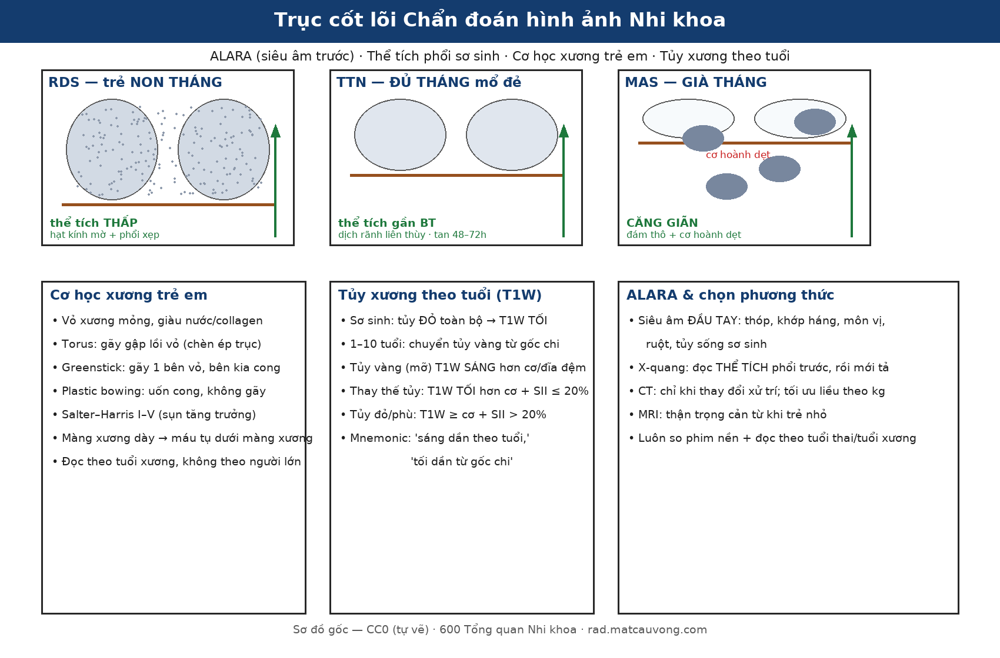

600 — Tổng quan Hệ Nhi khoa / Pediatric radiology overview
Tags: tong-quan
Mức chắc chắn (certainty): tổng hợp y văn (literature synthesis).
Trục cốt lõi hình ảnh Nhi khoa

Bốn trục đọc phim Nhi khoa: (1) ALARA — siêu âm đầu tay (thóp, khớp háng, môn vị, ruột, tủy sống sơ sinh), X-quang đọc thể tích phổi trước; (2) thể tích phổi sơ sinh — RDS thể tích thấp, TTN gần bình thường, MAS căng giãn; (3) cơ học xương trẻ — torus/greenstick/plastic bowing + Salter–Harris I–V; (4) tủy xương theo tuổi — tủy đỏ sơ sinh T1W tối → tủy vàng (mỡ) T1W sáng dần từ gốc chi. Sơ đồ gốc — CC0 (tự vẽ).Bảng so sánh phân biệt bắt buộc (Hệ Nhi khoa)
| Mẫu hình (pattern) | Vị trí (location) | Gamut chính (DDx) | Phân biệt nhanh (Chốt định lượng / Tín hiệu) | Bài chi tiết |
|---|---|---|---|---|
| Suy hô hấp sơ sinh (Neonatal respiratory distress) | Phổi sơ sinh (neonatal lung) | Bệnh màng trong (RDS), Thở nhanh thoáng qua (TTN), Hít phân su (MAS), Thoát vị hoành bẩm sinh (CDH) | Sinh non + phổi xẹp thể tích thấp + hạt kính mờ = RDS; Đủ tháng mổ đẻ + phổi ứ khí + dịch rãnh liên thùy tan sau 48–72h = TTN; Quai ruột trên ngực trái đẩy trung thất = CDH (cấm bóp bóng qua mask!) | 610 |
| Nốt gan MỚI ở trẻ sống sót ung thư (de-novo liver nodule in a childhood cancer survivor) | Gan (liver) | FNH-like sau hóa trị/HSCT · di căn u nguyên bào thần kinh · di căn Wilms · u nguyên bào gan · FNH-like bẩm sinh · NRH | Nhiều nốt 8–20 mm + HBP tăng 11/16 hoặc đồng 5/16 + không washout + AFP/catecholamine bình thường = FNH-like; AFP so với tuổi (sơ sinh tới 50.000 ng/mL là bình thường); HBP giảm tín hiệu = di căn/u nguyên bào gan; DWI hạn chế và CEUS "washout" vẫn có thể là FNH | 1793, 1733, 1648 |
| Hạch/khối tồn dư sau điều trị lymphoma (residual nodal mass after therapy) | Trung thất – cổ – mạc treo (mediastinum, neck, mesentery) | Xơ/vôi hóa sau điều trị · tái phát thật · tuyến ức phì đại hồi phục · u tế bào mầm/teratoma · lao/histoplasmosis · di căn vôi hóa (giáp nhú, osteosarcoma) | Quyết định theo Deauville, không theo kích thước: DS 1–3 = CMR (khối tồn dư mọi kích thước + PET âm vẫn là CR, Lugano); NPV 90–100% / PPV 50–100%; vôi hóa sau xạ xuất hiện trung bình 3 năm, dạng chấm/vỏ trứng, không đồng nghĩa khỏi; RTH 51,9–67,7% sau 2–3 tháng; canxi gây artifact hiệu chỉnh PET | 6153 |
| Elastase-1 phân thấp ở trẻ (low fecal elastase-1) | Tụy ngoại tiết – ruột non (exocrine pancreas – small bowel) | Xơ nang · Shwachman–Diamond · viêm tụy mạn/tái diễn · EPI thứ phát do bệnh ruột/SIBO · pha loãng do phân lỏng · mỡ tụy do béo phì | < 100 µg/g EPI nặng, 100–200 EPI, 200–500 vùng xám; gộp 888 bệnh nhân Se 0,94/Sp 0,69 (ngưỡng 200) nhưng trẻ viêm tụy Se 65,1%; PERT không ảnh hưởng elastase-1; tăng hồi âm tụy 90% ở EPI nhưng 33% trẻ lành; mỗi độ mỡ tụy OR 1,97 | 6168 |
| "Không thấy tụy" trên hình ảnh ở trẻ (vanishing pancreas) | Tụy – mầm tụy lưng/bụng – quanh SMA | Bất sản mầm lưng/toàn bộ · mỡ nội tụy (CF, SDS, JBS, MODY8) · teo do viêm tụy mạn · sau cắt tụy · thiếu lipase đơn thuần có hình ảnh bình thường | Chỉ đầu–móc dừng ở bờ SMA + mất mẫu ống xương cá = bất sản (toàn bộ < 50 ca, mầm lưng một phần ~100 ca); ống tụy CÒN trong vùng mỡ = mỡ nội tụy (16–35%, CF 80% suy ngoại tiết); elastase < 200 µg/g, bất sản toàn bộ thường < 50; PDX1 z −3,09, đái tháo đường 20 ngày tuổi | 6172, 6170, 6152 |
| Viêm tụy cấp do asparaginase ở trẻ ALL (asparaginase-associated pancreatitis) | Tụy – quanh tụy (pancreas, peripancreatic) | AAP · viêm tụy do corticoid · tăng triglyceride · bệnh mật/sỏi · thâm nhiễm bạch cầu · DKA · thủng ruột/viêm ruột trung tính | Đau thượng vị + lipase ≥ 3 × ULN trong 4 tuần sau liều asparaginase = AAP, kể cả khi CT bình thường (CT dương 25%, siêu âm 43%); giả nang ≥ 4 tuần 26–27% (khác WON có mảnh hoại tử); men ≥ 3 × ULN sau 72 giờ = AAP nặng → không dùng lại thuốc | 6171 |
| Ruột lồng trong ruột ở trẻ (intussusception) | Hồi tràng – manh tràng – đại tràng (ileocaecal junction, colon) | Lồng ruột hồi–manh tràng vô căn · lồng ruột có điểm dẫn (Meckel, polyp, lymphoma) · lồng ruột non thoáng qua (< 2,5 cm) · viêm ruột thừa · viêm hồi tràng · lồng ruột sau mổ | Dấu bia ngang + thận giả dọc = "ruột trong ruột", Se gộp 96,3% / Sp 95,7%; đường kính ngoài > 30 mm và dịch tự do dự báo thụt thất bại (42,5% ở đoàn hệ đến muộn); tái phát 7–15%, 5/6 trong 48 giờ; X-quang không dùng để chẩn đoán | 6178 |
| Đau chi + sốt ở trẻ, X-quang bình thường (paediatric acute osteomyelitis) | Hành xương xương dài – khung chậu – cột sống (metaphysis, pelvis, spine) | AHO không áp-xe · AHO có áp-xe dưới màng xương/trong tủy · u Ewing · CRMO · LCH · viêm khớp mủ · loạn sản xương sụn gai ngồi–mu | MRI là chốt (protocol nhanh, NPV 97%): phù tủy T1 tối/T2 sáng trong khi X-quang còn bình thường (10–14 ngày); áp-xe = DWI cao + ADC thấp; mổ khi áp-xe trong tủy hoặc màng xương đẩy > 2 mm; CRMO: nhiều ổ đối xứng, không áp-xe, Jansson 2 chính/1 chính + 3 phụ | 6179, 6105 |
| Tổn thương phổi bẩm sinh dạng nang / khối | Phổi trẻ em | Dị dạng đường thở phổi bẩm sinh (CPAM), Phổi biệt lập (sequestration), Khí phế thũng thùy bẩm sinh (CLE) | Nhiều nang chứa khí/dịch thông cây phế quản = CPAM; Khối đặc đáy phổi trái có nhánh ĐM nuôi tách trực tiếp từ ĐMC = Phổi biệt lập; Thùy trên trái căng khí đè xẹp phổi lành = CLE | 610, 612 |
| Viêm phổi ở trẻ em (round pneumonia / virus vs vi khuẩn / hít dầu hỏa) | Phổi (lung) | Viêm phổi tròn (Round pneumonia — S. pneumoniae), Viêm phổi virus (RSV...), Viêm phổi hóa chất do hydrocarbon | < 8 tuổi + sốt/ho + WBC–CRP tăng + đông đặc tròn KHÔNG mức khí–dịch = Round pneumonia (kháng sinh + X-quang lại sau 3–4 tuần); Mờ hai bên + ứ khí ở nhũ nhi = virus; Mờ hai đáy sau hít dầu hỏa + CẤM gây nôn = hydrocarbon | 615 |
| Biến chứng viêm phổi nhi (empyema & hoại tử phổi) | Màng phổi – nhu mô phổi (pleura – lung) | Viêm mủ màng phổi/PPE có biến chứng (empyema), Hoại tử phổi (necrotizing pneumonia), Áp-xe phổi, Nang khí (pneumatocele), Nang sán | Hai lá màng phổi dày ngấm thuốc tách nhau = split pleura (empyema; gặp 98,7% ca nhiễm trùng màng phổi); ổ giảm mật độ không ngấm + mất mạch máu trong đông đặc = hoại tử phổi; dẫn lưu khi pH < 7,20 · glucose < 40 mg/dL · LDH > 1000 IU/L · cấy (+); hoại tử > 50% thùy → cân nhắc cắt thùy | 616 |
| Viêm tiểu phế quản ở nhũ nhi (RSV) | Tiểu phế quản – phổi (bronchioles) | Viêm tiểu phế quản cấp (RSV), Viêm phổi khu trú, Viêm tiểu phế quản tắc nghẽn (BO)/Swyer-James | Nhũ nhi < 2 tuổi + wheeze/crackles + tăng ứ khí hai bên + xẹp vi mô KHÔNG đông đặc thùy = viêm tiểu phế quản (chẩn đoán lâm sàng, X-quang không thường quy); tràn khí màng phổi 0,5–2%; ho kéo dài + air trapping thì THỞ RA + giãn phế quản = BO | 613 |
| Viêm tiểu phế quản tắc nghẽn (BO) hậu nhiễm trùng & Swyer–James | Tiểu phế quản – phổi (bronchioles – lung) | PIBO/BO hai bên, Swyer–James–MacLeod (một bên), Asthma | Mosaic giảm tỷ trọng + ứ khí thì THỞ RA hai bên = PIBO/BO (tắc nghẽn cố định, đáp ứng giãn phế quản âm, triệu chứng > 6 tuần); một bên sáng + mạch thưa + rốn phổi nhỏ = Swyer–James; ứ khí một bên ĐỘT NGỘT → dị vật (nội soi!) | 614 |
| Hội chứng rò khí ở nhũ nhi (air-leak) | Phổi – màng phổi – trung thất (lung – pleura – mediastinum) | Tràn khí màng phổi (PTX), Tràn khí trung thất (PM/spinnaker-sail), Khí kẽ phổi (PIE), Tràn khí màng ngoài tim, Khí phúc mạc do barotrauma | Có bờ phổi tạng tách thành ngực + mất trượt màng phổi (điểm phổi) = PTX; nâng tuyến ức + dấu cơ hoành liên tục + V Naclerio = PM; AP-ratio < 0,10 → 0% cần can thiệp; > 0,19 → 100% (ngưỡng 0,184, AUC 0,902, Se 86%/Sp 88%); khí tự do dưới cơ hoành ở trẻ thở máy + bụng mềm = barotrauma, KHÔNG mổ bụng; tràn khí áp lực → chọc giải áp liên sườn 2–3 cạnh xương ức | 617 |
| Khí trung thất & khí dưới da ở trẻ: lành tính vs HOẠI TỬ | Cổ sâu – trung thất – thành ngực | Rò khí từ phổi (Macklin), thủng thực quản (Boerhaave), viêm trung thất hoại tử lan xuống (DNM), nhiễm khuẩn sinh khí (viêm dạ dày sinh hơi, viêm mô tế bào sinh khí) | Khí + không viêm quanh + tự tiêu = rò phổi lành tính (KHÔNG mổ); khí + dịch trung thất sau nôn dữ dội = Boerhaave (mổ cấp cứu, trì hoãn > 24 giờ tử vong > 40%); khí cổ sâu lan xuống T4 + sốt nhiễm độc = DNM (tử vong gộp 19,4%); khí TRONG thành tạng + thành dày + dịch quanh = nhiễm khuẩn sinh khí, không phải khí "đi lạc" | 649, 617, 618 |
| Rò khí DAI DẲNG & rò phế quản–màng phổi (BPF/PAL) | Phổi – màng phổi (lung – pleura) | Rò phế nang–màng phổi (APF/ngoại vi), BPF gốc phế quản sau cắt phổi, BPF do nấm/hoại tử, BPF bẩm sinh (rất hiếm), viêm màng phổi mủ do rò | Rò > 5–7 ngày / > 15–20 mL/phút (BTS) = PAL; đường thông phế quản–màng phổi + rò ngay khi kẹp ống (DIPAL) = BPF; hang dai dẳng sát gốc phế quản + Aspergillus = BPF do nấm; occlusion test giảm > 50% + khe liên thùy > 90% = hợp van một chiều (EBV); sau cắt thùy BPF 0,57%, tử vong 90 ngày 29,2% nhóm bảo tồn | 618, 617, 616 |
| Khí kẽ phổi (PIE) & tràn khí ÁP LỰC ở nhũ nhi | Khoảng kẽ phổi – màng phổi – màng tim (neonatal) | PIE, tràn khí màng phổi áp lực, tràn khí màng ngoài tim, tràn khí trung thất | Bóng khí kẽ CỐ ĐỊNH dọc mạch (không đổi tư thế) = PIE (khác bờ phổi tạng của PTX); điều trị PIE MỘT BÊN = nằm nghiêng bên tổn thương + giảm PIP/PEEP (khỏi 96 giờ); PIE khổng lồ/đẩy trung thất kháng trị → dẫn lưu qua da ± NKQ chọn lọc ± nội soi (ca 327 g); HFOV + "sigh breath" làm TĂNG tràn khí áp lực (OR 5,5; 15,6%); vòng khí ôm tim = tràn khí màng ngoài tim → siêu âm tim + chọc giải áp | 611, 617 |
| Dịch & khí màng ngoài tim ở nhũ nhi (pericardial effusion / pneumopericardium) | Màng ngoài tim – tim (pericardium – heart) | Dịch màng ngoài tim do catheter/sau mổ/nhiễm trùng, Tràn khí màng ngoài tim áp lực, Tràn khí trung thất, Bóng tim to do bệnh cơ tim | Khoang màng tim nhũ nhi < 5 mL; dịch/khí nhỏ nhưng tích tụ NHANH vẫn gây chèn ép; quầng khí ôm sát tim, KHÔNG vượt trên mạch máu lớn = tràn khí màng ngoài tim (halo 96%); nâng tuyến ức + cơ hoành liên tục = trung thất; bóng tim “bình nước” + siêu âm thấy khoảng âm = dịch; chèn ép tim → chọc dưới mũi ức dưới siêu âm; khí 2,9–14 mL/kg, để catheter đến khi dịch < 30 mL/ngày | 604, 611, 617 |
| Khí trung thất & khí dưới da do NHIỄM KHUẨN (khác rò khí lành) | Cổ sâu – trung thất – thành ngực (deep neck – mediastinum) | Rò khí lành tính (Macklin), DNM (viêm trung thất hoại tử lan xuống), Boerhaave (thủng thực quản), Nhiễm khuẩn sinh khí (viêm dạ dày sinh hơi), Khí do can thiệp | Khí KHÔNG có ổ dịch + bệnh nhân tỉnh = rò khí lành (tự khỏi 2–7 ngày); ổ dịch cổ sâu viền ngấm CÓ bóng khí + sốt/CRP > 100 = DNM (tử vong 11–40%, can thiệp lại > 50%); khí trung thất sau + dịch màng phổi hai bên sau nôn = Boerhaave (trì hoãn > 24 h → tử vong > 40%); thành dạ dày dày + bọt khí + lactate cao = viêm dạ dày sinh hơi (tử vong 26,9%, thủng OR 6,59), còn thành < 3 mm + không phù quanh = BGE lành; nhũ nhi có thể KHÔNG có dấu cổ điển | 649, 617, 612 |
| Ống dẫn lưu màng phổi (chest tube) & biến chứng ở trẻ | Khoang màng phổi – thành ngực (pleural space – chest wall) | Ống gấp khúc/tắc, ống lạc (nhu mô/khe liên thùy/phế quản gốc), chèn ép tim, phù phổi tái nở (RPE), tổn thương động mạch liên sườn, khí dưới da | Không cải thiện sau đặt ống → kiểm tra gấp khúc (hay gặp nhất) rồi CT tìm ống LẠC; đâm trong tam giác an toàn, TRÊN bờ sườn dưới (Fr ÷ 3 = mm); hút −10 đến −20 cmH₂O, KHÔNG hút ngay (RPE); rút khi hết rò khí ≥ 24h + phổi nở + dịch < 6 mL/kg/8h (rút sớm 3 vs 4,9 ngày); kẹp thử không giảm tái phát (tràn khí áp lực 0,4%) | 609, 617, 616, 618 |
| Catheter rốn ở sơ sinh (UVC/UAC): vị trí, lạc vị trí & biến chứng sớm | Tĩnh mạch rốn – xoang cửa – IVC/nhĩ phải; động mạch chủ – chậu | UVC đúng tại cavoatrial junction · UVC quá cao (nhĩ phải/trái) · UVC lạc xoang cửa/gan · PVT · tràn dịch–chèn ép tim · UAC cao T6–T9 · UAC thấp L3–L5 · thiếu máu chi dưới · NEC | UVC đúng = T8–T10 hoặc 0,5–1,0 cm trên cơ hoành (phim nghiêng); di lệch 50–90% trong 72 giờ → đặt sai thì chỉnh, di lệch muộn thì RÚT; POCUS Se 93,3%/Sp 95,6% vs X-quang 66,7%/63,0%; PVT sau UVC 19% và vị trí đầu catheter KHÔNG dự báo PVT (p = 0,46); UAC > 5 ngày → NEC-III AOR 3,8 | 3045, 3044, 622, 6111 |
| Rít hai thì ở nhũ nhi + khối dưới thanh môn ngấm mạnh (subglottic hemangioma) | Dưới thanh môn – vòng sụn nhẫn | U máu dưới thanh môn · Mềm sụn thanh quản · Hẹp dưới thanh môn · Croup · Nang dưới thanh môn · U nhú · Vòng mạch | < 6 tháng + rít HAI thì tiến triển + khối 118–300 HU dưới dây thanh + 24% có u máu da = SGH; rít thì HÍT VÀO, giảm khi nằm nghiêng = mềm sụn thanh quản; sốt + ho sủa + steeple sign = croup; propranolol đủ cho 80% u máu đường thở | 3005, 694, 612 |
| Rít hai thì sau rút ống ở trẻ (post-intubation airway stenosis) | Dưới thanh môn – vòng sụn nhẫn – khí quản | Hẹp sẹo mắc phải · Hẹp bẩm sinh · Mềm sụn thanh quản · U máu dưới thanh môn · Hẹp khí quản sau mở khí quản · Khí phế quản mềm · Vòng mạch | Tiền sử đặt ống + rít hai thì 1–6 tuần sau rút ống + hẹp tại vòng nhẫn = hẹp sẹo mắc phải (85,3% dưới thanh môn); Myer–Cotton I ≤ 50%, II 51–70%, III 71–99%, IV không lòng; nong bóng 65–86%, sớm < 30 ngày tới 100%, mạn ~39%; CT gộp Se 91,5%, CTVB 92% | 3047, 3005, 694, 602 |
| Rít/khàn lại SAU tạo hình-cắt nối thanh–khí quản (restenosis after LTR/PCTR) | Miệng nối dưới thanh môn – khí quản – lỗ mở khí quản | Mô hạt non · Sẹo xơ co kéo · Thiếu niêm mạc/diện ghép xơ · U hạt trên lỗ mở · Chỉ khâu lộ/bục miệng nối · Nhiễm màng sinh học quanh stent · Khí quản mềm động | 2–8 tuần + khối ĐỎ MỀM chảy máu = mô hạt non → nong/laser, KHÔNG mổ lại; > 3 tháng + dải TRẮNG CỨNG = sẹo xơ → cân nhắc mổ lại; mô hạt miệng nối 40,5%, tái hẹp sẹo 5,4% sau PCTR, 51,6–59,2% sau nong; 100% ca nhiễm vết mổ đều có stent (p = 0,041); cai ống 70,5%, 15,9% còn cannula; LT-Mold: cai ống 93%, 80% cần > 2 tháng; VHI 27,5 → 54,9 (1 tháng) → 22,2 (2 năm) | 3049, 3047, 3005, 602 |
| Khàn / hít sặc / khó cai ống sau mổ ngực–cổ ở trẻ (post-surgical vocal fold immobility) | Dây thanh – nhân hoạt động của dây X (vocal folds – vagal nuclei) | Liệt MỘT bên · Liệt HAI bên (khép/trung gian) · Liệt HAI bên tư thế MỞ · Hẹp thanh môn sau (PGS) · Hẹp dưới thanh môn · U máu dưới thanh môn · Malacia · Bất động do đau sau ống | Khàn sau mổ tim/đóng ống động mạch/đặt ống lâu + một dây bất động = liệt MỘT bên (bên TRÁI 83,6%; 24% sau mổ đóng ống động mạch, 0% sau catheter); rít thì hít vào + giọng gần bình thường (dysphonia chỉ 9,1%) + hai dây bất động = liệt HAI bên — nguyên nhân thất bại cai ống, can thiệp đường thở 60,8%; khớp nhẫn phễu CỐ ĐỊNH khi sờ + sẹo liên phễu = PGS, không phải liệt; siêu âm thanh quản Se 80,95% (một bên 93,33%, hai bên chỉ 3/6); LEMG sau ≥ 3–4 tuần: PPV 90,9% / NPV 55,6%; hít sặc ban đầu 33 trẻ, 48,5% hết sau trung vị 10,5 tuần | 3068, 3049, 3005, 602 |
| Nhũ nhi đang dùng propranolol bỗng lừ đừ / co giật / nhịp chậm (β-blocker adverse events) | Toàn thân – tim – đường thở (systemic – heart – airway) | Hạ đường huyết do propranolol · Nhịp chậm do thuốc · Block nhẫn nhĩ bẩm sinh · Tụt huyết áp · Co mạch ngoại vi (lạnh đầu chi) · Co thắt phế quản · Nhiễm khuẩn huyết · PHACE có bệnh động mạch não | Hạ đường huyết < 45 mg/dL (2,5 mmol/L), nhịp chậm < 100 lần/phút (< 3 tháng) hoặc giảm > 20%, tụt huyết áp = MAP dưới bách phân vị 10; yếu tố nguy cơ tuổi < 90 ngày, cân < 5 kg, 73% biến cố không dung nạp trong 30 ngày đầu; tái phát 17%, ngừng < 9 tháng → nguy cơ lớn lại cao nhất; ECG thường quy 13,9% bất thường nhưng 0 ca bị loại khỏi điều trị; u máu vùng râu → 33,3% có u máu đường thở | 3069, 3005, 3048, 3052 |
| Điếc dẫn truyền tồn tại sau chấn thương đầu/ngã (post-traumatic conductive hearing loss) | Tai giữa – chuỗi xương con | Trật khớp búa–đe · trật đe–bàn đạp · trật bàn đạp–tiền đình (rò mê đạo) · máu tụ tai giữa · rò DNT · vỡ vỏ ốc tai · cố định bàn đạp/dị tật | ABG > 10 dB còn sau 2 tháng = HRCT MPR 0,6 mm; tổn thương chuỗi 8,7% các ca vỡ, trẻ 13,7% vs 7,7% người lớn (p > 0,05); bác sĩ trực bỏ sót 72,7%; pneumolabyrinth = rò mê đạo → mổ 24–48 giờ; trễ chẩn đoán 5–6 năm | 3008, 208, 1704, 1713 |
| Trẻ viêm màng não tái diễn + nghe kém (recurrent meningitis with inner ear malformation) | Tai trong – ống tai trong – khoảng dưới nhện (inner ear – IAC – subarachnoid) | IP-I · IP-II/Mondini · IP-III · common cavity · ốc tai thiểu sản · hẹp IAC < 2 mm · hẹp lỗ ốc tai ≤ 1,5 mm · EVA · rò DNT mũi/sàn sọ · suy giảm miễn dịch | 6/10 trẻ viêm màng não tái diễn có dị tật tai trong; IP-I = mất modiolus + mất vách liên vòng + mất vách IAC–ốc tai → rò qua đế bàn đạp; IAC < 2 mm** (bình thường 4 mm), **lỗ ốc tai ≤ 1,5 mm**, **EVA Cincinnati > 0,9 mm/operculum > 1,9 mm; gusher 2% (21/1.050), viêm màng não sau cấy ốc tai 0,12% (10/1.300), 6/10 có rò DNT; HRCT ≤ 0,8 mm + MRI 3D CISS, CT/radionuclide cisternography chọn bên rò | 3062, 3008, 208, 497 |
| Trẻ có ống mở khí quản xấu đột ngột / khó cai ống (pediatric tracheostomy complications) | Lỗ mở – khí quản trên/dưới lỗ mở – đầu ống (stoma – trachea) | Tắc ống do vảy tiết/nút nhầy · U hạt quanh/trên lỗ mở · Sụp trên lỗ mở · Biến dạng chữ A · Hẹp khí quản mắc phải · Rò khí–da · Ống quá sâu vào phế quản gốc phải | U hạt 81,0% (quanh lỗ 69,8%, trên lỗ 34,9%), rơi ống 13,6%, chảy máu 7,2%; sụp trên lỗ mở 55% (73,7% ở 5 năm), chữ A 18% (56% xuất hiện SAU cai ống, 36,1%/3 năm); cai ống 21–91%, mỗi lần thử 58% (thất bại hay ở ngày 2 — lúc bịt ống); rò khí–da 49% phải mổ; PSG khi bịt ống: oAHI 1,7 vs 5,4/giờ, EtCO₂ 50,0 vs 58,7 torr; đo ống–carina trên X-quang KHÔNG tương quan nội soi, khoảng cách càng ngắn → biến cố nặng p = 0,03 | 6100, 602, 606, 612, 3047 |
| Đầu to ở nhũ nhi (macrocephaly) | Đầu – não – khoang dưới nhện (head – brain – SAS) | BESS · não úng thủy tắc nghẽn/thông thương · tụ dịch dưới màng cứng · megalencephaly (NF1, PTEN, Sotos, bệnh chất trắng) · nang màng nhện · loạn sản xương (achondroplasia) · đầu to gia đình | OFC > +2 SD (2–3% trẻ khỏe ở +2 đến +3 SD; "đáng lo" khi > +3 SD); siêu âm qua thóp: CCW > 5 mm (rộng), > 10 mm (rộng đáng kể), IHW 6–8,5 mm; mạch cầu bắc ngang khoang rộng + không màng nhện = BESS; giãn não thất + rãnh xẹp + thóp căng = não úng thủy → MRI/ngoại thần kinh; BESS + tụ dịch: 33,7% có tổn thương kèm → soi đáy mắt/X-quang xương; > 30% BESS chậm phát triển | 3065, 3007, 218 |
| Trẻ có ống mở khí quản sốt + tăng tiết + đám mờ phổi mới (TRAIN/TAI) | Lòng ống – khí quản – nhu mô phổi (tube – trachea – lung) | Viêm phổi vi khuẩn (TRAIN) · Viêm phổi virus · Xẹp do nút nhầy · Viêm phổi hít sặc · Viêm thanh khí quản màng giả · U hạt lỗ mở · Áp-xe/mủ màng phổi · Dị vật/mảnh ống gãy | Cấy dịch hút khí quản dương tính 25–87% cả lúc khoẻ — Se 27%/Sp 85% cho chẩn đoán; P. aeruginosa, S. aureus không dự báo TRAIN; cần ≥ 1 dấu hiệu toàn thân + ≥ 1 dấu hiệu hô hấp (BrighT STAR); PCR virus dương → ngưng kháng sinh sớm: 7,0 vs 8,6 ngày mà tử vong 0,9% không khác; mờ kèm mất thể tích = xẹp, không phải viêm phổi | 6124, 6100, 6123, 3047 |
| Trẻ có ống mở khí quản ho/sặc khi ăn + viêm phổi tái diễn (dysphagia/aspiration with tracheostomy) | Hầu – thanh quản – khí quản (swallow tract) | Hít sặc do chậm khởi phát · Ứ đọng sau nuốt · Hít sặc im lặng (PAS 8) · Rò khí–thực quản · Hít sặc nước bọt · Hẹp dưới thanh môn · Trào ngược | Rối loạn nuốt 37% → 91% sau mở khí quản; pha miệng 88%, khởi phát nuốt 53%, pha hầu 67%; aspiration chất loãng 28% vs đặc 17% (p = 0,002); thử ăn đường miệng có kiểm soát: viêm phổi 30% vs 47,1% (p = 0,242), PAS 8 → 6 (p = 0,003); baryt từ thực quản sang khí quản = rò khí–thực quản, CT nằm sấp | 6123, 6100, 082, 3047, 3068 |
| Ho/sặc/rít xuất hiện SAU khi rút ống mở khí quản (post-decannulation aspiration) | Thanh quản – khí quản trên lỗ mở – hầu | Sụp trên lỗ mở (SSC) · Biến dạng chữ A · Mô hạt · Hẹp dưới thanh môn · Rò khí–da · Loạn nuốt do bệnh nền · Trào ngược | SSC 55–57%, chữ A 18% (56% xuất hiện sau cai ống, trung bình 11,3 tháng), mô hạt 16,2%, rò khí–da 15,4%; rối loạn nuốt 37% → 54%, sặc loãng 28% vs đặc 17%; PCF < 160 L/phút** hoặc hút **> 2 lần/8 giờ = chưa an toàn → VFSS/FEES lại, không mặc định "rút ống là ăn được" | 6160, 6123, 6100, 6144, 6143 |
| Gan to + nhiều ổ giảm âm/T2 sáng ở nhũ nhi (infantile hepatic hemangioma) | Gan – shunt động–tĩnh mạch trong gan | IHH đa ổ/lan tỏa · CH (RICH/NICH) · Hepatoblastoma · Mesenchymal hamartoma · KHE · Di căn neuroblastoma · Áp-xe gan | ≥ 5 u máu da + gan to + nhiều ổ T2 sáng + AFP giảm dần = IHH; u > 4 cm; shunt → suy tim (gradient RVOT 18→9 mmHg); D3 → TSH cao/rT3 cao, LT4 24 mcg/kg/ngày; propranolol 2–3 mg/kg/ngày | 3048, 3005, 630, 1804 |
| Khối gan MỘT Ổ có từ trong tử cung ở sơ sinh (congenital hepatic hemangioma) | Gan – một ổ (focal) | CHH: RICH · PICH · NICH · thể tăng sinh ngắn sau sinh · IHH đa ổ · Hepatoblastoma · Mesenchymal hamartoma · KHE · Di căn neuroblastoma | MỘT ổ + đã tối đa lúc sinh + GLUT1 âm = CHH (focal = CHH theo Boston Registry); RICH giảm ~80% thể tích quanh 12 tháng, NICH không giảm ≥ 18 tháng, có thể lớn muộn; khổng lồ > 4 cm: 0,64/10.000, tử vong 30–100%; dự báo suy tim trước sinh: đường kính > 4,85 cm (AUC 0,859, Se 100%/Sp 70,2%), CTR 0,40 vs 0,27, shunt cửa–hệ thống 100% vs 19,1%; sirolimus ở NICH khổng lồ giảm 84% thể tích | 3052, 3048, 630, 674 |
| Vàng da ứ mật ở trẻ đang nuôi dưỡng tĩnh mạch (IFALD & hội chứng ruột ngắn) | Ruột non còn lại – gan – đường mật | IFALD · Teo đường mật · Nang ống mật chủ · Ứ mật do bùn mật · Sỏi túi mật do PN · Viêm gan sơ sinh/Alagille · SIBO | PN ≥ 14 ngày + DB ≥ 2 mg/dL × 2 tuần + đã loại teo đường mật = IFALD; IFALD 40–60% PN dài hạn, mỗi đợt nhiễm khuẩn huyết ×3,2 nguy cơ vàng da; dây tam giác > 3–4 mm + không thấy ống mật chủ = teo đường mật (đa lách Sp 100%/Se 10%); đổi SO-LE 3 → FO-LE 1 g/kg/ngày: đảo ngược ứ mật nhanh 6 lần; sỏi 6,5 mm có thể tồn tại sau khi hết ứ mật | 3006, 693, 641, 646 |
| Trẻ hội chứng ruột ngắn phụ thuộc PN + ruột giãn, nôn dịch mật, SIBO (SBS với giãn ruột mất bù) | Ruột non còn lại – tá tràng/hỗng tràng | Giãn thích nghi · Giãn mất bù do SIBO · Hẹp/tắc đường khâu cũ · Rối loạn nhu động · Tắc cơ học do dính · Ứ trệ do thuốc | SBS = PN > 6 tuần hoặc ruột còn lại < 25% chiều dài dự kiến**; **STEP cần lòng ≥ 3,5–4 cm, giữ lòng 2 cm, cách 2–2,5 cm**, dài thêm **50–75%**, cai PN **42–73%** (sổ bộ **47%**, trung vị **21 tháng**, tử vong **11%**); **LILT cần đoạn > 20 cm, cai 32–52%, tử vong cao hơn; bilirubin trực tiếp cao + ruột trước mổ ngắn dự báo ghép/tử vong; giãn ruột đơn thuần KHÔNG phải chỉ định mổ | 3053, 3006, 646, 693 |
| Khối hông lưng / thận to ở sơ sinh (neonatal flank mass) | Thận – tĩnh mạch thận – thượng thận (sơ sinh) | Huyết khối tĩnh mạch thận (RVT) · Xuất huyết thượng thận · Ứ nước thận · U nguyên bào thận/nephroblastomatosis · Viêm thận–bể thận mủ · Huyết khối động mạch thận | Thận TO + mất dòng tĩnh mạch thận + RI tăng so bên đối diện = RVT (thận trái 2,8 lần; 2,2/100.000 trẻ sinh sống, 13/100.000 đẻ non); khối TRÊN thận, thận bình thường = xuất huyết thượng thận; RI sinh lý ở sơ sinh đã cao → phải so bên–bên, không dùng ngưỡng 0,70 của người lớn; teo thận 67–90,9%, tăng huyết áp 38,8% sau 11,1 năm | 6111, 6112, 151, 157, 635 |
| Huyết khối động mạch chủ sau catheter động mạch rốn (UAC) | Động mạch chủ bụng – chậu – động mạch thận (sơ sinh) | Huyết khối ĐM chủ do UAC · Huyết khối ĐM chậu trong (catheter lạc) · Coarctation · Huyết khối ĐM thận · Huyết khối tự phát do mất nước tăng Na⁺ · Co thắt do lạnh | Mất mạch bẹn + chi lạnh + vô niệu/THA ở trẻ có UAC = tắc ĐM chủ–chậu: Doppler đầu tay, CTA khi cần mức lan; huyết khối ĐM ở trẻ UAC 8–20% (gộp 8,2%, KTC 1,91–18,20), catheter ĐM nói chung 21%; vị trí UAC cao 44% có huyết khối (phần lớn im lặng); UL-UAC 0/235; heparin dự phòng 0,25–1 U/mL kéo dài thông nhưng không giảm huyết khối; đe dọa chi/cơ quan → tiêu sợi huyết, không → kháng đông | 6113, 3045, 6111, 6112 |
| Di chứng muộn huyết khối tĩnh mạch cửa sau catheter rốn (EHPVO/cavernoma) | Tĩnh mạch cửa – rốn gan – lách – tĩnh mạch thực quản | Portal cavernoma · Xơ gan · Budd–Chiari · Teo đường mật sau Kasai · Tắc tĩnh mạch lách · Nang ống mật chủ · Giả phình ĐM gan | PVT sau UVC 19% (200/1.052), 43% không triệu chứng, 56% tan; cavernoma = chùm mạch quanh rốn gan thay TM cửa chính; giãn TM thực quản 97% ở 5,5 tuổi, 58% chảy máu; lách to > 90%, chậm tăng trưởng 50%, báng 8,3%, portal biliopathy 45,2% (67% trên MRCP), 25% có triệu chứng; banding + propranolol; Meso-Rex khi TM cửa trái ≥ 2 mm, thông shunt 83–86%, vận tốc ≥ 15 cm/s | 6114, 3045, 6113, 176, 183 |
| Tăng áp cửa phía trái do tắc tĩnh mạch lách (sinistral/left-sided portal hypertension) | Tĩnh mạch lách – tĩnh mạch dạ dày ngắn – đáy vị – lách | Huyết khối/hẹp tĩnh mạch lách · Viêm tụy cấp–mạn · Nang giả tụy · U tụy (SPN/IPMN) · Lách lạc chỗ xoắn · EHPVO · Xơ gan · Giãn tĩnh mạch dạ dày nguyên phát | TM cửa chính THÔNG + TM lách tắc + lách to + varices ĐÁY VỊ đơn độc = LSPH, không phải xơ gan; varices dạ dày đơn độc 92,3%, lách to 67,6%, cường lách chỉ 1,4% (tiểu cầu bình thường không loại trừ); chảy máu 11,6% thô, ~30% tích lũy sau 3 năm; keo cyanoacrylate 93,9% vs 79,5% thắt vòng; PSE đốt 40% (IQR 25–60) lách; cắt lách khi tái chảy máu, tiêm phòng mỗi 5 năm | 6115, 6114, 135, 136 |
| Tăng huyết áp do mạch máu thận ở trẻ (renovascular hypertension) | Động mạch thận – ĐMC bụng – nhu mô thận | Huyết khối ĐM thận sau UAC · FMD · Takayasu · NF1 · Hội chứng ĐMC giữa · Loạn sản thận một bên · U chèn ép | Thận nhỏ chênh ≥ 1 cm + phổ parvus–tardus + renin cao = nghi hẹp ĐM thận; RVH chiếm 5–25% THA ở trẻ; Doppler Se 65–88%/CTA 88%/MRA 80%; 28% tổn thương chỉ thấy trên chụp mạch; nong bóng khỏi 39,3% lần 1 → 57,1% sau nhiều lần; stent hẹp lại 35,5% vs 17,4%; teo thận > 70% sau huyết khối mạch thận sơ sinh; ACEi chống chỉ định khi hẹp hai bên/một thận | 6117, 6113, 6111, 850 |
| Hẹp eo động mạch chủ ở trẻ (aortic coarctation) | Eo ĐMC ngay sau động mạch dưới đòn trái – ĐMC xuống – động mạch liên sườn | Hẹp eo thật · giả hẹp eo (kinking) · giảm sản quai · đứt đoạn ĐMC · "CoA giả" do huyết khối UAC · hội chứng ĐMC giữa/FMD–Takayasu · hẹp lại sau mổ | Chênh huyết áp tay–chân > 20 mmHg + gradient ≥ 20 mmHg + hẹp khu trú có bàng hệ; dấu "3" và khuyết sườn 4–8; 5–8% CHD, 4/10.000 trẻ sinh sống; nong bóng nhũ nhi (< 10 kg), stent trẻ lớn; THA tồn lưu 25–62%, hẹp lại 30–59% | 6116, 6119 |
| Tăng huyết áp tồn lưu & hẹp lại sau can thiệp hẹp eo ĐMC (residual hypertension / recoarctation) | Eo ĐMC – quai ngang – ĐMC xuống tại chỗ stent/miệng nối | Hẹp lại tại miệng nối/stent · giảm sản quai ngang · stent nong không hết/gãy stent · phình giả · tái cấu trúc mạch máu (PWV tăng) · hẹp ĐM thận · THA nguyên phát | HA 4 chi + holter 24 giờ; gradient xâm nhập ≥ 20 mmHg (CW trung bình ≥ 22) = can thiệp lại; hẹp lại gộp 12%, sau mổ 15% vs can thiệp qua da 35%; can thiệp lại 13,3%/10 năm; THA tồn lưu 23%; PWV 6,8 vs 5,4 m/s dù HA bình thường | 6119, 6116, 6118 |
| U tụy ở trẻ (pediatric pancreatic tumors) | Tụy – ống tụy chính – tĩnh mạch lách | U đặc–nhầy nhú (SPN) · u nguyên bào tụy (PB) · IPMN nhánh · nang giả tụy · NET · lymphoma · SPN vỡ | Khối lớn đặc–nang có vỏ bao xơ + T1 sáng do máu + ngấm thuốc tiến triển = SPN; SPN 0,1–0,2/1 triệu trẻ/năm, Ki-67 5% vs 30% (PB); cắt thân–đuôi giữ lách, theo dõi tĩnh mạch lách | 6120 |
| Nhiễm trùng, di trú và gãy stent mạch sau can thiệp ở trẻ (stent infection / migration / fracture) | Eo ĐMC – quai – ĐMC xuống tại stent; tạng đích của thuyên tắc nhiễm khuẩn (lách, chậu, phổi) | Nhiễm stent/viêm động mạch chủ · giả phình giả nhiễm trùng · huyết khối trong stent · hẹp trong stent · di trú stent · gãy stent/mảnh trôi · sốt do ổ nhiễm khác | Sốt sau stent + FDG khu trú ở stent (dương tính giả vài tuần đầu); CTA có thể âm vì nhiễu kim loại → phải TEE + PET/CT; tử vong viêm động mạch chủ nhiễm trùng 21–44%, cao hơn khi chỉ kháng sinh; di trú stent ~5%, gãy stent 24,4% ở 48–60 tháng; giả phình giả → mổ lấy stent + homograft, kháng sinh đơn thuần chỉ khi chưa phá thành | 6142, 6116, 6119, 6110 |
| Hội chứng động mạch chủ giữa (mid-aortic syndrome, MAS) | ĐMC bụng đoạn trên thận/liên thận – động mạch thận – mạch treo tràng trên – thân tạng | MAS vô căn · Takayasu · FMD · hội chứng gen (Williams, Alagille, NF1, Turner, TSC) · chèn ép ngoài · hẹp eo ĐMC ngực · hẹp ĐM thận đơn thuần | Trẻ tăng huyết áp kháng trị + hẹp ĐMC BỤNG trên CTA/MRA + 66% hẹp ĐM thận (60% hai bên); 0,5–2% hẹp ĐMC, 20–48% THA do mạch thận; Doppler PSV ~400 cm/s, AT > 70 ms, parvus–tardus; 28% tổn thương chỉ thấy trên DSA; nong bóng can thiệp lại 67%/5 năm, bắc cầu chủ–chủ 55–64%, khỏi THA 36–70%; KHÔNG chênh huyết áp tay–chân không loại trừ | 6118, 6116, 6117, 850 |
| Rò tụy sau mổ tụy ở trẻ (postoperative pancreatic fistula, POPF) | Diện cắt thân tụy – miệng nối tụy–ruột – ống tụy chính – khoang quanh tụy | Rò sinh hóa (BL) · độ B · độ C · viêm tụy cấp sau mổ (PPAP) · rò mật · rò dưỡng trấp · giả phình/chảy máu muộn · nang giả tụy | Amylase dịch dẫn lưu > 3× ULN từ POD 3 = POPF; BL không đổi xử trí, độ B cần dẫn lưu/nội soi, độ C suy cơ quan/mổ lại; trẻ POPF 11%, CR 3,4%, bóc u đầu tụy nặng nhất; amylase ngày 1 > 5.000 U/L (OR ~3), < 600 U/L loại trừ; sentinel bleed → CTA + nút mạch | 6121, 6120, 135, 136 |
| Đau bụng cấp + men tụy ≥ 3× ULN ở trẻ (pediatric acute pancreatitis) | Tụy – ống tụy chính – khoang quanh tụy | Viêm tụy thể phù · hoại tử cấp (ANC) · pseudocyst · WON · nang ống mật chủ · chấn thương tụy · thuốc (valproate, asparaginase) · tăng triglyceride · nguyên nhân gen | 2/3 tiêu chuẩn INSPPIRE; US dương 40,5%, MRI 60%, 41% MRI dương mà US âm; CT chỉ sau ≥ 72 giờ, không dùng để chẩn đoán; < 4 tuần = APFC/ANC, ≥ 4 tuần = pseudocyst/WON; ARP 18%, CP 10%; không kháng sinh dự phòng | 6135, 135, 6120, 6121 |
| Tụy to lan tỏa "xúc xích" + hẹp ống tụy dài ở trẻ có IBD (pediatric autoimmune pancreatitis) | Tụy toàn tuyến – ống tụy chính – ống mật chủ đoạn trong tụy | P-AIP type 2 (IBD) · P-AIP type 1 (IgG4) · viêm tụy cấp/ARP · u tụy (SPN, nguyên bào tụy, lymphoma) · nang ống mật chủ · viêm tụy do thuốc · viêm tụy mạn di truyền | To lan tỏa + mất phân thùy + ngấm muộn dạng đốm + vỏ bao quanh + ống hẹp dài KHÔNG giãn nhiều = P-AIP; IgG4 chỉ tăng 15,2%, men tụy bình thường 46–57%, vôi hóa 0%; corticoid → lui bệnh 83,8%, tự khỏi 24,3%, tái phát 17–25%; khối khu trú + giãn ống rõ + không đáp ứng = u, đừng cắt tụy chẩn đoán | 6145, 6120, 6135, 6136, 6137 |
| Sỏi mật ở trẻ TAN MÁU — cắt túi mật lúc nào (gallstones in hemolytic disease) | Túi mật – ống mật chủ ở trẻ HS/SCD/thalassemia | Sỏi sắc tố (nhiều viên nhỏ) · bùn mật · giả sỏi ceftriaxone · polyp · sỏi OMC · viêm đường mật · viêm tụy do sỏi · cơn tan máu cấp | 65,6% HS / 50% thalassemia / 0% ITP lúc cắt lách, SCD 13,6–35,9%; 72,3% trẻ tan máu được ERCP có sỏi OMC, nhưng 80% nhóm không sỏi vẫn "nguy cơ cao" ASGE → MRCP/EUS trước ERCP; biến chứng đường mật 57,1% HS nặng vs 16,7% trung bình; OMC bình thường 1,01/2,36/2,77 mm theo tuổi; cắt cùng lúc cắt lách an toàn, một thì ERCP+LC 320 vs 361 phút, 5,3 vs 6,8 ngày; GPC tái phát 6,2% nhưng 9,3% viêm phúc mạc mật | 6154, 6146, 6137, 6135 |
| Vôi hóa – sỏi – giãn ống – teo tụy ở trẻ (pediatric chronic pancreatitis) | Tụy – ống tụy chính – ống Santorini – đường mật trong tụy | CP di truyền (PRSS1/SPINK1/CFTR) · CP vô căn · pancreas divisum · tụy vòng · nang ống mật chủ · hẹp sau chấn thương · P-AIP · thay mỡ đơn thuần · SPN | Chỉ 44% trẻ CP có vôi hóa và P-AIP 0% → KHÔNG chờ vôi hóa; INSPPIRE: đau kiểu tụy + hình ảnh, HOẶC elastase < 200 µg/g/ĐTĐ, HOẶC chỉ hình ảnh; ARP 18% → CP 10%; trong ARP 35% thành CP; PRSS1 OR 4,56, divisum OR 2,64; MRCP trước, CT khi cần calci/quy hoạch mổ; ERCP PEP 17,6% (đều nhẹ); LPJ giảm đau nhưng không ngăn EPI/ĐTĐ; TP/IAT gần 50% phụ thuộc insulin sau 1 năm | 6152, 6145, 6136, 628, 6137 |
| Sỏi mật / giả sỏi do thuốc ở trẻ (pediatric cholelithiasis) | Túi mật – ống mật chủ | Sỏi hỗn hợp/cholesterol · sỏi sắc tố (tan máu) · sỏi bùn & giả sỏi ceftriaxone · polyp/u tuyến · viêm túi mật cấp · sỏi ống mật chủ · nang ống mật chủ | Bóng lưng + di động = sỏi thật; không bóng lưng + tan sau ngừng ceftriaxone (giả sỏi 4,1–27,3%) = giả sỏi; 0/380 trẻ thấy sỏi OMC trên siêu âm → vàng da/ALP tăng phải MRCP; thành > 3 mm + dịch quanh = viêm cấp; ERCP nhi thành công 91,4% | 6146, 6137, 6135, 6145 |
| Nang/giãn đường mật ở trẻ (choledochal cyst) | Ống mật chủ – ống gan – ống mật trong gan | Todani I/IVa/V · teo đường mật thể nang · nang giả tụy · nang lặp lại tiêu hóa · túi mật căng nước · sỏi ống mật chủ | Nang thông với cây đường mật + MRCP Se 90–100% = nang ống mật chủ; LDC 4,3 vs 1,9 cm và GGT 296,5 vs 482 U/L ở trẻ < 60 ngày (CC vs CBA); dẫn lưu nang OR ung thư 3,97 | 6137, 6135, 135 |
| Xuất huyết tiêu hóa / Hb tụt sau viêm tụy hoặc chấn thương tụy ở trẻ (peripancreatic pseudoaneurysm) | Động mạch lách – vị–tá tràng – tá–tụy – gan (quanh tụy) | Giả phình động mạch tạng · Xuất huyết hoạt tính · Máu tụ tổ chức hóa · Nang giả tụy không biến chứng · Phình thật · Giãn tĩnh mạch quanh tụy | Túi bắt thuốc ĐỒNG THÌ với động mạch + giữ thuốc thì muộn + có cổ = giả phình; CTA và DSA chỉ khớp κ 0,29 → CTA âm KHÔNG loại trừ (18/26 đợt CTA âm vẫn nút mạch được); nút mạch là điều trị đầu tay (thành công 86,5%) | 6122 |
| Bệnh phổi mạn tính của trẻ sinh non (BPD) | Phổi trẻ sinh non (preterm lung) | BPD (NICHD 2018 I–IIIB / Jensen 2019 1–3) · PIE · CPAM · CLO · viêm tiểu phế quản · giãn phế quản · BPD-PH | BPD = còn cần hỗ trợ hô hấp tại 36 tuần PMA ở trẻ < 32 tuần**; **grade 1 cannula ≤ 2 L/phút, grade 2 > 2 L/phút hoặc NIV, grade 3 thở máy (3A < 32 tuần, 3B ≥ 32 tuần); bubbly/cystic ngày 28 → oxy tại nhà (2% nếu không có); PH 20–40% ở BPD nặng; TBM 10–48%; SpO₂ mục tiêu 90–95% | 606, 610, 611, 605 |
| Tăng áp phổi trong bệnh phổi mạn nhi (BPD, PIBO, giãn phế quản) | Tuần hoàn phổi – tim phải | BPD-PH type 1 (trước mao mạch) · type 2 (shunt, tăng dòng) · type 3a (tim trái) · type 3b (hẹp tĩnh mạch phổi) · PH do tắc nghẽn đường thở nhỏ | RVSP ≥ 50% áp lực hệ thống + vách dẹt tâm thu (EI ≥ 1,3) + PAAT:RVET < 0,30** = PH; **vách dẹt tâm trương + buồng trái giãn = shunt**; **tĩnh mạch phổi > 160 cm/s = hẹp tĩnh mạch phổi; giãn mạch phổi ở nhóm 3 có thể làm nặng V/Q | 686, 606, 669, 610 |
| Xẹp đường thở trung tâm thì thở ra (TBM) ở trẻ BPD | Khí quản – phế quản gốc | TBM do sụn · EDAC (màng sau) · thể liềm/chu vi/lưỡi kiếm · bronchomalacia · hẹp dưới thanh môn · vòng mạch chèn ép | Xẹp > 50% diện tích lòng khi thở ra, hết khi hít vào = TBM; EDAC: sụn chữ C còn nguyên, màng sau lồi; nội soi dưới gây mê bỏ sót 35%; PEEP 13 vs 10,5 cmH₂O (mỗi +1 cmH₂O OR 1,36); aortopexy thành công 84% | 602, 606, 611, 694 |
| Xẹp phổi MỘT BÊN tái diễn ở trẻ BPD/TBM (recurrent unilateral atelectasis) | Phế quản thùy/gốc – phổi | Nút nhầy · TBM/bronchomalacia · Hẹp phế quản sau ống · Dị vật · Chèn ép mạch máu · MLS (thùy giữa/lưỡi) · PCD/CF-hít sặc (xẹp “di chuyển”) | Mất thể tích (khe/trung thất/cơ hoành) = xẹp, không phải viêm phổi; nội soi lần đầu bỏ sót TBM 35%; dị vật: 43,7% phế quản gốc phải, chỉ ~11% cản quang, CXR Se 94,9%/Sp 71,0%, CT Se 63,2%/Sp 100%; TBM 24,69% trong 81 trẻ BPD; MLS ở hen 1,62% | 6101, 602, 606, 6100, 3047 |
| “Trắng phổi”/xẹp toàn bộ một bên ở trẻ lớn (unilateral white lung) | Phế quản gốc – phổi | Bã nhầy phế quản (plastic bronchitis) · Dị vật · Empyema/viêm phổi hoại tử · Dị dạng phổi bẩm sinh · Sau mổ phổi | Mất thể tích + KHÔNG phế quản hơi sau chỗ tắc = cast lấp lòng phế quản; PB 14,67% trong SMPP, 94,2% do M. pneumoniae, tái phát 24,1%; cast dai hình phân nhánh = chốt đại thể; trung thất bị đẩy xa = empyema, không phải xẹp | 6126, 6101, 616, 614 |
| Gãy nhiều xương + dải sáng đầu xương ở nhũ nhi (multiple fractures with metaphyseal bands) | Xương dài – sụn tiếp hợp | Giang mai bẩm sinh · Bạo hành trẻ · Xơ xương bất toàn · Còi xương/scorbut · Nhiễm CMV/rubella bẩm sinh · Viêm màng xương sinh lý | Dải sáng ngang đầu xương ĐỐI XỨNG + màng xương dày = giang mai bẩm sinh (60–80% có tổn thương xương); OI: xương mỏng toàn thân + gãy nhiều lứa tuổi; bạo hành: gãy không đối xứng, góc xương, không dải sáng đầu xương; viêm màng xương sinh lý < 2 mm, tự hết 1–2 tháng | 6127, 6134, 6102, 6103 |
| Theo dõi sau mổ thoát vị hoành bẩm sinh (CDH) | Cơ hoành – phổi – tiêu hóa | Tái phát thật · thoát vị hoành–thực quản thứ phát · liệt/eventration · giảm sản phổi tồn dư · PH mạn · trào ngược/tắc ruột do dính | Tái phát 9,5%, 43,2% không triệu chứng, 51,4% trong năm đầu; CDH trái RR 8,5, vá thành bụng RR 3,2; PH mạn 4,5–38%; trào ngược 18,0% triệu chứng nhưng 13,4% khách quan; tái nhập viện 72,5%/3 năm, tử vong muộn 1,4% | 608, 610, 606, 602 |
| Hạ oxy kháng oxy ở sơ sinh (PPHN) | Tuần hoàn phổi – tim phải (sơ sinh) | PPHN thể maladaptation · PPHN + bệnh nhu mô (MAS/RDS/viêm phổi/CDH) · tim bẩm sinh tím (TAPVC, TGA, teo phổi) · PPHN do tim trái (nhóm 2) · loạn sản phổi (TBX4/ACD) | Chênh SpO₂ tay phải–chân > 5% + hạ oxy không đáp ứng FiO₂ cao = shunt phải–trái (PPHN); D-shape thất trái = áp phổi 50–100% hệ thống, lưỡi liềm = > hệ thống; PASP = 4×TR Vmax² + RAP; TR chỉ có 60–85%; iNO 20 ppm, đáp ứng PaO₂ tăng ≥ 20 mmHg/30 phút; ECMO khi OI > 40 kéo dài > 4 giờ; hết bệnh > 10 ngày → nghĩ loạn sản phổi | 607, 605, 686, 610 |
| Trẻ sơ sinh có mẹ viêm màng ối: dùng kháng sinh bao lâu (EOS & antibiotic duration) | Toàn thân sơ sinh – phổi – máu – màng não | EOS do GBS/E. coli · viêm phổi sơ sinh · RDS · TTN · MAS · PPHN · tim bẩm sinh · NEC | EOS 0,49/1.000, tử vong 3,20%, nhưng 2,86% trẻ nhận kháng sinh — 58 trẻ điều trị/ca EOS, 273 ngày kháng sinh/ca; > 90% EOS có triệu chứng trong 48 giờ; cấy máu ≥ 1 mL trước thuốc; cấy âm + trẻ khỏe → dừng 24–36 giờ; nghi nhiễm cao → dừng muộn nhất ngày 5; Gram dương 7–14 ngày, Gram âm 14–21 ngày; một CRP lúc 6 giờ không có giá trị | 1937, 1926, 610, 607 |
| Theo dõi dài hạn sau PPHN (long-term outcome) | Tuần hoàn phổi – tim phải – não – tai | PH tồn tại/tái phát · BPD-PH · Shunt trái–phải · Hẹp tĩnh mạch phổi · TBM “PH giả” · Di chứng não do thiếu oxy | NDI 25% ở 18–24 tháng, bại não 3,8%, SNHL 6,4%, IQ < 70: 9,2%; ASQ-3 bất thường 47,3% (18% nghi); mỗi 1% giảm SpO₂ trước ống → OR 1,1; RVSP = 4×TRV² + RAP, PAAT < 100 ms, TRV/RVOT VTI 0,14 (Se 96%/Sp 93%); BPD-PH tử vong 6–38%, hết trước 2,5 tuổi; ~12 lần chụp có bức xạ/năm | 1802, 607, 686, 602, 654 |
| Siêu âm phổi có điểm (LUS) ở sơ sinh | Phổi (lung) | RDS, TTN, MAS, Viêm phổi, Phù phổi, Tràn khí màng phổi, BPD | Mỗi vùng 0–3 điểm: A-lines = 0; B-lines < 50% = 1; B-lines ≥ 50% = 2; đông đặc = 3**; **6 vùng 0–18, > 8 → surfactant 200 mg/kg (thở máy xâm lấn 19,6% vs 46,5%); 12 vùng 0–36, ngưỡng 10 dự báo cai máy (AUC 0,954, Se 93,3%/Sp 88,0%); LUS cao KHÔNG đồng nghĩa RDS (phù phổi LUS 9); quỹ đạo LUS-high → thất bại cai máy 61,5% | 605, 610, 611 |
| Nôn ở trẻ sơ sinh & nhũ nhi (Infantile vomiting) | Dạ dày – Tá tràng | Hẹp phì đại môn vị (HPS), Ruột quay dở dang có xoắn ruột (malrotation with volvulus), Teo tá tràng (duodenal atresia) | Nôn vọt không mật + cơ môn vị dày ≥ 3 mm và dài ≥ 15 mm = HPS; Nôn dịch mật xanh + SMV nằm bên trái SMA + dấu xoáy nước (whirlpool) = Xoắn ruột (mổ tối khẩn!); Bóng đôi (double-bubble) không có khí ruột xa = Teo tá tràng | 620 |
| Cấp cứu ống tiêu hóa trẻ nhỏ & Sơ sinh | Ruột non – Đại tràng | Lồng ruột (intussusception), Viêm ruột hoại tử sơ sinh (NEC) | Khối hình bia bắn (target/donut) đường kính ≥ 2,5 cm ở hạ sườn phải = Lồng ruột hồi-manh tràng; Sinh non + khí trong thành ruột (pneumatosis) + khí tĩnh mạch cửa = NEC | 620, 622 |
| Vàng da ứ mật sơ sinh kéo dài > 2 tuần | Đường mật (biliary tree) | Teo đường mật bẩm sinh (biliary atresia) vs. Viêm gan sơ sinh (neonatal hepatitis) vs. Nang ống mật chủ | Dấu thừng tam giác (triangular cord sign) dày ≥ 4 mm trước chạc ba TM cửa + túi mật teo < 15–19 mm không co bóp sau bú = Teo đường mật (mổ Kasai trước 60 ngày tuổi!) | 625 |
| Nang ống mật chủ ở trẻ (Todani I–V) | Gan – đường mật (hepatobiliary) | Todani I/IVa (giãn ngoài gan ± trong gan), III (choledochocele), V (Caroli), Teo đường mật dạng nang, Nang gan/sán lá gan | Nang rốn gan THÔNG cây mật + kênh chung > 15 mm (PBM) = nang ống mật chủ (MRCP phân loại đúng 96,2%); I giãn ngoài gan, IVa giãn trong+ngoài gan (24,0%), V chỉ trong gan + dấu chấm trung tâm; nang nhỏ không to + thừng ≥ 4 mm = teo đường mật dạng nang; cắt nang + Roux-en-Y, theo dõi ung thư đường mật suốt đời | 666, 625, 626 |
| Khối u đặc ổ bụng trẻ em (Pediatric abdominal mass) | Khoang sau phúc mạc | U nguyên bào thần kinh (neuroblastoma) vs. U nguyên bào thận (Wilms tumor / nephroblastoma) | Vôi hóa lấm tấm (85%) + bao bọc mạch máu (vessel encasement) + vượt qua đường giữa = Neuroblastoma; Dấu móng vuốt thận (claw sign) + đẩy lệch mạch + huyết khối TM thận/IVC + không vượt đường giữa = Wilms | 630 |
| Ung thư vỏ thượng thận (ACC) ở trẻ | Thượng thận (adrenal, nhi) | ACC (Wieneke 1–3), U tuyến vỏ thượng thận, Tăng sản thượng thận bẩm sinh (CAH), Pheochromocytoma, Neuroblastoma | Nam hóa/Cushing + khối thượng thận lớn không đồng nhất + DHEA-S/testosteron rất cao, ACTH thấp = ACC; ACC 9,9 cm vs adenoma 4,4 cm (AUC 0,92), không đồng nhất OR 45,5, vôi hóa 6/13; u 3,2 cm vẫn là ACC; Weiss gọi quá mức ở trẻ → dùng Wieneke; giai đoạn COG I–IV, sống 5 năm > 80% (I–II) vs < 20% (di căn) | 193, 155, 169, 198 |
| Khối thận đặc ở trẻ theo TUỔI (Pediatric solid renal mass) | Thận (kidney) | U cơ trung mô bẩm sinh (CMN), U nguyên bào thận (Wilms), Ung thư biểu mô tế bào thận (RCC — chuyển đoạn MiT), Ổ nguyên bào thận (nephrogenic rest) | < 6 tháng + khối ĐỒNG NHẤT + dấu vòng đồng tâm, KHÔNG hoại tử/nang = CMN thể kinh điển (không đồng nhất + nang/xuất huyết = thể tế bào, 311,6 vs 41,0 cm³); 1–10 tuổi + khối lớn không đồng nhất + ổ nguyên bào thận ± huyết khối IVC = Wilms (vỡ u → OS 58,2% vs 81,4%); ≥ 9–10 tuổi + đặc-nang + vôi hóa = RCC (MiT: TFE3/PAX8); ổ nguyên bào thận đi kèm 28–40% Wilms một bên / 90–100% hai bên; < 3 tháng → cắt thận trước, KHÔNG sinh thiết | 639, 630, 635 |
| Khối mới sau cắt thận vì CMN (Post-nephrectomy mass) | Giường cắt thận – phổi – gan – tinh hoàn | Tái phát tại chỗ, Di căn phổi/gan/tinh hoàn, U nguyên bào thận đối bên, Ổ nguyên bào thận, Dịch tụ/seroma, Phì đại bù thận còn lại | Tái phát CMN 5,3% (trung vị 3,6 tháng; 12/16 tại chỗ); giai đoạn III 16,4% vs I 2,2%; thể tế bào 91,5% EFS — thể kinh điển vẫn tái phát 3/16; khối đặc ngấm thuốc mới = tái phát; dịch không ngấm giảm dần = seroma; thận to đồng nhất giữ hình = phì đại bù; US bụng mỗi 3 tháng × 18–24 tháng, CT ngực khi có triệu chứng | 647, 639 |
| Hội chứng dễ mắc u nguyên bào thận & tầm soát (Wilms predisposition) | Thận hai bên (bilateral kidneys) | BWS (11p15.5), WAGR (11p13), Denys–Drash/Frasier (WT1), Phì đại nửa người, SGBS (GPC3), Nephroblastomatosis | US bụng mỗi 3 tháng: BWS đến 7 tuổi + AFP đến 36 tháng; WAGR đến 7 tuổi (u đối bên muộn tới 7 năm, 45–60% WT); DDS đến 5–7 tuổi (29% WT, trung vị 1,2 tuổi) + HA/creatinine; nephroblastomatosis = nhiều nốt nhỏ ngấm kém, không khối thống trị, tiến triển WT ~35%; không sinh thiết, ưu tiên NSS | 648, 639, 630 |
| Đáp ứng & theo dõi sau điều trị u nguyên bào thận (Wilms) | Thận – phổi (kidney – lung) | U sống sót (blastema), Hoại tử/xơ, Trưởng thành stromal, Tái phát tại chỗ, Nephroblastomatosis, FNH gan giả di căn, Di căn phổi | Thể tích sau hóa trị > 500 cm³ = nguy cơ cao (nhóm trung gian không stromal/epithelial); ellipsoid vs planimetry r 0,993, lệch +6,1%; bệnh phẩm thấp hơn 119,5 cm³, đổi phân tầng 47% → KHÔNG dùng thể tích bệnh phẩm; ADC < 1,195 × 10⁻³ mm²/s = blastema sống; stromal 1,516; 95,7% tái phát < 24 tháng, 91,3% không triệu chứng; OS sau tái phát 54,7% | 651, 639, 648 |
| Đau khớp háng & Đi khập khiễng theo lứa tuổi | Khớp háng trẻ em (pediatric hip) | Loạn sản khớp háng (DDH), Viêm khớp nhiễm khuẩn, Hoại tử chỏm (Legg-Calvé-Perthes), Trượt chỏm xương đùi (SCFE) | < 6 tháng: góc α Graf < 60° = DDH; 4–8 tuổi: chỏm nhỏ đặc xương/vỡ = Perthes; 10–15 tuổi béo phì: đường Klein không cắt qua cực ngoài chỏm = SCFE | 640 |
| Ứ nước thận & trào ngược ở trẻ (Hydronephrosis & reflux) | Đường tiết niệu nhi (kidney–ureter–bladder) | Hẹp khúc nối bể-niệu quản (UPJO), Trào ngược bàng quang–niệu quản (VUR), Van niệu đạo sau (PUV) | Giãn bể/đài + niệu quản rỗng = UPJO; niệu quản giãn + VCUG có trào ngược (độ I–V) = VUR; trẻ nam + bàng quang thành dày + dấu lỗ khóa (keyhole) = PUV (creatinine đáy > 0,8–1,0 mg/dL = nguy cơ CKD) | 635 |
| Cấp cứu niệu – sinh dục nhi (Pediatric GU emergencies) | Thận – tinh hoàn – buồng trứng (kidney–gonad) | Chấn thương thận (AAST I–V), Xoắn tinh hoàn, Xoắn buồng trứng/phần phụ | Thận mất mạch ở MỌI thì + rò thuốc thì muộn/máu vượt Gerota = AAST IV–V (khác đụng dập ngấm lại thì muộn); bìu cấp + dấu xoáy thừng tinh (Se 92%/Sp 99%) = xoắn tinh hoàn (cứu ~90% nếu < 12 giờ); buồng trứng > 20 mL + dấu xoáy/mất mạch = xoắn (còn mạch KHÔNG loại trừ — mạch kép) | 636 |
| Chấn thương bàng quang – niệu đạo nhi (Pediatric bladder & urethral trauma) | Bàng quang – niệu đạo (bladder – urethra) | Vỡ bàng quang ngoài phúc mạc, Vỡ trong phúc mạc, Đứt niệu đạo sau (do vỡ khung chậu), Đụng dập bàng quang | Thuốc khu trú khoang tiền bàng quang = vỡ NGOÀI phúc mạc; bao quai ruột/rãnh cạnh đại tràng = TRONG phúc mạc; RUG: máu lỗ sáo + không thấy bàng quang + bàng quang trôi cao "pie-in-the-sky" = đứt niệu đạo hoàn toàn (> 2 cm = độ V); CT cystography bơm ≥ 300 mL — thì bài tiết KHÔNG đủ; PFUI trẻ 0,47–4,2% vỡ khung chậu | 637 |
| Chấn thương gan & đường mật ở trẻ (Pediatric hepatic & biliary trauma) | Gan – đường mật (liver – biliary tree) | Đường vỡ/máu tụ gan (AAST I–III), Mất tưới máu thùy/ thương tổn mạch (V), Biloma/ tổn thương túi mật–đường mật muộn | Dải giảm đậm độ cắt qua mạch trên thì TM cửa = đường vỡ; một thùy không ngấm + cắt cụt mạch cửa = grade V; túi dịch 0–20 HU nối nhánh đường mật giãn trên MRCP = biloma (biến chứng MUỘN); ở trẻ quyết định theo huyết động, KHÔNG theo độ CT | 624 |
| Giả phình mạch & xuất huyết muộn sau chấn thương gan/lách ở trẻ (Delayed pseudoaneurysm & late hemorrhage) | Gan – lách (liver – spleen) | Giả phình mạch (pseudoaneurysm), Rò động–tĩnh mạch (AVF), Xuất huyết hoạt tính, Cục máu đông lính gác (sentinel clot) | Ổ ngấm thuốc khu trú GIỮ HÌNH + thải thuốc ở thì muộn = giả phình ("đi theo bể máu"); TO RA/đậm lên ở thì muộn = chảy máu hoạt tính (> 90 HU); TM ngấm đồng thời ĐM ở thì động mạch = rò ĐM–TM; giả phình muộn xuất hiện từ ngày 2 trở đi, trung vị ngày 8 (5–10); thoát thuốc trên CT đầu → OR 3,94; không nút mạch dự phòng 32% VỠ vs 0% có nút mạch | 627, 624, 140 |
| Khối bìu – tinh hoàn KHÔNG đau ở trẻ (Painless scrotal/testicular mass) | Bìu – tinh hoàn (scrotum – testis) | U tế bào mầm (seminoma/NSGCT/u túi noãn hoàng), Nang biểu bì, Giãn tĩnh mạch tinh, U lympho/bạch cầu | Khối đặc trong tinh hoàn có mạch = u thật; vòng "onion-ring" vô mạch = nang biểu bì (lành); dạng ống giãn ≥ 2,5 mm (≥ 3,0 mm khi Valsalva) bên TRÁI = varicocele; u tế bào mầm nguyên phát đơn độc một bên (hai bên → nghĩ u lympho/leukemia) | 638 |
| Hạ tinh hoàn ẩn & tinh hoàn KHÔNG sờ thấy (Cryptorchidism & non-palpable testis) | Bìu – ống bẹn – ổ bụng | Tinh hoàn di động (retractile), UDT trong ống bẹn (palpable), UDT trong ổ bụng (non-palpable), Thiếu/teo (vanishing/TRS), Lạc chỗ (ectopic), Polyorchidism | Siêu âm KHÔNG loại trừ (Se ~45%/Sp ~78% cho tinh hoàn không sờ thấy) → nội soi ổ bụng là tiêu chuẩn vàng; dây tinh hoàn cụt = thiếu/TRS; tinh hoàn đối bên phì đại bù + dương tính giả 27,9%; mổ hạ tinh hoàn trước 12 tháng, muộn nhất 18 tháng; tinh hoàn di động (2–50% tăng cao) KHÔNG mổ — theo dõi 6–12 tháng | 634, 636, 638 |
| Đau bìu cấp KHÔNG do xoắn tinh hoàn (Acute scrotum beyond torsion) | Bìu – mào tinh – tinh hoàn (scrotum – epididymis – testis) | Xoắn mào tinh phụ (TATE), Viêm mào tinh/orchitis, Viêm tinh hoàn quai bị, Phù bìu vô căn, Xoắn ngoài bao sơ sinh, U xuất huyết | Chấm hồi âm VÔ MẠCH ở cực trên = xoắn mào tinh phụ (appendix testis 91–95%; điều trị NSAID); mào tinh to + TĂNG mạch = viêm mào tinh; tuổi trung vị TATE 10,5 vs xoắn tinh hoàn 14,0 tuổi; TWIST 7 điểm (≥5 mổ ngay); dòng chảy bình thường KHÔNG loại trừ xoắn | 631, 636, 638 |
| Khối u não trẻ em (Ưu thế Hố sau — 70%) | Hố sau (posterior fossa) | U nguyên bào tủy (medulloblastoma), U sao bào lông (pilocytic astrocytoma), U màng não thất (ependymoma), U cầu não lan tỏa (DIPG) | Đường giữa/nhộng tiểu não + DWI sáng rực (ADC < 0,7 × 10⁻³) = Medulloblastoma; Nang lớn có nốt đặc ngấm thuốc + ADC cao (> 1,4 × 10⁻³) = Sao bào lông; Chui qua lỗ Luschka/Magendie = Ependymoma | 650 |
| Khối u ĐƯỜNG GIỮA ở trẻ lớn (10–19 tuổi): tùng – trên yên – hạch nền | Tuyến tùng – vùng trên yên – hạch nền/đồi thị | U mầm (germinoma/NGGCT) · u nguyên bào tùng · u sọ hầu · LCH · u thần kinh đệm vùng dưới đồi/đường thị · u tuyến yên · nang tuyến tùng · UNO của NF1 | Mất điểm sáng T1 thùy sau yên > 90% = u mầm trên yên, có thể là dấu hiệu DUY NHẤT; AFP > 25 ng/mL hoặc hCG > 50 IU/L = NGGCT, KHÔNG cần sinh thiết; CSF-PLAP 8 pg/mL: Se 100%/Sp 95,2%; hai ổ tùng + trên yên = bifocal (không phải di căn); vôi hóa "nuốt" = germinoma, "nổ" = pineoblastoma; NGGCT hai ổ xạ khu trú 54 Gy tái phát 8/12 | 1731, 1644, 3007 |
| Béo phì tăng nhanh sau mổ u vùng trên yên ở trẻ (± mất khát, hạ nhiệt, rối loạn giấc ngủ) | Vùng dưới đồi – trục dưới đồi–tuyến yên (thể vú, sàn não thất III, nhân cung/bụng–giữa) | Béo phì dưới đồi (aHO) · béo phì do corticoid · suy giáp trung ương · hội chứng Cushing · Prader–Willi · ROHHAD · hội chứng gian não (giảm ăn, gầy) | aHO = BMI +1,0 SDS trong 12 tháng, tồn tại ≥ 24 tháng, BMI SDS ≥ +2,0; béo phì dưới đồi ~50% u sọ hầu, BMI > 3 SDS 45,4%, REE < 90% ở 67,2%; HLS: tổn thương thể vú/sàn não thất III/vùng sau dự báo mạnh nhất (r = 0,34–0,40); mất khát → Na 158 mEq/L, không dựa vào cảm giác khát; nhiệt độ < 36 °C hoặc > 37,5 °C không do nhiễm | 1754, 1751, 1699 |
| Cuống yên dày ± mất điểm sáng T1 thùy sau yên ở trẻ | Trục dưới đồi – tuyến yên (cuống yên, thùy sau, vùng trên yên) | LCH · u mầm · viêm tuyến yên–cuống yên tăng sinh lympho (LINH) · Erdheim–Chester · u sọ hầu · u thần kinh đệm đường thị/dưới đồi · di căn/leukemia · tuyến yên lạc chỗ bẩm sinh | Cuống yên ≥ 3 mm tại chỗ bám / ≥ 4 mm tại giao thoa = bất thường (≥ 6,5 mm + ĐTĐ nhạt + ≥ 2 thiếu hụt hormone → nguy cơ tân sinh cao); LCH: 4,46/1 triệu trẻ/năm, AVD 69%, bất thường cuống/thùy sau 73%; ưu tiên sinh thiết tổn thương xương/da/phổi (CD1a/Langerin), KHÔNG corticoid trước marker; ND-LCH 10% – T2/FLAIR đối xứng nhân răng/hạch nền, không sinh thiết | 1751, 1731, 1644 |
| Hạ Na trong 2 tuần đầu sau mổ u vùng trên yên ở trẻ (SIADH vs CSWS) | Trục dưới đồi–tuyến yên (cuống yên, thùy sau) → ống góp thận | SIADH · mất muối não (CSWS) · ĐTĐ nhạt · suy thượng thận · suy giáp trung ương · reset osmostat · desmopressin quá liều | **Hạ Na 72,8%, nặng < 130 ở 40,6%; đáy trung bình 135,5 ngày 6; ba pha 57,4%**; **FEurate > 11% sau sửa Na = CSWS, < 11% = SIADH** (Na niệu > 30 ở cả hai); Na niệu 218 vs Na máu 127 + Hct tăng = CSWS; sửa 6–8 mmol/L/24 giờ, NaCl 3% 3–5 mL/kg | 1755, 1754, 1710, 092 |
| Nhũ nhi gầy teo nhưng chiều cao vẫn bình thường + tăng động–hưng phấn (hội chứng gian não) | Vùng dưới đồi – giao thoa thị – đường thị | Hội chứng gian não (DS) do u thần kinh đệm đường thị/dưới đồi · suy dinh dưỡng do nuôi dưỡng · celiac/dị ứng đạm sữa bò · cường giáp · u mầm · LCH · u sọ hầu | Cân < bách phân vị 3 hoặc BMI < −2 SDS + chiều cao bình thường + tăng động/hưng phấn + khối dưới đồi–giao thoa thị; 96% BMI < bách phân vị 5 nhưng rung giật nhãn cầu chỉ 43%, nôn 35%; chậm chẩn đoán 11 tháng; BMI SDS −2,64 → +5,75 SDS (béo phì dưới đồi) sau nhiều năm | 1756, 1754, 1731, 1751 |
| Hạ Na MUỘN sau xuất viện ở trẻ mổ vùng trên yên (delayed post-discharge hyponatremia) | Trục dưới đồi–tuyến yên (cuống yên, thùy sau) → ống góp thận (AQP2) | SIADH muộn · CSWS · ĐTĐ nhạt + desmopressin quá liều · suy thượng thận · suy giáp · uống nhiều do khát · reset osmostat · hạ Na giả | Đáy Na POD 6 (23,7%), POD 4–7 = 81,6% — trung vị nằm viện 4 ngày nên đáy rơi sau khi ra viện; ai không đo POD 5–7 có odds ghi nhận thấp hơn 11,4 lần (16,4% → 35,5% → 57,5% chỉ do lịch đo); hạn chế dịch POD 3–14: hạ Na nặng 7,4% → 0%, tái nhập viện 6,4% → 1,6% — nhưng không dùng khi còn ĐTĐ nhạt | 1757, 1755, 1754, 1710, 1644 |
| Bệnh não sơ sinh KHÔNG do ngạt (DDx HIE) | Não sơ sinh (neonatal brain) | Hạ đường huyết (vùng chẩm–đỉnh), Vàng nhân/kernicterus (thể vân), Chuyển hóa (MSUD), Nhiễm trùng TKTW (parechovirus), Đột quỵ nhũ nhi | Vùng sau (chẩm–thái dương) + né PLIC + glucose thấp = hạ đường huyết; T1 thể vân sáng + DWI âm + TSB ≥ 20–25 mg/dL = vàng nhân (khác HIE: DWI sáng nhân xám); MRS 0,9 ppm = MSUD; nhiều ổ chất trắng dưới vỏ trán + bó thể chai = parechovirus; một bên theo lãnh thổ ĐM não giữa = đột quỵ nhũ nhi | 654 |
| Đột quỵ & bệnh mạch máu não ở trẻ (Pediatric stroke & arteriopathy) | Mạch não – nhu mô não (cerebral vessels – brain) | Moyamoya (MMD/MMS), FCA thể viêm, viêm mạch, bóc tách, CVST, đột quỵ chu sinh | Hẹp tận ICA hai bên + búi mạch "khói thuốc" = moyamoya (trẻ một bên cũng đủ); hẹp một bên + nhồi máu nhân xám sâu + hồi phục một pha = FCA (FCASS nền ≥ 8 dự báo tiến triển, AUC 0,962); ivy sign FLAIR = giảm CVR, mất sau tái thông; MRA bình thường tuần đầu không loại trừ; CVST: empty delta + nhồi máu không theo lãnh thổ | 652 |
| Theo dõi SAU tái thông moyamoya ở trẻ (Post-revascularization follow-up) | Mạch não – nhu mô não (post-op) | Hội chứng tưới máu quá mức (CHS/TND), Thiếu máu "dịch chuyển phân thủy", Tắc/hẹp miệng nối, Bàng hệ kém (Matsushima C), Tiến triển bên đối diện | Triệu chứng (mất ngôn ngữ/tê/yếu) ngày 0–7 + CBF vùng mổ tăng (≥ +30% so bên đối diện hoặc ≥ +50% so nền) + DWI ÂM = CHS/TND; DWI mới ở phân thủy ngày ~3 dù miệng nối THÔNG = dịch chuyển phân thủy; Matsushima A ≥ 2/3 · B 1/3–2/3 · C < 1/3 lãnh thổ MCA; mổ bên đối diện thường cách ~3–6 tháng; áp lực: TND 16,5–38,2% | 660, 652 |
| Chống kết tập tiểu cầu SAU tái thông mạch não ở trẻ (Post-bypass antiplatelet therapy) | Mạch não – miệng nối (graft) | Tắc miệng nối do huyết khối tiểu cầu, CHS/TND, Nhồi máu do huyết động, Tái phát do BỎ aspirin, Kháng aspirin, Xuất huyết muộn, Giả hẹp trên MRA TOF | Aspirin 3–5 mg/kg/ngày, bắt đầu TRƯỚC mổ, duy trì không thời hạn (không dùng 81 mg cho mọi trẻ); kháng aspirin 2,7% (ngưng tập > 5 ohm · PFA-200 CE < 180 giây · BT Ivy ≤ 7 phút); 0% xuất huyết trong 14 trẻ nhưng 14% nhồi máu mới dù dùng thuốc; ngừng aspirin → tái phát; ngừng tạm khi nhiễm virus cấp (Reye) | 681, 660, 652, 1780 |
| Đột quỵ & bệnh mạch não do hồng cầu hình liềm ở trẻ (Sickle cell cerebral vasculopathy) | Mạch não – nhu mô não (trẻ SCD) | Nhồi máu có triệu chứng, Nhồi máu IM LẶNG (SCI), Xuất huyết nội sọ, Hội chứng moyamoya do SCD, Bệnh mạch cảnh trong NGOÀI sọ (eICA) | TCD hằng năm 2–16 tuổi: TAMMV < 170 = bình thường; 170–200 = trung gian (lặp mỗi 3 tháng); ≥ 200 cm/s = bất thường → truyền máu định kỳ (giảm 92% đột quỵ đầu tiên); SCI = FLAIR sáng + T1 tối, chất trắng sâu/cạnh vỏ, không triệu chứng (24–42%); eICA TAMMV ≥ 160 cm/s = nguy cơ SCI; đo lúc nền, KHÔNG đo ngay sau truyền máu | 661, 652, 660 |
| Bóc tách động mạch cổ & chấn thương mạch máu não do chấn thương kín (Pediatric BCVI / cervical artery dissection) | Động mạch cảnh – đốt sống (cổ & trong sọ) | Bóc tách do chấn thương (BCVI), Bóc tách tự phát (bệnh mô liên kết), Bóc tách sau động tác cổ, Giả phình dạng bóc tách, RCVS/FMD/VA thiểu sản (bắt chước) | Sàng lọc: điểm McGovern ≥ 3 = nguy cơ BCVI 18% → CTA đầu–cổ (Se tới 100%/Sp 83,8%, AUC 0,960 ở một đoàn hệ; Utah Se thấp 45,8–52,4%, Memphis Se 88–91,7%); Denver (Biffl) I–V: I < 25% hẹp, II ≥ 25%, III giả phình, IV tắc, V đứt rời thoát mạch; độ thấp điều trị aspirin 3–5 mg/kg (tối đa 81 mg), độ cao cân nhắc kháng đông/nội mạch; seatbelt sign đơn độc KHÔNG đủ; MRA bỏ sót huyết khối trong thành (Se 47–60%) | 662, 652, 661 |
| Viêm tụy cấp do tăng triglyceride máu ở trẻ (Pediatric hypertriglyceridemia-induced acute pancreatitis) | Tụy – chuyển hóa lipid | HTG-AP (thiếu insulin/DKA), FCS đơn gen (LPL/GPIHBP1/APOC2/APOA5/LMF1), AAHTG (asparaginase), Thiếu citrin (SLC25A13), Nang giả vs WON | SHTG = TG > 11,3 mmol/L; nguy cơ AP 5% khi > 11,2 và 10–20% khi > 22,4 mmol/L; ống máu đục như sữa + ban vàng = chỉ điểm tại giường (83% không triệu chứng); điều trị insulin TM đến TG < 5,6 mmol/L (giảm 55/76/82% tại 24/48/96 giờ); plasmapheresis chỉ khi thất bại nội khoa (đạt đích 3,0 vs 12,5 ngày; 4/7 ca có huyết khối TM); CT hoại tử cần 72–96 giờ → MRCP khi tái phát | 628, 626, 623, 624 |
| Tăng triglyceride KHÁNG TRỊ ở trẻ: leo thang thuốc & liệu pháp gen (Refractory pediatric hypertriglyceridemia) | Tụy – võng mạc – da (đa cơ quan) | FCS đơn gen, Chylomicronemia đa yếu tố (MCS), Thứ phát (DKA, asparaginase, suy giáp, thuốc), GSD1a, "Kháng trị giả" do kém tuân thủ | Phân độ theo tuổi: 0–9 tuổi bình thường < 75, nặng 1.000–1.999, rất nặng ≥ 2.000 mg/dL (10–19 tuổi: < 90); lipemia retinalis khi TG > 1.500, trắng kem ≥ 5.000 mg/dL; insulin 0,05–0,1 U/kg/giờ → −55% sau 24 giờ; plasmapheresis loại 40–70% TG; olezarsen 80 mg Q4W: −43,5% TG, −88% viêm tụy (người lớn); Glybera đã rút 2017 | 683, 628, 626, 629 |
| Bệnh não sau có hồi phục ở trẻ (Pediatric PRES & RCVS) | Nhu mô não & mạch máu não (trẻ em) | PRES trẻ em (điển hình & không điển hình), RCVS trẻ em, Nhồi máu não, ADEM, Hạ đường huyết/vàng nhân sơ sinh | Co giật 77,9% + CHỈ 64,9% tăng huyết áp → nghĩ PRES dù HA bình thường (ngưỡng tự điều hòa trẻ ~40 mmHg < người lớn 50–60); 62,5% hình ảnh KHÔNG điển hình (nhiều thùy/tiểu não/xuất huyết/hạn chế khuếch tán ổ, gliosis tồn lưu); DWI âm + ADC TĂNG = phù mạch máu (DWI sáng/ADC tối = nhồi máu); đau đầu sét đánh tái diễn + co mạch "chuỗi hạt" hồi phục < 3 tháng = RCVS (MRA có thể âm tuần đầu); bệnh nền huyết học/ung thư 32,5%, thận 22,1%; tái phát 15% khi đổi ức chế miễn dịch | 653, 219, 654, 652, 676 |
| Chấn thương tụy–tá tràng (bụng kín, cơ chế tay lái) | Tụy – tá tràng (pancreas–duodenum) | Đứt ống tụy (AAST III–IV), Đụng dập tụy (I–II), Khối máu tụ thành tá tràng, Thủng tá tràng | Dịch khoang cạnh thận trước/túi mật–tụy + khe dịch ~10 mm đứt ngang > 50% trục ngắn = đứt ống tụy (MRCP + secretin); dày thành D2–D3 KHÔNG khí ngoài lòng = khối máu tụ tá tràng (bảo tồn); khí ngoài lòng/bọt khí = thủng (mổ) | 623 |
| Viêm tụy cấp ở trẻ (nguyên nhân, biến chứng tụ dịch) | Tụy (pancreas) | Viêm tụy phù kẽ (APFC), Viêm tụy hoại tử (ANC/WON), Nang giả tụy, Nguyên nhân giải phẫu (tụy divisum, nang ống mật chủ), Thuốc (asparaginase, valproate) | Lipase/amylase > 3× ULN + 2/3 tiêu chuẩn INSPPIRE = viêm tụy cấp; ổ KHÔNG ngấm mọi thì > 30–50% nhu mô = hoại tử (CT sau 72–96 giờ); tụ dịch > 4 tuần: dịch đồng nhất = nang giả, có mảnh hoại tử = WON; > 6 cm dự báo tiến triển/cần can thiệp; tái phát → MRCP tìm tụy divisum/nang ống mật chủ | 626 |
| Viêm tụy mạn ở trẻ & suy tụy ngoại tiết (Pediatric chronic pancreatitis & EPI) | Tụy (pancreas) | Viêm tụy mạn vôi hóa, Tụy phân đôi (divisum), Hợp lưu tụy–mật bất thường (APBDU), Viêm tụy tự miễn (AIP/IgG4), Nang giả vs u nang | Vôi hóa nhu mô/ống (HU > 200) + ống chính giãn > 5 mm + teo = CP (Cambridge độ 4); MRCP "chuỗi hồ" + hẹp xen kẽ; MRI MÙ với vôi hóa nhỏ → phải có CT/X-quang không cản quang; steatorrhea chỉ khi mất > 90% acini; fecal elastase-1 < 200 µg/g = EPI (100–200 nhẹ–TB, < 100 nặng); PERT 1.000 U lipase/kg/bữa + vitamin ADEK | 629, 626, 135 |
| Theo dõi hậu phẫu Kasai ở teo đường mật (Post-Kasai follow-up in biliary atresia) | Gan – đường mật (liver – biliary tree) | Viêm đường mật, Tắc quai mật Roux (biliary limb), Xơ gan mật, Tăng áp lực cửa (varices/lách to), Nốt gan (tái sinh vs loạn sản/HCC), Biến chứng sau ghép | Sốt + bilirubin tăng so nền + giãn ống "chuỗi hạt"/vi nang trong gan = viêm đường mật (cholangitis 40–93%); tăng áp lực cửa 46,4% tổng số & 49,8% người sống 20 năm; varices đỉnh năm 5, lách to đỉnh năm 10; nốt tái sinh T2 tối + KHÔNG ngấm + mạch cửa xuyên nốt; nốt loạn sản/HCC ngấm ĐM + thải thuốc (AFP có thể bình thường); thất bại Kasai: bilirubin > 6 mg/dL sau 3 tháng → xét ghép (PELD) | 641, 625, 121 |
| Khối gan ở trẻ em (Pediatric liver mass) | Gan (liver) | U nguyên bào gan (hepatoblastoma), U mạch máu (hemangioma/u nội mô mạch máu), U mô đệm lành (mesenchymal hamartoma), Ung thư gan (HCC), FNH/adenoma | 6 tháng–5 tuổi + AFP > 10.000 ng/mL + vôi hóa thô 40–50% + > 5 cm = hepatoblastoma; < 6 tháng + ngấm viền nốt rồi đầy dần trung tâm + AFP < 100 ng/mL = hemangioma; nhũ nhi < 18 tháng + nhiều nang vách + AFP thường = u mô đệm lành**; **> 6 tuổi + ngấm động mạch rồi thải thuốc + nền xơ gan = HCC | 665 |
| U mô đệm lành gan (MH): theo dõi vs mổ & phổ MH → UESL | Gan (liver) | MH (nhiều nang vách, ít mạch), UESL (giả nang ĐẶC), Hepatoblastoma, IHH/CHH, MCN, Nang sán, Áp-xe | < 2 tuổi + nhiều vách + AFP thường + ít mạch → MH; AFP có thể tăng nhẹ (306 ng/mL) — không đủ gọi HB; cắt u hoàn toàn là chuẩn khi đủ nhu mô (95 ca: biến chứng 17% vs 20%, tử vong 6% vs 10%); theo dõi chỉ cho ca chọn lọc, bằng chứng yếu; 19q13.4/C19MC + TP53 = phổ MH → UESL | 664, 665, 663, 667 |
| U mạch máu gan ở trẻ & điều trị nội khoa (IHH/CHH) | Gan (liver) | U mạch máu nhũ nhi (IHH — GLUT-1 dương, đáp ứng propranolol), U mạch máu bẩm sinh (CHH: RICH/NICH — GLUT-1 âm, thường kháng propranolol), Hepatoblastoma, U mô đệm lành, Di căn gan | Đã có đủ lúc sinh + không tăng = CHH; xuất hiện/tăng sau sinh + GLUT-1 dương + ngấm viền nốt → đầy dần = IHH; thể lan tỏa phải soát suy tim cung lượng cao (shunt) + suy giáp tiêu thụ (D3) + thiếu máu/khoang bụng; propranolol đầu tay (± prednisone), thêm sirolimus/nút mạch/ghép gan khi kháng trị | 667, 665 |
| Theo dõi & điều trị IHH SAU can thiệp (sirolimus, TAE, ghép gan, ngừng propranolol) | Gan (liver) | IHH còn mô sống, Xơ/vôi hóa sau điều trị, Rebound sau ngừng propranolol, Biến chứng TAE (hoại tử/áp-xe/hẹp mật), Độc tính sirolimus, Hepatoblastoma | US 2 tuần rồi cộng dần 2 tuần/lần, duy trì ≥ 1 năm; AFP/TSH/fT4/siêu âm tim mỗi lần khám; duy trì propranolol ≥ 6 tháng và đến 12 tháng tuổi; rebound 10–25%, có thể tới 6 tháng sau ngừng, nguy cơ cao nếu ngừng < 12 tháng (đặc biệt < 9), thấp nhất 12–15 tháng; sirolimus 1,6 mg/m²/ngày, đáy 7–12 ng/mL; TAE khi shunt/suy tim không kiểm soát; ghép gan là cứu cánh cuối | 687, 667, 646 |
| Suy giáp tiêu thụ do u mạch máu ở trẻ (Consumptive hypothyroidism) | Gan – tuyến giáp (liver – thyroid) | CH do IHH, CH do u mạch máu ngoài gan, Suy giáp bẩm sinh, Kháng TSH, NTIS, Hepatoblastoma (DDx khối gan) | TSH cao + rT3 cao + fT3 thấp + khối gan đa ổ = CH; CH gặp 5,3% IHH, 13/43 ca có sàng lọc sơ sinh bình thường; LT4 khởi đầu 10–15 µg/kg/ngày, liều tối đa trung bình 24,04 (1–110) µg/kg/ngày; LT3 ở 28,8%; AFP có thể tăng (13.923; 23.900 ng/mL) — xem AFP-L3 | 689, 1804, 667, 687 |
| Suy giáp do quá tải iod ở sơ sinh (iodine-induced hypothyroidism) | Tuyến giáp – ổ bụng (thyroid – abdomen) | Suy giáp bẩm sinh (loạn sản/loạn tổng hợp), Suy giáp trung ương, THOP, Nhiễm độc giáp do iod (Jod–Basedow), Cản quang tồn lưu trong ruột | 1 mL cản quang = 150–400 mg iod, gấp > 1.000 lần nhu cầu/ngày (90–290 µg); thoát Wolff–Chaikoff bình thường ~48 giờ nhưng trẻ < 36–40 tuần có thể không thoát**; **khuôn cản quang không vơi sau ≥ 2 tuần trên phim bụng = phơi nhiễm kéo dài**; **TSH > 20 mIU/L (hoặc > 10 kèm triệu chứng/fT4 thấp) → levothyroxine; sàng lọc sơ sinh bình thường KHÔNG loại trừ | 1815 |
| Bụng mở tạm thời sau mổ giải áp & liệu pháp áp lực âm (Open abdomen & NPWT) | Thành bụng – ổ phúc mạc (abdominal wall) | Bogota bag · NPWT đơn thuần · NPWT + dynamic fascial traction (VAWCM) · Wittmann patch · đóng da đơn thuần · đóng cân thì đầu | Áp lực theo tuổi: −20 mmHg (sơ sinh < 2 kg) · −50 (nhũ nhi) · −75 (trẻ lớn) · −40…−60 (ghép gan) — KHÔNG dùng −125 như người lớn; luôn có film đục lỗ bảo vệ ruột; đóng thì đầu: NPWT đơn thuần 18–59% vs + traction 77–100%; mục tiêu đóng ngày 5–7, quá 3–4 tuần → planned ventral hernia; IAP đích sau đóng < 10–12 mmHg | 688, 646 |
| Rò ruột–khí quyển sau bụng mở (EAF) | Thành bụng – ruột non (abdominal wall – small bowel) | EAF (không đường hầm) · Rò ruột–da (ECF) · Bục miệng nối + áp-xe · Rò ruột–ruột · Quai ruột lộ chưa rò · Tắc đoạn xa | EAF 7,0% (71/1009) ở bụng mở; màng bảo vệ tạng 4,1% vs 10,7% (OR 0,36); xuất hiện 23,2 ± 20,3 ngày; 55% ở ca đóng cân thất bại; ECF tự đóng 19,9–81,4% nhưng KHÔNG ca nào sau 2 tháng; lưu lượng < 200 / 200–500 / > 500 mL/ngày; không dùng baryt, CT cản quang uống + loopogram đoạn xa | 1625, 688, 646 |
| Hẹp lỗ thông Mitrofanoff | Thành bụng – bàng quang (abdominal wall – bladder) | Hẹp mức da · Hẹp mức cân · Hẹp mức bàng quang · Ống giãn dư/gấp khúc · Rò giả do nong · Granuloma · Són do ứ | Hẹp 6,8–54%, mổ lại 20–67%; ruột thừa 18,2% vs niệu quản 9,1% nhưng can thiệp lần hai 30,3% vs 45,5%; lỗ thông ở rốn 86% vs 36% hạ vị; lưu sonde 2–3 tuần sau mổ; chụp TRƯỚC khi nong; ống giãn dư thì cắt bớt — không nong | 3001, 691, 672 |
| Dò/rò sau tăng dung tích bàng quang ở trẻ (fistula/leak after augmentation cystoplasty) | Bàng quang tái tạo – đường nối ruột–bàng quang – da (augmented bladder – skin/bowel) | Rò bàng quang–ruột · Rò bàng quang–da · Dò miệng nối ruột–bàng quang · Thủng tự phát · Thủng do catheter · Viêm bàng quang sinh hơi · Rò bàng quang–âm đạo | Khí + phân trong bàng quang + ruột dính thành = rò ruột–bàng quang (khí đơn thuần sau CIC/soi không đặc hiệu); dò miệng nối sớm 4,5% và rò da 5% thường tự lành với dẫn lưu (lành sau 21 ngày); thủng 2–13%, tử vong tới 25%; CT bơm cản quang NGƯỢC dòng + thì sau tháo catheter; thủng trong phúc mạc lỗ nhỏ: bảo tồn 15/16 (94%), catheter trung vị 18 ngày. Xem 3009 |
3009, 672, 3001, 691 |
| Hẹp miệng nối niệu quản–bàng quang sau cấy ghép lại niệu quản (ureterovesical anastomotic stricture) | Miệng nối niệu quản–bàng quang (UVJ) | Hẹp miệng nối · Giãn không tắc · Gập/xoắn niệu quản · Sỏi trên stent · Chèn ép ngoài (lymphocele) · Rò nước tiểu · Trào ngược tái phát · Bí tiểu sau Lich–Gregoir · Thải ghép/BK | Ứ nước KHÔNG đồng nghĩa tắc (APD sau mổ còn 9–10 mm mà 0 ca tắc lại); tắc miệng nối 0,6% (1/179), ghép thận tới 5%; Whitaker type III: chênh áp > 15 cmH₂O + nhu động yếu = tắc (tiên đoán âm 85,7–91,4%); < 3 cm → nong bóng/laser, > 3 cm → tái tạo; nong bóng ở trẻ thành công 83% nhưng biến chứng 73%. Xem 3010 |
3010, 635, 642, 189 |
| Hội chứng khoang bụng ở trẻ (ACS): đo áp lực bàng quang, phân độ I–IV & xử trí | Khoang bụng – ổ bụng (abdominal cavity) | ACS nguyên phát (chấn thương, NEC, cổ trướng, viêm tụy, sau ghép), ACS thứ phát (hồi sức dịch, sepsis, bỏng), Thủng tạng, Ileus, Rò khí barotrauma | IAP bình thường 4–10 mmHg; IAH ≥ 10; ACS > 10 + rối loạn cơ quan MỚI; độ I 10–12 / II 13–15 / III 16–19 / IV ≥ 20; APP = MAP − IAP, đích 50–60 mmHg (> 5 tuổi), ~35 mmHg ở nhũ nhi; đo bàng quang 1 mL/kg, tối đa 25 mL, mỗi 6 giờ; 2 tiêu chí chính hoặc 1 chính + 3 phụ → mổ giải áp | 646, 617, 667 |
| Sarcoma phôi gan chưa biệt hóa & u gan hiếm ở trẻ (UESL, pseudocystic liver mass) | Gan (liver) | UESL (khối giả nang ĐẶC), U mô đệm lành (MH), U nhầy đường mật (MCN/biliary cystadenoma), Áp-xe gan, Nang sán lá gan, Di căn (neuroblastoma/Wilms) | Trẻ 6–10 tuổi + khối lớn thùy phải "giả nang" nhưng ĐẶC (ngấm vỏ/mô đặc thì muộn 3–5 phút) + AFP bình thường + không vôi hóa = UESL; nang thật KHÔNG ngấm = nang lành (đừng chọc/fenestration mù); < 2 tuổi + nhiều nang vách + không ngấm mô đặc = u mô đệm lành; UESL không dùng PRETEXT (IRS group), cắt RO + hóa trị — sống 5 năm trẻ 84,4% vs người lớn 48,2% | 663, 665 |
| Theo dõi & biến chứng sau cắt u gan ở trẻ (Post-resection liver tumours) | Gan – đường mật sau mổ (post-op liver/biliary) | Biloma, Áp-xe trong ổ cắt, Máu tụ/Seroma, Hẹp đường mật, Rò mật–phế quản (bilothorax), Tái phát tại diện cắt, Di căn phổi/hạch trung thất, Nốt tăng sản lành | Biến chứng đường mật 14% (9 rò, 3 hẹp), 83% sau cắt mở rộng, segment 1 p = 0,023; biloma T2 rất sáng/T1 tối, HBP không ngấm vs áp-xe khí + vách dày + ADC thấp; hẹp: nong/stent → nối mật–ruột; theo dõi AFP + siêu âm 3 tháng rồi 6 tháng × 3 năm, CT khi AFP tăng; di căn phổi: 1 nốt > 10 mm hoặc ≥ 1 nốt > 5 mm, tái phát 20% (toàn bộ di căn xa) | 693, 664, 665, 666, 663 |
| U quái & u tế bào mầm vùng gan ở trẻ (Hepatic teratoma & GCT) | Gan (liver) | U quái trưởng thành (mature teratoma), U quái non, U túi noãn hoàng (yolk sac tumor), Hỗn hợp GCT, Hepatoblastoma, U mô đệm lành, Nang sán lá gan | Khối gan có MỠ (−40 đến −120 HU) + vôi hóa/răng + mô đặc + AFP/βhCG bình thường = u quái trưởng thành (cắt u hoàn toàn); AFP > 20.000 ng/mL + βhCG thấp + khối đặc hoại tử xâm lấn ở nhũ nhi = u túi noãn hoàng (hóa trị + cắt gan); mỡ là chốt LOẠI hepatoblastoma/UESL; cạm bẫy: u quái dạng nang vôi hóa bị nhầm nang sán | 674, 665, 664, 663, 139 |
| Bất thường tủy–cột sống kín (Closed spinal dysraphism) | Tủy sống – cột sống (spinal cord) | Dị tật đôi tủy (SCM I/II), Tủy căng (tethered cord/tight–fatty filum), U mỡ tủy (lipoma/lipomyelocele), Đường rò da (dermal sinus), Ống tủy rỗng (syringomyelia) | Chóp tủy dưới L2 + dây tận cùng > 2 mm/T1 sáng = tủy căng; T1 sáng như mỡ từ da vào ống sống = u mỡ; hai bao màng cứng + gai xương = SCM type I, một bao + vách xơ = type II; đường hầm da → ống sống = đường rò da (viêm màng não tái diễn, cắt sớm) | 656 |
| Dị tật hố sau khác (Joubert & rhombencephalosynapsis) | Hố sau – tiểu não (posterior fossa) | Joubert syndrome (ciliopathy), Rhombencephalosynapsis, Dandy-Walker, Thiểu sản sâu tiểu não, Bể lớn sau khổng lồ, Poretti-Boltshauser (LAMA1) | Axial T2 ngã ba đồi–cầu: cuống tiểu não trên dày nằm NGANG + hố liên cuống sâu + thiểu sản sâu = dấu răng hàm (Joubert); folia tiểu não liên tục qua đường giữa + mất sâu não = rhombencephalosynapsis; bể lớn sau to + não thất IV dạng nang + lều nâng cao = Dandy-Walker; không kết luận thiểu sản sâu trước tuần 18; Joubert ~80% liệt vận nhãn, ~20–30% loạn dưỡng võng mạc | 657 |
| Theo dõi dài hạn sau tháo căng tủy & bàng quang thần kinh (retethering & neurogenic bladder) | Tủy sống – bàng quang – đường tiết niệu trên | Tái căng tủy (retethering), Bàng quang thần kinh áp lực cao (NB/NLUTD), VUR, Ứ nước thận – mỏng nhu mô, Sẹo thận | Áp lực bàng quang > 40 cm H₂O khi chứa/rò = bàng quang đe dọa đường trên; tái căng tăng ~3,2%/năm, tới 57% ở 18 năm (cần so phim nền + UDS); VUR có ở tới 1/3 trẻ NB; siêu âm động: bể thận ≥ 5 mm / niệu quản xa ≥ 6,5 mm gợi ý VUR độ cao; mỏng nhu mô Sp 94,4% nhưng Se chỉ 40,9% | 668 |
| Phổ mắt–tai–cột sống (OAVS/Goldenhar) & dị tật cung mang I–II | Mặt – tai – cột sống cổ & vùng cổ bên (craniofacial–auricular–cervical) | Vi mất sản sọ mặt (CFM/OAVS), Goldenhar (CFM + dermoid ± đốt sống), Treacher-Collins, Nager, BOR, Moebius; và nang khe mang I/II, túi mang III/IV, nang ống giáp–lưỡi, bạch mạch | Lệch nửa mặt + microtia một bên = CFM/OAVS; + dermoid ở rìa giác mạc (limbus) hai bên ± bất thường đốt sống = Goldenhar; nang cổ bên: bờ trước SCM + trên xương móng = khe mang II (~67–95%, hay gặp nhất); quanh tuyến mang tai/loa tai = khe mang I (Work I–II, coi chừng dây VII); đường giữa + di động khi nuốt = nang ống giáp–lưỡi; hố hầu/cổ dưới + dò xoang pyriform (~90% bên trái) = túi mang III/IV; điểm Jahrsdoerfer 1–10 (< 5 nặng), điểm Mann cho dermoid limbus; mở miệng 3 mm từ lúc sinh + cầu xương mỏm vẹt–gò má = dính khớp thái dương–hàm bẩm sinh | 658, 1703 |
| Tắc nghẽn đường thở trên sơ sinh: micrognathia – glossoptosis (Pierre Robin) | Đường thở trên – hàm dưới (upper airway – mandible) | Pierre Robin sequence (đơn lẻ/hội chứng: Stickler, Treacher–Collins, 22q11.2), Mềm sụn thanh quản, Ứ mạc khoang mũi, Lưỡi to (BWS/Down), Mềm sụn khí quản/vòng mạch | Tam chứng micrognathia + glossoptosis + tắc thở; khe hở vòm chỉ 80–90%; chỉ 55% trẻ PRS có OSA bị ngáy → PSG mọi ca; DISE xác định tầng tắc; MDO: kéo 1,4 mm/ngày × ~7 ngày, tổng 15 mm, rút ống khi > 5 mm; thất bại rút ống 20%, viêm phổi OR 5,25 | 603, 692, 658, 612 |
| Mềm sụn thanh quản ở nhũ nhi (Infantile laryngomalacia) | Thanh quản – tầng trên thanh môn (larynx – supraglottis) | Thể I (niêm mạc sụn phễu thừa), thể II (dây thanh–nắp thanh môn ngắn), thể III (nắp thanh môn sa), LM thứ phát (bệnh thần kinh–cơ/Down/CHARGE), u máu dưới thanh môn, khí phế quản mềm, liệt dây thanh, nang thung lũng | Rít thì HÍT VÀO + tăng khi ngửa/khóc/bú = LM; soi thức chỉ thấy 18,7% ca, DISE 100%; AHI thể III 25,4/giờ vs II 12,5 vs I 2,8; OAHI 22/giờ khi ngửa vs 7 khi nghiêng; điểm Elsobki nhẹ < 4 / vừa 4–9 / nặng > 9; ~20% cần supraglottoplasty, mở khí quản sau mổ 8% (bệnh nền nặng) | 694, 603, 612 |
| Microtia & hẹp/ứ mạc ống tai ngoài | Tai ngoài – tai giữa (external/middle ear) | Microtia Marx I–IV/Nagata, Ứ mạc type A/B/C, Cholesteatoma trong ứ mạc, OAVS/Goldenhar, Treacher–Collins, CHARGE, BOR | > 90% ứ mạc kèm microtia; cholesteatoma tới 20%; Jahrsdoerfer 10 điểm (stapes 2), ≥ 7 + tai trong bình thường + ≥ 6 tuổi → atresiaplasty; hình thái vành tai KHÔNG dự báo điểm CT (ρ = −0,38, p = 0,051); BCD cải thiện 38 dB vs atresiaplasty 24,1 dB | 692, 658, 720 |
| Thiểu sản cầu–tiểu não (PCH/PHSD) & loạn dưỡng chất trắng giảm myelin POLR3B | Hố sau: tiểu não & thân não (posterior fossa) | PCH/PHSD (TSEN54, RARS2, EXOSC3, AMPD2, CLP1…), POLR3B-related HLD (nhóm 4H), Joubert (molar tooth), thiểu sản/teo tiểu não do sinh non, thiểu sản tiểu não đơn độc | Coronal T2 "chuồn chuồn" (bán cầu teo > sâu) = PCH (TSEN54 điển hình) nhưng KHÔNG đặc hiệu; axial "trung não hình số 8" = AMPD2 (PCH9); giảm myelin (T2 sáng, T1 KHÔNG tối) + "răng hàm mini" (SCP mỏng, hố trước nông) = POLR3B/4H; răng hàm kinh điển (SCP dày, hố sâu) = Joubert; thiểu sản = ngừng tăng trưởng, teo = mất mô tiến triển | 659, 657 |
| Tư vấn tiền sản & MRI thai hố sau | Hố sau thai nhi (fetal posterior fossa) | MCM, BPC, DWM, IIVH, PCH, Joubert, kinked brainstem/L1CAM | Bể lớn < 10 mm; MCM > 10 mm; TCD theo percentile; góc tegmento–thùy nhộng < 12° trước 24 tuần, < 8° sau 24 tuần; khoảng cách thùy nhộng dưới < 4 mm**; **BPC tự khỏi > 50% (24–26 tuần); MCM/BPC đơn độc 90–95% bình thường vs DWM ~50%; Joubert: dấu răng hàm, > 30 gen, tái phát 25% | 675, 657, 659 |
| Đục thủy tinh thể hai bên + điếc tiếp nhận + hẹp nhánh ĐMP ở trẻ (congenital rubella syndrome) | Mắt – tai trong – tim – não thai nhi (fetal eye, ear, heart, brain) | Rubella bẩm sinh · CMV · toxoplasma · giang mai bẩm sinh · galactosemia · hội chứng Williams · PHPV/PFV · đục thủy tinh thể di truyền | Đục thủy tinh thể HAI BÊN + "muối tiêu" võng mạc (thị lực thường tốt) + PDA kiểu ống/hẹp nhánh ĐMP + điếc = CRS; lây dọc tới 90% trong 12 tuần đầu, 9/12 ca CRS nhiễm trước 16 tuần, 8/8 trẻ khoẻ khi phơi nhiễm > 16 tuần; tim 98,2% nhưng đục thủy tinh thể chỉ 53,0%, điếc 75,6% (n = 115) → chờ đủ tam chứng = chẩn đoán trung vị 2 tuổi; PDA tubular 16% vs 3% ở CRS; 65,2% mẹ không nhớ nhiễm; chốt bằng IgM + RT-PCR, IgM âm không loại trừ | 6128, 6102, 6103, 6127, 6104 |
| Nhiễm CMV bào thai (congenital CMV) | Não thai – nhau thai (fetal brain/placenta) | CMV · toxoplasmosis · Zika · LCMV · Aicardi–Goutières · PCH di truyền · thiếu máu–giảm tưới máu (song thai) · giả polymicrogyria | Vôi hóa QUANH NÃO THẤT + nang dưới nội tủy + dãn não thất = CMV (khác toxo: vôi hóa rải rác, dãn não thất nặng); dãn não thất > 10 mm, nặng ≥ 15 mm; bể lớn ≥ 8 mm; đầu nhỏ < −2 SD; MRI thêm 10,5% tổn thương khi siêu âm bình thường; nhiễm 3 tháng đầu → 23% di chứng muộn; chọc ối sau 21 tuần, âm không loại trừ (Se 41,7%) | 6102, 675, 659, 655 |
| Di chứng hô hấp sau hoại tử phổi & cắt thùy (Respiratory sequelae of NP & lobectomy) | Phổi – màng phổi (lung – pleura) | Giãn phế quản sau nhiễm trùng, Xẹp phổi dính tồn dư, Phổi bó / không nở (trapped lung), Dày màng phổi, Rò phế quản–màng phổi tồn dư, Nang khí tồn dư | Di chứng X-quang ở 6–9 tháng: NP 56,41% vs PPE 40,0% (xẹp 26,92%, giãn phế quản 3,84%, dày màng phổi 41,02%, BPF 2,56%); dấu nhẫn con dấu / BAR > 1 = giãn phế quản; phổi KHÔNG nở lại sau dẫn lưu + mất trượt phổi = trapped lung; spirometry 3 tháng bất thường 54,54% (NP) → 6–9 tháng bình thường 87%; sau cắt thùy FEV₁% ≈ 80,09% | 619, 616, 614, 618 |
| Phục hồi chức năng hô hấp & chuyển tiếp người lớn (Pulmonary rehabilitation & transition) | Phổi – đường thở nhỏ (small airways) | PIBO tắc nghẽn cố định (nhóm O), Giãn phế quản ứ mủ (S), Phổi bó/không nở (R), Mất thể lực (D), Hen, CF | Tắc nghẽn cố định: FEV₁/FVC giảm + FEF25–75 giảm + đáp ứng giãn phế quản < 12% + DLCO bình thường; HRCT phải có thì THỞ RA (chỉ hít vào bỏ sót ứ khí); 6MWT/peak VO₂ giảm mà spirometry không đổi = mất thể lực (D); chuyển tiếp bắt đầu 12–14 tuổi, transfer 18–21 (64,7% trung tâm chưa có chương trình) | 644, 619, 614, 669 |
| Theo dõi DÀI HẠN BO hậu nhiễm trùng & Swyer–James (Long-term follow-up of PIBO) | Tiểu phế quản – phổi (bronchioles – lung) | PIBO/BO hai bên (tăng trưởng phổi loạn nhịp), Swyer–James một bên (biến chứng muộn), Giãn phế quản không-CF, BOS sau ghép | FEV₁ giậm chân tại chỗ nhưng FVC tăng → FEV₁/FVC giảm theo năm = tăng trưởng phổi loạn nhịp (dysanaptic) (FEV₁ +0,008/năm p=0,69; FVC +0,185/năm p=0,003); ứ khí/mosaic cố định trên HRCT thì THỞ RA; HIIT tăng V̇O₂peak +3,39 mL/kg/min (p=0,04); tư vấn vaccine cúm–phế cầu, làm sạch đường thở, chuyển tiếp người lớn | 669, 614, 619, 613 |
| Nang sán lá phổi (hydatid) ở trẻ | Phổi (lung) | Nang nguyên vẹn (CE1/CE2), Nang vỡ (liềm khí/Cumbo/hoa súng/khô), Áp-xe phổi, Hang lao, Nang phổi bẩm sinh (CPAM/bronchogenic) | Thùy dưới + nang dịch đồng nhất không ngấm ± nang gan = nang sán; màng sán nổi trên mức khí–dịch = hoa súng (water lily); khí giữa pericyst–endocyst + mức khí–dịch trong endocyst = Cumbo; nang vỡ 47,5%, waterlily 24,6%; CẤM chọc dò nang nguyên vẹn (sốc phản vệ/tung gieo); mổ cystotomy + capitonnage + albendazole 10–15 mg/kg/ngày | 621, 616, 610 |
| Nang sán lá NGOÀI phổi ở trẻ (tim, não, thận, cơ–xương) | Đa cơ quan (multi-organ) | Nang sán tim, Nang sán não, Nang sán thận, Nang sán cơ–xương, Nang đơn thận, K thận dạng nang, Lao cột sống, Áp-xe não | Gan 63% → phổi 25% → cơ 5% → xương 3% → thận 2%; tim 0,02–2%; não 1,7% (75% là trẻ em); nang não KHÔNG phù quanh + DWI không hạn chế = nang sán (áp-xe thì ngược lại); tim: thất trái 8/18, thất phải 5/18, vách 5/18; 63,4% có nang cơ quan khác; CẤM chọc/PAIR với nang tim và nang não; albendazole 15 mg/kg/ngày 2 tuần trước mổ + 3 tháng sau mổ | 633, 621, 632, 139 |
| Theo dõi & biến chứng DÀI HẠN sau chấn thương đường tiết niệu dưới ở trẻ (Long-term complications of pediatric lower urinary tract trauma) | Niệu đạo – bàng quang – đường tiết niệu trên | Hẹp niệu đạo tái phát, Cứng/hẹp cổ bàng quang, Tiểu không tự chủ (thiểu năng cơ tròn), Rối loạn cương, Nhiễm trùng niệu tái phát & Sỏi | Hẹp sau PFUI ở trẻ: hẹp 41,7%, tiểu không tự chủ 22,0%, ED 29,3%, mổ lại 37,5%, can thiệp lại 16,3%; thành công sau tạo hình = Qmax > 10 mL/s; đầu niệu đạo hành ở vùng B (OR 3,1) / gãy cung mu (3,9) / tiền sử tạo hình (4,2) = dự báo cần can thiệp lại; cổ bàng quang lệch khỏi đường giữa + khoảng khuyết dài = mổ khó (thời gian/mất máu tăng); hẹp miệng nối ngắn → nong/nội soi, hẹp dài/cổ bàng quang → tạo hình (bậc Webster) | 642, 637, 668 |
| Vỡ khung chậu ở trẻ (Tile/AO – Young–Burgess) | Khung chậu (pelvic ring, nhi) | Tile A (vững), Tile B (mất vững xoay), Tile C (mất vững xoay + dọc); Young–Burgess APC/LC/VS | Di lệch DỌC + phá dây chằng sau = Tile C (VS); giãn khớp mu ≥ 2,5 cm = APC II trở lên; thoát mạch hoạt tính > 90 HU (lớn dần) = đang chảy → nút mạch, khác máu tụ 45–70 HU; ở trẻ quyết định theo huyết động, KHÔNG theo độ CT; Matta ≤ 4 mm rất tốt; vỡ khung chậu chỉ ~2,0% gãy xương trẻ | 645, 637, 140 |
| Cương & sinh sản sau chấn thương khung chậu/PFUI ở bé trai | Dương vật – khung chậu – tinh hoàn | ED mạch máu (ĐM thể hang) · hở tĩnh mạch · tổn thương thần kinh thể hang · tổn thương cơ ngồi hang (ICM) · xơ hóa thể hang · suy sinh dục · xuất tinh ngược/tắc ống phóng tinh | ED sau PFUI 34% (25–45%), sau gãy vòng chậu 37% (26–50%); ở bé trai 29,3% sau tạo hình niệu đạo; Doppler sau papaverine: PSV < 25 cm/s = thiếu máu, EDV > 5 cm/s = hở tĩnh mạch; MRI: đứt/phù ICM cấp, teo + mỡ hóa mạn (T2 giảm); testosterone sáng < 300 ng/dL; 39,6% ED do ICM hồi phục → không kết luận sớm | 678, 642, 637, 645 |
| Hai bộ tầng sinh môn / hai bàng quang + hai đại tràng ở trẻ (caudal duplication syndrome) | Đoạn tận cùng phôi: ruột sau – bàng quang – niệu đạo – sinh dục ngoài – xương cùng – tủy sống | CDS (nhân đôi 3 trục) · bàng quang đôi đơn thuần · túi thừa Hutch hai bên · tam chứng Currarino · màng não tủy trước cùng · u quái cùng cụt · ARM phức tạp · lộ bàng quang – lỗ tiểu trên | Đủ 3 trục ruột sau + niệu–sinh dục + cột sống/tủy = CDS (chỉ 1 trục thì KHÔNG gọi CDS); mỗi bàng quang nhận niệu quản cùng bên + KHÔNG thông nhau trên CT bài xuất = đôi thật; đốt sống bất thường 60,86% (14/23), tủy ~50%, ARM 30,43% một bên / 30,43% hai bên; chỉ 2/23 ca có siêu âm thai, 0 ca chẩn đoán trước sinh → không có "siêu âm thai bình thường" nào loại trừ; rò bàng quang–ruột có thể ÂM TÍNH trên CT → soi bàng quang; thứ tự mổ: giải ép tủy → rò/tắc → tạo hình, không triệu chứng thì không mổ | 1749, 1719, 1706, 3075 |
| Vách TRONG lòng bàng quang / khối nang đường giữa dưới rốn ở trẻ (bladder duplication & urachal anomalies) | Bàng quang – vách giữa – đỉnh bàng quang – rốn | Bàng quang đôi hoàn toàn/không hoàn toàn (mặt phẳng dọc/vành) · túi thừa Hutch hai bên ("Mickey Mouse") · nang niệu rốn · niệu rốn tồn tại · xoang niệu rốn · túi niệu rốn · nang ống niệu–rốn | Vách TRONG lòng = đôi thật; "tai" NGOÀI thành = Hutch (đọc nhầm → cắt nhầm túi thừa); dọc : vành = 2,5 : 1; bàng quang đôi hoàn toàn kèm nhân đôi sinh dục ngoài 90% · ruột dưới ≤ 42% · cột sống 15% → luôn khám sinh dục + chụp cột sống; VCUG đặt catheter CẢ HAI lỗ, phải có thì đi tiểu; nang niệu rốn nhiễm ở nhũ nhi tự khỏi 79,6%, mổ 12,2% → không mổ trong viêm; siêu âm phân loại niệu rốn khớp mô bệnh 70% (κ 0,66) | 1719, 1706, 635, 691 |
| Rò niệu đạo–da ở trẻ sau tạo hình niệu đạo (Urethrocutaneous fistula) | Niệu đạo trước dương vật – da thân dương vật | Rò sau mổ hypospadias, Rò sau cắt bao quy đầu/chấn thương/áp-xe–sỏi, CAUCF thể thường, CAUCF thể gần ("skip lesion"), Túi niệu đạo, Hở quy đầu, Niệu đạo đôi, Hẹp niệu đạo phía xa | Dòng tiểu chia đôi + lỗ rò có biểu mô = UCF; rò ≤ 2 mm, phát hiện ≤ 14 ngày tự đóng 53,8–62,5%; mổ ≥ 6 tháng, sẹo cứng chờ thêm 3–6 tháng; tái phát 16,7% (TIP 24,1% · Mathieu 14,3%); rò là "van an toàn" của hẹp phía xa → calibration/VCUG trước mổ | 679, 642, 637, 677 |
| U quái cùng cụt ở trẻ (Sacrococcygeal teratoma) | Cùng cụt – trước xương cùng | SCT Altman I–IV (trưởng thành/non/ác), U mỡ–tủy màng não, Màng não trước xương cùng, Bộ ba Currarino, Nang trùng lặp trực tràng, Chordoma, Rhabdomyosarcoma | Mỡ (−40 đến −120 HU) + vôi hóa + nang vùng cùng cụt = SCT; TFR > 0,12 trước 24 tuần = tiên lượng xấu; ác tính 3,3% (3 tháng) → 32,9% (2 tuổi); tái phát 10,2%, trong đó 36,1% ác; bắt buộc cắt kèm xương cụt | 680, 656, 674, 630 |
| Chấn thương đáy chậu – sinh dục ngoài ở trẻ (máu tụ âm hộ, rách âm đạo) | Đáy chậu – âm hộ – âm đạo | Máu tụ âm hộ đơn thuần, giả phình động mạch thẹn, rách âm đạo, vỡ khung chậu mở, Morel-Lavallée | Máu tụ 45–70 HU không lớn = tự cầm; > 90 HU lớn dần = thoát mạch → CTA/nút mạch; khám ngoài bình thường KHÔNG loại trừ rách âm đạo → khám dưới gây mê + soi; vỡ khung chậu mở WSES tử vong 3,5/11,2/23,8% | 643, 637, 645 |
| Hội chứng tiểu phế quản tắc nghẽn (BOS) sau ghép tế bào gốc / ghép phổi ở trẻ | Tiểu phế quản – phổi (bronchioles – lung) | BOS do cGVHD (sau ghép tủy), CLAD thể BOS vs RAS (sau ghép phổi), PIBO/Swyer–James, mosaic do mạch/kính mờ | Mosaic + ứ khí CHỈ lộ rõ ở thì THỞ RA = bệnh tiểu phế quản (khác mosaic do mạch, giữ nguyên 2 thì); NIH 2014: FEV₁ < 75% dự đoán + giảm ≥ 10% trong 2 năm + ứ khí thì thở ra + không nhiễm trùng = BOS**; **FEV₁ bình thường KHÔNG loại trừ** (V25/FEF25–75 nhạy hơn); sau ghép phổi **FEV₁ giảm > 20% = CLAD, TLC giảm ≥ 10% + mờ phổi dai dẳng = RAS (nặng hơn BOS) | 670, 614, 669 |
| Sốt + đau hông lưng ở trẻ bàng quang thần kinh | Thận – bàng quang (kidney – bladder) | Viêm thận–bể thận (APN), viêm bàng quang, khuẩn trú, áp-xe/ứ mủ thận, sỏi/ứ nước, rối loạn tự chủ, táo bón | Cấy ≥ 50.000 CFU/mL + pyuria = UTI; không triệu chứng = khuẩn trú, KHÔNG kháng sinh; CEUS phát hiện APN (κ 0,80 với DMSA); DLPP ≥ 40 cmH₂O + compliance < 20 mL/cmH₂O = nguy cơ UUTD; dự phòng chỉ khi VUR III–V hoặc UTI sốt tái phát | 671, 635, 668 |
| Biến chứng muộn sau tái tạo bàng quang bằng ruột (sỏi, thủng tự phát, ung thư, B12) | Bàng quang tái tạo – đường tiết niệu trên | Sỏi bàng quang, Thủng trong/ngoài phúc mạc, Ung thư tại đường nối, Chất nhầy giả sỏi, Thiếu B12/toan chuyển hóa | Sỏi 10–52% (36,4% cohort theo dõi 13,4 năm); thủng 1,9–4,5%; ung thư 1,2–4,5% (tuyến 52% / tế bào chuyển tiếp 39% / vảy 6%), thường sau > 10 năm; B12 thấp tới 62% từ năm thứ 7; theo dõi B12 hàng năm từ năm thứ 5 | 672, 671, 668 |
| Sỏi bàng quang & sỏi quanh catheter ở trẻ bàng quang thần kinh | Bàng quang – niệu đạo (bladder – urethra) | Sỏi struvite (nhiễm trùng) · Sỏi calcium oxalate/acid uric · Vảy canxi quanh catheter · U/búi máu/bóng nấm giả sỏi · Vôi hóa thành/túi thừa · Dị vật (mảnh bóng, chỉ khâu) | Siêu âm: tăng âm + bóng lưng SẠCH, di động theo tư thế; KUB âm KHÔNG loại trừ sỏi acid uric; CT không cản quang nhạy nhất; sau augmentation sỏi 10,5–52% (36,4%), tái phát ~50%/5 năm; bơm rửa 240–250 mL/ngày → không sỏi 67%/5 năm; sỏi quanh catheter: bóng xẹp, catheter tụt tái diễn | 691, 671, 672, 668 |
| Chuyển tiếp người lớn ở spina bifida & bàng quang thần kinh | Đa hệ: tủy – bàng quang – da – sinh sản | Tủy căng/tái căng, Shunt rối loạn, Suy thận do bàng quang áp lực cao, Loét tì đè/viêm xương tủy, Dị ứng latex, Thai kỳ nguy cơ cao, Rối loạn tự chủ | Bắt đầu chuyển tiếp 12–14 tuổi, chuyển 18–21; TRAQ-SB 65%; chỉ 15% trung tâm triển khai đầy đủ; latex 26–47,9% (4,5% nếu không latex từ sinh); tái căng tới 30%; 14/18 lần sinh phải mổ lấy thai | 673, 668, 656, 672 |
| Tràn khí màng phổi tự phát ở trẻ lớn + bóng khí (bleb/bulla) | Màng phổi – phổi (pleura – lung) | PSP có bleb, PSP bóng khí thùy dưới, SSP do BHD/LAM/LCH, bulla khổng lồ, nếp da, tràn khí kinh nguyệt | Dải khí toàn bộ đường nách + ≥ 2 cm ở rốn phổi = LỚN; tái phát: ống ngực 28,0%, oxy 17,8%, VATS 0%; gộp sau VATS 10% (8–12%); ≤ 19 tuổi: cùng bên 12,3% vs 3,9%, đối diện 18,1% vs 4,6%; bleb trên CT dự báo tái phát (p < 0,001), tái phát sớm 10,5–12,7 tháng | 601, 617, 609, 618 |
| Tổn thương đa cơ quan của xơ cứng củ ở trẻ (Tuberous sclerosis complex) | Não thất – thận – tim – phổi – xương (multisystem) | Nốt dưới màng não thất (SEN), SEGA, cortical tuber, AML thận, nang thận, RCC, u cơ tim, LAM, MMPH, đảo xương đặc | ~1/10.000; 2 major hoặc 1 major + 2 minor; SEN: CT phát hiện 100% vs MRI thường quy 68,4%; cortical tuber: MRI 84,2% vs CT 21,7%; SEGA: > 1 cm ở lỗ Monro + ngấm mạnh + não thất giãn; AML: mỡ −10 đến −100 HU, T1 sáng tắt khi fat-sat; theo dõi não/thận mỗi 1–3 năm | 380, 156, 151, 696 |
| Túi niệu đạo sau tạo hình niệu đạo (Urethral diverticulum after hypospadias repair) | Niệu đạo dương vật (lỗ tiểu – hành) | Túi sau tạo hình · Hẹp lỗ tiểu/niệu đạo · Rò niệu đạo–da · Sỏi niệu đạo · Lông niệu đạo/bezoar · Ứ nước tiểu trong niệu đạo (giả túi) · Van niệu đạo trước | Túi sau tạo hình 1,5–14% (loạt 159 trẻ: 8,64%), khởi phát 1–22 tháng (TB 8,50 ± 6,61); phồng mặt bụng khi tiểu 100% + tia chẻ 64,29%; hẹp niệu đạo OR 10,01 (1,55–64,47), MOIF OR 10,67; siêu âm 15 MHz: ứ nước tiểu 9,9% vs túi 1,65% — phân biệt bằng cổ túi; RUG thì voiding mới đầy túi | 1702, 679, 642, 691 |
| Túi thừa bàng quang ở trẻ (Pediatric bladder diverticulum) | Bàng quang – lỗ niệu quản – thành bàng quang | Túi thừa bẩm sinh Hutch · Túi thừa sau–bên · Giả túi do PUV/bàng quang thần kinh · Bàng quang hình quả lê · Ureterocele · Nang vùng chậu (urachal/buồng trứng/mạc treo) | VCUG thì đi tiểu 100% vs siêu âm 60%, CT 70%, MRI 70%; ~90% túi bẩm sinh cạnh lỗ niệu quản, Hutch + VUR (5/10 ca, độ IV–V); túi nhỏ khi làm đầy, to khi đi tiểu; một túi lớn có cơ = bẩm sinh, nhiều túi nhỏ + trabeculation = mắc phải; cắt túi ± cấy lại niệu quản | 1706, 1702, 635, 691 |
| Rò bàng quang–âm đạo ở trẻ (vesicovaginal fistula) | Bàng quang – âm đạo (bladder – vagina) | Rò niệu quản–âm đạo · Rò niệu đạo–âm đạo · Trào ngược bàng quang–âm đạo (VVR) · Niệu quản lạc chỗ đổ vào âm đạo · VVF bẩm sinh + bất sản âm đạo · Bong cổ bàng quang sau chấn thương · Pyocolpos · Dị vật/vaginolith | Rỉ nước tiểu liên tục nhưng VẪN đi tiểu được = VVF; khuyết thành sau bàng quang 6 × 5 mm trên T2 sagittal, chỉ hiện rõ ở thì đi tiểu của CT cystography/VCUG; VVR 12–15% tiểu không tự chủ trước dậy thì (không có khuyết thành, âm đạo rỗng sau đi tiểu); dị vật → sỏi bàng quang 30 mm, vaginolith 53 × 29 × 33 mm; vá 2 lớp ± mạc nối, ống thông 10–22 ngày, tái phát 10–30% | 1682, 1681, 643, 691 |
| Rò trực tràng–âm đạo ở trẻ (rectovaginal fistula) | Trực tràng – âm đạo – thân sàn chậu | ARM thể tiền đình/âm đạo · thể H · cloaca · rò do HIV · chấn thương/xâm hại · Crohn · sau mổ Hirschsprung · dị vật âm đạo | ARM 1/4.000–1/5.000; P–P > 1 cm → hậu môn nhân tạo; MRI 93,33% vs colostogram 76,9%; thể H: hậu môn bình thường + rò tiền đình, có thể 4 lỗ; rò HIV tái phát 44% (4/9); TSARP 26 trẻ: kiểm soát đại tiện 83,3%, tổn thương âm đạo 7,6% | 1734, 1682, 643, 1665 |
| Không thấy lỗ hậu môn ở sơ sinh (imperforate anus / ARM) | Hậu môn – trực tràng – tầng sinh môn – xương cùng | ARM thấp/hậu môn che kín · rò niệu đạo hành/tiền liệt tuyến · rò cổ bàng quang · rò tiền đình/âm đạo · cloaca · hẹp hậu môn · u quái cùng cụt chèn ép | ARM ≈ 1/5.000; 65% có dị tật kèm (sinh dục–niệu 28%, tim 25%, cột sống 22,6%); PPD cắt 10 mm (6,5 vs 15,0 mm; AUC 0,97; Se 95,5%/Sp 89,7%), thuật toán 4 bước đúng 99,4%; SR 0,73 → 0,65 → 0,57 theo thể, SR ≤ 0,490 + SC ≤ 0 → ~91% thể tiền liệt tuyến/cổ bàng quang; phân su ra nước tiểu = NL-ARM → mở hậu môn nhân tạo trước | 3075, 680, 1671, 622 |
| Són/táo bón SAU mổ ARM (post-ARM bowel dysfunction) | Hậu môn–trực tràng – sigma – tủy cùng – xương cùng | Táo bón ứ tràn · hẹp miệng nối · ROOF · sa trực tràng · megarectosigmoid · tủy căng · thiểu sản xương cùng · đoạn vô hạch/túi Duhamel | Són hằng ngày + bí phân nhiều ngày + ứ phân trên X-quang = táo bón ứ tràn → tháo phân + senna + chất xơ, KHÔNG dùng thuốc làm mềm phân; đối quang không hẹp + ống Hegar qua = loại hẹp; ARM index 3–4 tốt / 5–6 trung bình / 7–9 kém; TRD > 3,1 cm gợi ý ứ phân (Se 63,3%/Sp 96,3%); đối quang chỉ dự đoán thể tích thụt R² 0,21, thể tích hiệu quả 22 mL/kg (5–48) | 3100, 3075, 1779 |
| Dị vật âm đạo ở trẻ chưa rò (vaginal foreign body) | Âm đạo – tiền đình âm hộ – bàng quang | Viêm âm hộ–âm đạo · vaginolith · papilloma Müllerian · rhabdomyosarcoma thể chùm nho · dậy thì sớm · xâm hại/chấn thương | Dịch hôi/ra máu tái diễn + dải tăng âm có bóng lưng trong âm đạo; siêu âm Se 55,6–79,9%, X-quang chỉ 33,3%; vaginolith = vỏ calci > 100 HU bao lõi giảm đậm độ; soi âm đạo dưới an thần = chuẩn vàng; pin/ắc quy = lấy cấp cứu | 1735, 1682, 691, 1681 |
| Huyết khối xoang tĩnh mạch ở trẻ thiếu máu/huyết tán (CVST in pediatric anemia/hemolysis) | Xoang màng cứng – tĩnh mạch vỏ não | CVST · Nhồi máu động mạch · PRES · IIH · Viêm màng não · Huyết khối do viêm xương chũm · Huyết khối tĩnh mạch vỏ đơn độc | 0,6–1,1/100.000 trẻ/năm; thiếu máu gặp ở 27% ca CVST (mạnh hơn khi hồng cầu nhỏ); CT không cản quang có thể BÌNH THƯỜNG → cần MRV/CTV; thiếu sắt → tăng tiểu cầu phản ứng (832/nL) + Lp(a) 86 mg/dL; chống đông giảm tử vong RR 0,14 (0,05–0,39), 30% có xuất huyết vẫn điều trị, enoxaparin 1 mg/kg × 2/ngày | 1781, 216, 682, 661 |
| Ngưng thở khi ngủ do tắc nghẽn ở trẻ bệnh phổi mạn (OSA in BPD/PIBO/bronchiectasis) | Đường thở trên – phổi – tim phải | OSA do phì đại amidan–VA · OSA hỗn hợp BPD · Giảm thông khí khi ngủ/OHS · Ngưng thở trung ương · TBM/laryngomalacia · OSA có tăng áp phổi | OAHI > 1/giờ là chẩn đoán (nhẹ 1–5, vừa 5–10, nặng > 10; rất nặng ≥ 25); BPD 34% có PSQ-SRBD > 0,33, hen OR 3,75; đoàn hệ BPD: OAHI 6,5/giờ + trung ương 3,0/giờ; PH 5,9% ở 1500 trẻ phì đại amidan, hồi phục 12 tuần sau mổ; HB vs OAHI r = 0,801, AUC 0,888; workup tim trước mổ chỉ hữu ích ở nhóm chọn lọc | 1803, 686, 606, 602, 694 |
| OSA TỒN DƯ sau cắt amidan–VA ở trẻ (residual OSA after adenotonsillectomy) | Hầu – đáy lưỡi – nắp thanh môn | VA tái phát · Phì đại amidan lưỡi · Sụp nắp thanh môn · Sụp vòm/thành bên · Béo phì/OHS · Down đa tầng · Sọ mặt · Hen | rOSA 18,6–85,0% (13 nghiên cứu), chung ~40%, nguy cơ cao 30–75%; béo phì 23–72,8%; Down 54–68%, AT khỏi chỉ 6–33% vs 79% chung; Down: OAHI 25,55 → 3,20 → 10,37 (ngắn/dài hạn), còn rOSA 28% → 44%; DISE sau AT: VA 54,5%, trên thanh môn 48,5%, đáy lưỡi 45,5%, đổi kế hoạch 30–60%; A/N > 1,5 Se 100%/Sp 52,9% | 1812, 1803, 686, 694, 602 |
| OSA & rối loạn thở khi ngủ ở trẻ Prader–Willi (PWS sleep-disordered breathing) | Đường thở trên – kiểm soát hô hấp | Trung ương · Tắc nghẽn · Giảm thông khí · Down · CCHS · OHS · Phì đại VA–amidan | Ba kiểu hình theo tuổi: trung ương cAI 4,8 (nhũ nhi) → tắc nghẽn AHI 10,3 (mẫu giáo) → giảm thông khí TcCO₂ 62 mmHg, AHI 5,75 (lớn/dậy thì); 55% cần can thiệp; triệu chứng 41,4%, OR 14,0; BMI→NIV OR 19,65; PSG trước GH (> 2 tuổi) + sau 3 tháng ở nhũ nhi; suy hô hấp 31% tử vong | 1830, 1812, 1803, 6109 |
| Cai nuôi ống & rút ống mở thông dạ dày ở trẻ (Pediatric tube weaning) | Dạ dày – thành bụng – dinh dưỡng | Phụ thuộc ống do hành vi · Rối loạn vận động miệng–hầu · Nuốt mất an toàn/sặc · Trào ngược/EoE · Chậm rỗng dạ dày · Bệnh hô hấp–tim mạn · Sau rút ống rò da–dạ dày | Cai được 67–69% chung, mô hình Graz 80–90%; giảm 25% thể tích ống/tuần; giảm cân ≥ 10% → tăng lại 25%, thử thêm 1 lần rồi dừng; giảm cân thường 3,5–9,3%; sau cai 72,5% cai ống nhưng chỉ 36,4% đủ năng lượng hoàn toàn từ thức ăn → bổ sung vi chất + theo dõi 12 tháng; đường hầm G-tube mature 2–4 tuần | 1805, 083, 082, 081 |
| Rò da–dạ dày tồn tại sau rút ống mở thông (persistent gastrocutaneous fistula) | Dạ dày – thành bụng | GCF sau gastrostomy · Buried bumper · Áp-xe thành bụng · Thủng tự do · Rò dạ dày–đại tràng · Ác tính · Viêm da · Rò tụy | Rò > 1 tháng = tồn tại; tần suất 4,5% (49/1.083) tới 58% loạt tuyến ba; lưu ống 57,65 vs 31,68 tháng, 80% > 2 năm, nhiễm lỗ mở 91%, upsizing 41%, button 51%; chờ 2–3 tháng; chụp rò iohexol (không baryt); OTSC 61,9% vs mổ 100%, 25 vs 40 phút; mổ ngoài phúc mạc tái phát 1/21 | 1813, 1805, 083, 081 |
| Hội chứng nút bị vùi sau mở thông dạ dày ở trẻ (buried bumper syndrome, BBS) | Dạ dày – thành bụng | BBS vùi một phần · vùi hoàn toàn · Nhiễm/áp-xe lỗ mở · Ống tụt vào phúc mạc · Rò dạ dày–đại tràng · Bóng xuống môn vị | 0,3–2,4%/bệnh nhân-năm (2,0–6,7% số lần PEG); mất khuyết bóng trên chụp cản quang dù thuốc vẫn chảy đầy dạ dày = BBS; US/CT: nút trong thành bụng; ca tăng 3,8 kg/6 tuần, mỡ dưới da 22 mm; nội soi gỡ 9/9, 46,1 phút, tái phát 1/9 < 2 tháng | 1829, 1813, 1805, 083 |
| Rò dạ dày–đại tràng ở trẻ (gastrocolic fistula) | Dạ dày – đại tràng ngang – thành bụng | Đặt lạc ống vào đại tràng · BBS · Rò da–dạ dày · Tiêu chảy do công thức/dumping · Áp-xe lỗ mở · Thủng đại tràng · Viêm dạ dày–ruột | Tiêu chảy < 5 phút sau bơm sữa + ợ hơi phân; cản quang tan trong nước: haustra trong 5 phút; CT: dải nối hai tạng ± bóng ống trong đại tràng; thủng đại tràng 0,1% PEG (310/272.866), 0,2% RIG; tắc ống 20–45% = lúc đường rò lộ diện; khuyết rò 1–1,5 cm; rò < 1 cm có thể đóng với nhịn ăn + TPN | 3080, 1829, 1813, 1805, 160 |
| Đốm tối SWI mới ở trẻ đã xạ não, lần chụp theo dõi "bình thường" | Não – trường chiếu (thùy, hố sau/boost) | Hang mạch do xạ (Zabramski I–IV) · vi chảy máu do xạ · vôi hóa · di căn chảy máu · tái phát u · hoại tử xạ · u thứ phát do xạ · DVA | 86,1% trẻ medulloblastoma sau xạ có CM/CM-like trên SWI/GRE; 93,6% là type IV (đốm) lúc đầu; tích lũy 5,6/14/43% ở 3/5/10 năm; proton 18,2 vs photon 40,2 tháng (bias phát hiện); 3/79 cần mổ; chảy máu 0,7–1,1%/năm; vòng hemosiderin kín + popcorn + không ngấm = hang mạch; ngấm + phù = u/hoại tử | 1797, 204, 261, 1795 |
| Trẻ đang NIV tại nhà quanh mổ (Home non-invasive ventilation around surgery) | Lồng ngực – đường thở – cơ hô hấp (thorax – airway – respiratory muscles) | Giảm thông khí khi ngủ (NMD, CCHS), OSA/Prader–Willi, BPD/non tháng, mềm sụn khí quản, thành ngực hạn chế | 93% trẻ NIV dài hạn có ≥ 1 biến cố; loét da 20%, rò 19%; IPAP 10–14/EPAP 4–6 cmH₂O, Vt 6–10 mL/kg; NIV > 12–16 giờ/ngày → cân nhắc xâm nhập; tcCO₂ > 50 mmHg > 2% thời gian ngủ = giảm thông khí; 357 trẻ mổ cột sống: 20 (5,6%) đang NIV, hậu phẫu 48 (13%) cần NIV, 33 (9%) thở máy, 1 mở khí quản; NIV tại nhà +1,8 ngày PICU | 6109, 043, 048, 1805 |
| Trẻ CCHS đã mở khí quản, chỉ cần máy khi ngủ — bỏ ống được chưa (decannulation in CCHS) | Thân não – khí quản – cơ hoành (brainstem – trachea – diaphragm) | Đủ điều kiện cai ống · u hạt/sụp/hẹp còn lại · hoành mất chức năng (loại DP) · OSA do DP · béo phì (loại DP) · tái phụ thuộc máy | 26/30 trẻ đạt chỉ cần thông khí khi ngủ (trung vị 9 tháng), 9/26 cai ống (trung vị 11,2 tuổi); DP 20/23 thành công, 5/5 trẻ có ống cai được (1 trong 3 tháng, 4 trong 3–6 tháng); NPPV ≥ 6 tuổi, DP ≥ 4 tuổi; DP 60–90 phút/ngày → +30 phút/tuần, tối đa 12–14 giờ/ngày, rút ống sau ≥ 3 tháng; SpO₂ ≥ 95%, EtCO₂ 35–40 mmHg | 3118, 3079, 6100, 6109, 6160 |
| Trẻ hậu phẫu ngủ im, thở chậm, SpO₂ vẫn 99% khi đang thở oxy (opioid-induced central hypoventilation) | Thân não – trung tâm hô hấp; hầu – đường thở trên | OIRD · giãn cơ tồn lưu · tắc nghẽn đường thở trên (OSA/phù amidan) · CHANTER · xẹp/hít sặc · tràn khí · hạ đường huyết/co giật | OIRD: ngưỡng SpO₂ 85–95% (trung vị 92%), nadir 80%, biến cố gộp 18% (N = 12.887); OIRD ở trẻ bệnh nặng 0,13–4,6%; codeine: 13 biến cố/10 tử vong, 8/13 sau cắt amidan; naloxone 1–5 µg/kg chuẩn độ (đảo ngược đầy đủ < 5 tuổi 0,1 mg/kg**, **≥ 5 tuổi 2 mg**); capnography phát hiện **toàn bộ cơn ngưng thở** mà theo dõi thường bỏ sót **> 50% | 3119, 3101, 3079, 043, 6109 |
| Mảng đỏ / u máu ĐƯỜNG GIỮA vùng thắt lưng–cùng cụt ở nhũ nhi (midline lumbosacral hemangioma) | Da cùng cụt – ống sống dưới | LUMBAR · tủy treo · mỡ ống sống · đường dò da · bớt cá hồng/IH-MAG · bớt Mông Cổ · Currarino · VACTERL | Đoạn tính VƯỢT đường giữa = nguy cơ: 21/41 (51,2%) có bất thường tủy; u đơn độc vẫn 35%, RR 438 (188–846); 91/91 ca LUMBAR đều chạm đường giữa, 0 ca hoàn toàn một bên; siêu âm chỉ Se 50% → MRI toàn trục là tiêu chuẩn; hoàn toàn một bên, không chạm đường giữa → không tầm soát | 3073, 3071, 3072, 3069 |
| Mờ phổi mới ở trẻ đang hóa trị/ICI (drug-induced lung disease) | Phổi – mô kẽ (lung – interstitium) | OP do thuốc · NSIP · DAD · HP · bệnh phổi tăng bạch cầu ái toan · capillary leak · di căn mới · PJP/nấm · viêm phổi do xạ | Mờ hai bên GGO/đông đặc, không choán chỗ, có thể di chuyển + quan hệ thời gian với thuốc = do thuốc; nốt đặc tròn lớn dần = di căn; tree-in-bud = nhiễm | 6130 |
| Mờ phổi mới ở trẻ đang ức chế điểm kiểm soát miễn dịch (checkpoint inhibitor pneumonitis, CIP) | Phổi – mô kẽ/ngoại vi (lung – interstitium/periphery) | CIP (OP/NSIP/HP/DAD) · nhiễm cơ hội (PJP/CMV/nấm) · viêm phổi do xạ · giả tiến triển · phản ứng dạng sarcoid · phù phổi | 3–5% thử nghiệm, 13–19% thực hành; tới 1/3 độ ≥ 3; khởi phát 1–2 tháng (đoàn hệ 106 ca: trung vị 5,17 tháng); OP 32%/HP 16%; ILA OR 6,29; mờ hai bên + quan hệ thời gian + đáp ứng corticoid = CIP; nốt đặc lớn dần = u; khí mới/mức dịch = nhiễm | 6147, 6130 |
| Sốt hoặc hang mới sau đốt nhiệt phổi ở trẻ (post-ablation syndrome vs ablation-zone infection) | Phổi – ổ đốt (lung – ablation zone) | Hội chứng sau đốt · áp-xe ổ đốt · aspergillosis xâm lấn · viêm phổi quanh ổ đốt · rò phế quản–màng phổi · tái phát tại bờ · xuất huyết ổ đốt · empyema | Sốt ≤ 38,5 °C trong 3 ngày đầu + ổ đốt đông đặc/quầng GGO = hội chứng sau đốt (59% ở cryo thận, 39% hết trong 10 ngày); khí mới + mức khí–dịch + thành dày + to ra sau tháng 1 = nhiễm; áp-xe 0,5–3%, IPA 1,44% (tử vong 26,1%), BPF 0,3% | 6148, 6129 |
| Trẻ sống sót u não: chậm tăng trưởng nhiều năm sau xạ sọ, "cao bình thường" nhưng tốc độ tăng trưởng tụt | Trục dưới đồi – tuyến yên (tuyến yên, cuống yên, vùng dưới đồi) | Suy GH do xạ · suy giáp trung ương · suy thượng thận trung ương · dậy thì sớm trung ương · dậy thì muộn thể tạng · suy tuyến yên do u/viêm cuống yên (1751/1753) | Suy GH gộp 50% (40–60); trẻ ALL 18–24 Gy đã 44%, 24 Gy = 100% vs 18 Gy = 31,8%, 50% ca < 1 năm**; **liều dưới đồi ≥ 36 Gy** tăng nguy cơ mọi trục, **ACTH chỉ tăng khi > 30 Gy; liều xạ KHÔNG tương quan với đỉnh GH (p = 0,33) nhưng thời gian sau xạ có (p = 0,002) → khám 1 năm rồi hằng năm, cortisol trước levothyroxine; 99,7% ca suy GH chưa được điều trị | 1752, 1751, 1753, 1757, 1699 |
| Đái máu ở trẻ có bể chứa ruột/dạ dày (bleeding enteric patch) | Bàng quang tái tạo – mảnh ghép ruột/dạ dày | HDS do mảnh ghép dạ dày · sỏi cọ xát · loét thiếu máu miệng nối · giả phình/AVM mạc treo · ung thư tuyến tại miệng nối | Nước tiểu nâu cà phê + đau/co thắt không nhiễm trùng + mảnh ghép dạ dày = HDS (18–70%); sỏi 10,5–52%; > 10 năm + khối cứng tại miệng nối = ung thư (7–8 lần / 14–15 lần, trung vị 19 năm); nội soi âm tính + đái máu ồ ạt → CTA thì động mạch + nút mạch (thành công lâm sàng 85%) | 3058, 672, 691 |
| Tắc ruột non ở trẻ đã chuyển lưu nước tiểu (internal/parastomal hernia) | Tiểu khung – quanh niệu quản – lỗ thông da | Thoát vị nội quanh niệu quản · giữa hai niệu quản · dưới ĐM chậu ngoài · thoát vị cạnh lỗ thông · dính ruột | Lỗ thoát vị + quai kín + dấu xoáy trên CT = thoát vị nội (hoại tử 30–50%, tử vong > 20% nếu muộn); ứ nước một bên + đau bụng cấp = chèn niệu quản, không phải hẹp miệng nối; thoát vị cạnh lỗ thông tới 30% sau ileal conduit, 15% phải mổ | 3063, 3009, 3001, 3010 |
| Khối tím lan sâu + tiểu cầu tụt ở nhũ nhi (violaceous infiltrative mass with thrombocytopenia) | Da – mô mềm – cơ – trung thất/tạng (skin – muscle – mediastinum) | KHE có KMP · u máu nhũ nhi · RICH/NICH · tufted angioma · Kaposi sarcoma · dị dạng bạch huyết/tĩnh mạch · rhabdomyosarcoma | Khối mạch máu + tiểu cầu < 100 × 10⁹/L + fibrinogen < 1,6 g/L + D-dimer > 0,5 µg/mL = KHE/KMP (KMP gặp ~40% KHE; nguy cơ khi ≤ 1 tháng, ≥ 6 cm, vị trí sâu); GLUT1 âm + HHV8 âm; KHÔNG truyền tiểu cầu theo con số (làm u to, tiểu cầu đáy sâu hơn); sirolimus đích 8–15 ng/mL, đáp ứng > 90%, cải thiện 4–7 ngày | 3074, 3048, 3052, 3069, 1808 |
| Hít sặc nước bọt tái diễn ở trẻ thần kinh nặng (salivary aspiration) | Hầu – thanh quản – khí quản – tuyến nước bọt | Hít sặc thức ăn/chất lỏng · trào ngược dạ dày–thực quản · rò khí–thực quản · u hạt/sụp trên lỗ mở · hít sặc nước bọt | VFSS bữa ăn ÂM TÍNH + amylase dịch khí quản cao + hút nước bọt > 30–50 mL/ngày = hít sặc nước bọt; LTS: viêm phổi 100% → 26,1% (p < 0,001), biến chứng 14,1%, mất giọng vĩnh viễn; botulinum giảm DFSS SMD −0,89 nhưng không có bằng chứng trực tiếp giảm viêm phổi; sau LTS rút ống 57%, 9/16 đặt lại sau 2 năm, SCD < 20 mm = nguy cơ TIF | 6143, 6123, 6100, 082 |
| Trẻ có ống mở khí quản tụt SpO₂ tái diễn, X-quang bình thường (peritube airway lesion) | Khí quản quanh ống – lỗ mở – carina | U hạt quanh/dưới đầu ống · sụp trên lỗ mở · biến dạng chữ A · nút nhầy · rò khí–thực quản · nhiễm trùng · tràn khí | 55,1% trẻ có ≥ 1 tổn thương khí quản (303 trẻ); u hạt khí quản xa 4,9%, loét 1,3%; nút nhầy gây ngừng tim 10% trong 7–90 ngày; X-quang bình thường KHÔNG loại trừ — nội soi ống mềm là chốt; ATS 6–12 tháng, khảo sát 2026 63% có nội soi giám sát | 6144, 6100, 6124, 3047 |
| Đỏ/trợt da quanh lỗ mở khí quản ở trẻ (peristomal pressure injury) | Cổ trước – quanh lỗ mở khí quản (peristomal neck) | MDRPI độ 1–4 (NPIAP) · viêm da tiếp xúc/dịch · Candida · mô hạt · áp-xe/viêm mô sâu · rò khí quản–da | Tần suất 12,9% khi chăm sóc chuẩn, tới 22,4–29% khi không dự phòng; 31% là độ 3–4; đỏ ấn không mất = độ 1; thấy sụn khí quản = độ 4; Braden Q 7–28 (≤ 15 có nguy cơ, ≥ 16 không); Velcro giảm ~74% biến cố da (RR 0,26); bọt bạc không hơn bọt thường (12% vs 8%, p = 1,000); sốt + khí trong mô mềm → CT cổ cản quang | 6149, 6144, 6100, 6124 |
| Trẻ sinh non thở CPAP có đỏ/trợt cột trụ mũi – trán (neonatal device-related pressure injury) | Da mặt – mũi (columella, vách mũi, cánh mũi), trán dưới mũ CPAP | MDRPI độ 1–4/DTPI do prong-mask-mũ · MARSI do băng dính · kích ứng/bỏng hóa chất · HSV/impetigo · tụ máu–áp-xe vách mũi · dermal melanocytosis | Tổn thương mũi do NIV tới 90%; 0,9 mm (non) – 1,2 mm (đủ tháng) – 2,1 mm (người lớn); hình dạng khớp thiết bị + đỏ không mất khi ấn = MDRPI; mask < prong OR 0,62 (0,45–0,87); hydrocolloid dự phòng OR 0,40 (0,30–0,53); luân phiên mask–prong KHÔNG giảm (OR 0,95; 0,27–3,29); đen/hoại tử = độ 3; lộ sụn = độ 4 | 6167, 6149, 6109, 6100 |
| Trẻ sau vụ nổ (gas, pháo, lựu đạn) có X-quang ngực "bình thường" (pediatric blast lung injury) | Phổi – màng phổi – trung thất (pulmonary parenchyma – pleura – mediastinum) | PBLI/blast lung · đụng dập phổi · rách phổi–pneumatocele · tràn khí/tràn máu màng phổi · khí trung thất · bỏng hít · thuyên tắc mỡ · phù phổi do truyền máu | X-quang chỉ phát hiện 43% tràn khí, 40% tràn máu, 44% đụng dập; bỏ sót toàn bộ rách cơ hoành và gãy ≥ 2 sườn (105 trẻ); PBLI 25,3% trẻ chấn thương nổ, đụng dập phải 69,4%/trái 80,6%; biểu hiện muộn tới 48 giờ (PaO₂/FiO₂ 220); không gãy sườn ≠ ngực lành; thông khí VT 6 mL/kg, Pplat ≤ 30 cmH₂O, dẫn lưu tràn khí TRƯỚC khi tăng PEEP | 1778, 098, 090, 040 |
| Trẻ sốt + tụt áp + mờ phổi hai bên sau truyền CAR-T/blinatumomab (CRS pulmonary edema) | Phổi – màng phổi – ổ bụng – mô dưới da | CRS rò mao mạch · viêm phổi vi khuẩn/nấm/PJP · phù phổi do tim (viêm cơ tim CRS) · TRALI/TACO · DIILD do thuốc · xuất huyết phổi · tuyến ức phục hồi | Dịch ≥ 2 khoang (màng phổi + bụng) + tim không to + xuất hiện trong 14 ngày sau truyền; phổi cạnh dịch ngấm thuốc bình thường = xẹp, không phải viêm; CT sạch không loại trừ CRS | 6165, 1430, 1440, 033 |
| Khối bẹn–bìu cấp ở trẻ, không đẩy lên được (acute inguinoscrotal mass) | Ống bẹn – bìu (inguinal canal – scrotum) | Thoát vị Amyand · thoát vị nghẹt ruột non · thoát vị Littre · tràn dịch màng tinh hoàn · xoắn tinh hoàn · viêm mào tinh–tinh hoàn · hạch bẹn · tinh hoàn ẩn | Ống cụt, không đè xẹp, > 6 mm, có appendicolith = Amyand (ca nhi 12,6 mm); ruột thừa trong túi 0,19–1,7% thoát vị bẹn, viêm trong túi 0,07–0,13%; trẻ gặp gấp 3 lần người lớn; Losanoff–Basson I–IV quyết định cắt ruột thừa ± lưới; tử vong muộn 14–30% → 5,5% khi sớm; luôn siêu âm Doppler tinh hoàn để loại xoắn | 1740, 1668, 631, 636 |
| Tràn dịch màng tim + dịch đục như sữa ở trẻ (chylopericardium) | Màng tim – ống ngực – trung thất (pericardium – thoracic duct) | Dưỡng trấp (nguyên phát/vô căn, sau mổ tim, dị dạng bạch mạch) · dịch giả dưỡng trấp · tràn mủ · máu màng tim · tràn thanh dịch | Dịch sữa + TG rất cao + chol/TG < 1 + lympho 86–90% = dưỡng trấp; CT ~11 HU (hydro 15,4; hemopericardium 22,3); chèn ép tim 38%, 58% thể vô căn phải mổ, tái phát 16%; không nội khoa quá 2–3 tuần; buộc ống ngực đơn thuần có thể thất bại → cửa sổ màng tim–ổ bụng | 6157, 1855, 1823, 043 |
| Tràn dịch màng phổi kéo dài/tái phát sau mổ tim bẩm sinh (postoperative chylothorax) | Màng phổi – ống ngực – ngã ba tĩnh mạch cảnh trong/dưới đòn (pleural space – thoracic duct – lympho-venous junction) | Dưỡng trấp do rò ống ngực · dưỡng trấp do CVP cao sau Fontan · dịch thấm do suy tuần hoàn Fontan · máu màng phổi · empyema · cổ trướng dưỡng trấp (PLE) | TG dịch > 110 mg/dL + lympho > 70–80% + bạch cầu > 1.000/µL = chốt; dịch trong KHÔNG loại trừ (nhịn ăn mất chylomicron); 3,2% sau mổ tim (9.892 ca), Fontan HR 16,198; nội khoa 83,3%, 78% thành công ở ngày 14, lưu lượng đỉnh 26,8 vs 91 mL/kg/ngày; MRI T2 bạch huyết tiến triển → dẫn lưu 17 vs 9 ngày; can thiệp khi > 100 mL/kg/ngày × 5 ngày | 6161, 6157, 1839, 1855 |
| Cơn co giật sau đột quỵ não ở trẻ (post-stroke seizure / post-stroke epilepsy) | Vỏ não – chất trắng dưới vỏ trong lãnh thổ nhồi máu (cortex/subcortical white matter) | Cơn triệu chứng cấp ≤ 7 ngày · động kinh sau đột quỵ (PSE) · tư thế mất vỏ · TIA rung lắc chi · hạ đường huyết · xơ hóa hồi hải mã | Cơn ≤ 7 ngày KHÔNG phải động kinh (ILAE 2014); PSE gộp 27,6% (16 nghiên cứu, 3.198 trẻ); vỏ não OR 3,15, MCA OR 3,54, cơn cấp HR 3,92, cơn kéo dài OR 4,7; 2 năm 11% NAIS / 19% PPAIS / 7% CAIS; không dự phòng ASM thường quy; theo dõi ≥ 24 tháng | 1799, 1785, 1781 |
| Giảm thông khí trung ương bẩm sinh ở trẻ (CCHS) | Thân não – trung tâm hô hấp; phổi bị ảnh hưởng thứ phát | CCHS (PHOX2B) · ROHHAD · Prader–Willi · Chiari I · bệnh cơ/thần kinh cơ · OHS · OSA · tổn thương thân não mắc phải | PCO₂ > 50 mmHg trong > 25% thời gian ngủ (trẻ, AASM 2012) + không tắc nghẽn + MRI não–tủy bình thường + PHOX2B đột biến = CCHS; PARM 90% (20 → 24–33 alanine), NPARM 10%; u mào thần kinh 3–5%, ngất 25%; ROHHAD = béo phì nhanh + giảm thông khí + u cạnh sống, PHOX2B âm | 3079, 1830, 1803, 610, 6100 |
| Trẻ có catheter niệu bị sốt (fever with urinary catheter) | Bàng quang – thận – quanh thận (bladder, kidney) | CAUTI · bacteriuria không triệu chứng · ứ mủ bể thận · áp-xe thận/quanh thận · khí thũng bàng quang · sốt ngoài tiết niệu | Cấy ≥ 10³ CFU/mL (IDSA 2009) / ≥ 10⁵ (NHSN 2024) / ≥ 5×10⁴ (AAP 2011, NICU) + triệu chứng; pyuria đơn thuần không phải nhiễm; echo trong bể thận = ứ mủ; vỏ ngấm thuốc + DWI hạn chế = áp-xe; rút/đổi catheter là can thiệp mạnh nhất, 5 ngày với time-out ngày 5; CAUTI PICU 0,5–3,3/1.000 ngày catheter | 3086, 3009, 3010, 3011, 1721 |
| Cấy nước tiểu dương ở trẻ có bể chứa ruột (positive urine culture in enteric reservoir) | Bể chứa ruột – lỗ thông Mitrofanoff – niệu quản–bể chứa | Bacteriuria không triệu chứng · nhiễm khuẩn tiểu có triệu chứng · viêm thận–bể thận trên tắc nghẽn · thủng bể chứa · sỏi · C. difficile · mẫu bẩn | ASB 77% (186 trẻ CIC) và 100% (22 trẻ sau tăng dung tích); pyuria có ở 118/119 mẫu neobladder (cao hơn ở mẫu vô khuẩn) → không dùng để chốt; điều trị khi ≥ 2 triệu chứng + sốt ≥ 38 °C + ≥ 10⁵ CFU/mL một loài + ≥ 10 BC/HPF; lấy mẫu qua lỗ thông/catheter mới, không từ túi | 3090, 3086, 3009, 3010, 691 |
| Thiếu máu hồng cầu to ở trẻ sau tăng dung tích bàng quang (macrocytic anemia after ileocystoplasty) | Hồi tràng cuối đã lấy – tủy xương – tủy sống | Thiếu B12 sau mảnh ghép hồi tràng · thiếu folate · thiếu sắt che lấp (dimorphic) · thiếu đồng · thiếu máu bệnh thận mạn · thiếu máu do viêm · MDS | B12 ≤ 200 pg/mL ở 21% và 201–300 pg/mL ở 41% tại mốc 7 năm; vùng xám 150–300 → đo MMA > 0,4 µmol/L / Hcy > 15 µmol/L; uống 250 µg/ngày chỉ 4/23 (17%) bình thường sau 49 tháng → IM 1000 µg/tháng hoặc uống ≥ 1000 µg/ngày; đo B12 hằng năm từ năm thứ 5, theo dõi suốt đời | 3089, 281, 280, 672 |
| Chấn thương bụng kín ở trẻ có máu quanh lách (pediatric blunt splenic injury) | Lách – bao lách – khoang quanh lách | AAST I–V · giả phình/rò ĐTM (IV) · chảy máu ra phúc mạc (V) · khe lách · nhồi máu lách · tổn thương thận trái/đuôi tụy | NOM 95–100% ở trung tâm nhi, thất bại 2–5%, 50% thất bại trong 3–5 ngày; blush 9,7% nhưng 4/5 theo dõi thành công; giả phình muộn 9,4% → chụp lại trước xuất viện; tổn thương mạch = độ IV, chảy ra phúc mạc = V | 1860 |
| Đau nhiều không tương xứng + sưng lan nhanh ở trẻ (necrotizing fasciitis) | Cân sâu – mô dưới da (cổ, chi, thành bụng) | NF · viêm mô tế bào · áp-xe mô mềm · viêm cơ · khí do chấn thương/can thiệp | Khí dọc cân + dày cân > 3 mm + cân không ngấm thuốc = mổ NGAY, không chờ cấy; khí chỉ 20–50% ca → CT thiếu khí KHÔNG loại trừ; LRINEC ≥ 6 nguy cơ cao nhưng < 6 không loại trừ | 1986 |
| Tiêu chảy mỡ + chậm tăng cân + giảm dòng tế bào ở nhũ nhi (Shwachman–Diamond) | Tụy ngoại tiết – xương dài – tủy xương | SDS · xơ nang · viêm tụy mạn · mỡ tụy do béo phì/steroid · Johanson–Blizzard | Tụy nhỏ, −10 đến −100 HU, KHÔNG vôi hóa/không giãn ống + sườn ngắn/metaphysis loe + giảm bạch cầu hạt, khởi phát trung vị 1,5 tháng; vôi hóa tụy → loại SDS | 6170 |
| Táo bón/ứ phân sau kéo trực tràng (post-pull-through obstructive defecation) | Neorectum – cơ thắt hậu môn trong – đại tràng kéo xuống | hẹp miệng nối · cổ áo Yancey–Soave · xoắn ống kéo · túi/gai Duhamel · vùng chuyển tiếp ở miệng nối · IAS không giãn · rối loạn nhu động · HAEC | Phim đối quang + thăm khám dưới mê trước, manometry sau; tắc nghẽn tới 53%, HAEC tới 37%, TZA chỉ 9% (5–14%); nong định kỳ không giảm hẹp (10,9% vs 20%); botulinum 66–72%, nhắc lại 44% vs 77%; không laxative khi cơ thắt chưa giãn | 1867, 1779, 546, 555, 3100 |
| Trẻ sau đột quỵ không hồi phục tri giác, không co giật (NCSE) | Vỏ não trong lãnh thổ nhồi máu | NCSE · cơn điện từng đợt · subtle SE · phù não/thoát vị · chuyển dạng xuất huyết · hạ Na/glucose · thuốc an thần · tê liệt Todd | Không tỉnh 30–60 phút = cEEG ≥ 24 giờ; Salzburg ED > 2,5 Hz / ≤ 2,5 Hz có tiến triển / đáp ứng ASM; sens 94%, spec 77%, PPV 34%, NPV 99%; 8–48% còn cơn điện sau khi hết co giật; đích điều trị là EEG | 1987, 1799, 1785 |
| Sốt ở trẻ KHÔNG LÁCH (OPSI – fever in an asplenic child) | Lách đã cắt/không chức năng · phổi · màng phổi · thượng thận · chi | Viêm phổi hoại tử do phế cầu · mủ màng phổi · xuất huyết thượng thận hai bên (Waterhouse–Friderichsen) · purpura fulminans · splenosis giả di căn | Không lách + sốt < 24 giờ = OPSI cho tới khi loại trừ**; tỉ lệ **0,1–0,5%**, tử vong **tới 50–70%**, phế cầu **50–90%**; **split pleura = mủ**; **hoại tử > 50% thuỳ = phổi hoại tử; tiêm chủng đầy đủ giảm mủ màng phổi (OR 0,19) | 6173, 616, 192, 6154 |
| Gan/tim mất tín hiệu lan toả ở trẻ truyền máu (transfusional iron overload) | Gan · cơ tim · tụy | Ứ sắt (hemosiderosis) · mỡ gan · xơ gan + nốt siderotic · artefact kim loại/chuyển động | T2* tim < 10 ms = nặng, 10–20 ms = trung bình (1,5 T); T2* gan < 2,1 ms ≈ LIC > 15 mg/g khô; LIC = 0,032 × R2* − 0,14; tim và gan ứ sắt độc lập (p = 0,39); ferritin 850 µg/L = ngưỡng nặng (Se 100%) | 6174, 6154, 6105 |
| Trẻ sốt rồi lừ đừ/co giật, tổn thương ĐỒI THỊ HAI BÊN (influenza-associated encephalopathy/ANE) | Đồi thị – thân não – chất trắng quanh não thất (thalamus, brainstem, periventricular white matter) | ANE (cúm A/B, SARS-CoV-2) · AESD (chất trắng dưới vỏ ngày 3–14) · MERS (thể chai) · CVST xoang sâu · HIE · hạ đường huyết (654) · ngộ độc CO (1738) · viêm não HSV · CHANTER (3101) | Đồi thị hai bên đối xứng 94,2% + DWI sáng/ADC thấp + dịch não tủy tế bào bình thường, protein tăng, transaminase tăng = ANE; xuất huyết trong tổn thương 15,3% và thân não 33,6% = nặng hơn; CT ngày 1 thường âm thầm (giảm 2–5 HU) → MRI + chụp lại 48–72 giờ; tử vong 35–41%; BTA ngày 3–14 + động kinh hai pha = AESD (tốt sau 6 tháng 54%); thể chai đơn độc = MERS (99% tốt) | 6169, 3101, 654, 1738 |
| Trẻ sốt + co giật + thay đổi hành vi, tổn thương THÁI DƯƠNG–ĐẢO (herpes simplex encephalitis, HSE) | Thuỳ thái dương trong – đảo – trán dưới (mesial temporal lobe, insula, orbitofrontal cortex) | HSE · ANE (6169) · nhồi máu MCA · phù sau cơn động kinh · viêm não tự miễn/limbic · PRES (653) · áp-xe não (236) · ADEM | Vỏ thái dương trong + đảo + trán dưới, HAI BÊN LỆCH, hạn chế khuếch tán, giữ nguyên thể vân = HSE; CT chỉ bất thường 46,0% vs MRI 76,1% → MRI DWI/FLAIR chốt; dịch não tủy có thể KHÔNG tăng tế bào và PCR có thể âm 72 giờ đầu → acyclovir TM ngay, 14–21 ngày; tử vong 6,0% (toàn quốc) · 20,7% (trẻ PICU) | 6177, 6169, 653, 236 |
Bài liên quan chéo
3109 – Lao cột sống (Pott) với áp-xe cơ chậu lạnh ở trẻ: PCR 79,3% / cấy 76,9% / ZN 56,5%, trễ chẩn đoán 141,4 ngày; 58% phải mổ, hồi phục 96,9%, di chứng vận động 8,1%, gù 14,5%; ATT 12 tháng, MRI lành 30% ở tháng 6 → 80% ở tháng 12 (mới — nối 3081/1928/250/1674/6163; thể lao, không trùng 3081 thể vi khuẩn thường)
6173 – Nhiễm khuẩn huyết tối cấp sau cắt lách ở trẻ (OPSI): tỉ lệ 0,1–0,5%, tử vong tới 50–70%, phế cầu 50–90%; 12–24 giờ từ sốt tới tử vong; nguy cơ 2–3 năm đầu nhưng suốt đời (ca 26 năm); trẻ SCD < 3 tuổi: 10 ca/100 người-năm, tử vong ca bệnh 30% (mới — nối 6154/616/192; trọng tâm là 24 giờ vàng + dự phòng, không trùng 192 về splenosis)
6174 – Quá tải sắt do truyền máu ở trẻ: T2* tim < 10 ms = nặng, T2* gan < 2,1 ms ≈ LIC > 15 mg/g, LIC = 0,032 × R2* − 0,14; tim–gan ứ sắt độc lập (p = 0,39); sống sót ALL 43,3% ứ sắt gan / 3,3% cơ tim (mới — nối 6154/6105; khác 6168 ở chỗ đo sắt, không đo mỡ tụy)
1860 – Chấn thương lách ở trẻ em: NOM 95–100% (thất bại 2–5%, 50% trong 3–5 ngày); blush 9,7% nhưng 4/5 theo dõi thành công; giả phình muộn 9,4% (41/434); SAE 27% trong 230 ca độ cao, cứu lách 97%; AAST 2018: mạch = IV, chảy ra phúc mạc = V (mới — huyết động quyết định, không phải độ; nối 1848/1835/937)
6167 – Loét do áp lực do thiết bị ở trẻ sơ sinh: tổn thương mũi do NIV tới 90%; da non 0,9 mm vs người lớn 2,1 mm; NPIAP 1–4 + DTPI + loét niêm mạc; mask < prong OR 0,62 (0,45–0,87); hydrocolloid dự phòng OR 0,40 (0,30–0,53); luân phiên mask–prong KHÔNG giảm (OR 0,95); NSCS 3–9 (mới — nối 6149/6109/6100; khác 6149 ở vùng tổn thương)
6161 – Tràn dưỡng trấp màng phổi sau mổ tim bẩm sinh: 3,2% (9.892 ca), Fontan HR 16,198; TG dịch > 110 mg/dL + lympho 70–80%; nội khoa 83,3%, 78% ở ngày 14, lưu lượng đỉnh 26,8 vs 91 mL/kg/ngày; MRI bạch huyết tiến triển → dẫn lưu 17 vs 9 ngày (mới — nối 6157/1839/1855/6158)
3086 – CAUTI ở trẻ: cấy ≥ 10³ / 10⁵ / 5×10⁴ CFU/mL tùy bộ tiêu chuẩn, pyuria đơn thuần không phải nhiễm; rút/đổi catheter là can thiệp mạnh nhất, 5 ngày + time-out; siêu âm khi sốt > 48–72 giờ; echo trong bể thận = ứ mủ, vỏ ngấm thuốc = áp-xe (mới — nối 3009/3010/3011/1721)
3081 – Áp-xe cơ chậu ở trẻ: đau háng + đi khập khiễng, X-quang háng bình thường không loại trừ; 28 trẻ/20 năm: 32,1% < 5 tuổi, đau háng 100% ca nguyên phát, sốt chỉ 16,7%, nằm viện trung vị 38 ngày, can thiệp ngoại 67,9%; ổ dịch 0–20 HU + viền ngấm thuốc + mất đường viền mỡ; ≥ 3 cm hoặc không đáp ứng 48–72 giờ → dẫn lưu (mới — luôn tìm phá hủy thân sống/rò thận; nối 1721/162/160/691/1620)
3080 – Rò dạ dày–đại tràng ở trẻ: nam châm xếp vòng, haustra khi cản quang, bóng ống trong đại tràng, ngưỡng mổ (mới — thủng đại tràng 0,1% PEG; tiêu chảy < 5 phút; khuyết rò 1–1,5 cm; nối 1829/1813/1805)
1793 – Nốt FNH-like ở trẻ sau hóa trị/ghép tế bào gốc: 13/16 trẻ nhiều nốt, xuất hiện 2–14 năm sau điều trị, trung vị 19,5 mm; HBP tăng 11/đồng 5, 4 trẻ to thêm 6–15 mm; sau HSCT HR tuổi ≤ 12 = 9,10, xạ bụng 4,37, GVHD mạn 2,99, hormone 4,02; CEUS chính xác 93,8–94,6%, NPV 98–100% (mới — "di căn giả" ở trẻ sống sót ung thư; nối 1733/1792/1910)
6158 – PLE do bạch huyết ở trẻ: A1AT spot > 54 mg/dL, clearance > 27 mL/24h (56 khi tiêu chảy), albumin < 3,5 g/dL; Fontan ~12%, sống 5 năm 88%, ghép tim tử vong chu phẫu tới 40%; MCT 2 g/kg + mỡ < 25% năng lượng; LVA/LNVA albumin 1,5 → 3,2 g/dL nhưng tái phát 3 năm (mới — phù + giảm albumin + giảm IgG/lymphocyte là bộ ba mất dịch bạch huyết; nối 1822/1823/6157/1839)
1778 – Chấn thương phổi do sóng nổ ở trẻ: X-quang bình thường 24 giờ đầu, đụng dập hai bên không theo phân thùy, PEEP và tràn khí áp lực (mới — 105 trẻ: X-quang Se 43% tràn khí/40% tràn máu/44% đụng dập; 36 trẻ PBLI 25,3%, đụng dập phải 69,4%–trái 80,6%; diễn tiến muộn 48 giờ; VT 6 mL/kg, Pplat ≤ 30; nối 098/090/040/031)
1740 – Thoát vị Amyand ở trẻ: ruột thừa trong túi bẹn 0,19–1,7%, viêm trong túi 0,07–0,13%, siêu âm > 6 mm không đè xẹp, Losanoff–Basson I–IV (mới — ca nhi 8 tuổi 12,6 mm + sơ sinh 33 tuần 6 ngày nghẹt manh tràng/ruột thừa hoại tử; tử vong muộn 14–30% → 5,5%; nối 1668/161/631/636)
1731 – U mầm nội sọ vùng trên yên ở trẻ: mất điểm sáng T1 thùy sau yên, AFP/hCG, CSF-PLAP & SIOP-CNS-GCT II (mới — 3,7% u não trẻ, đỉnh 10–19 tuổi, mất PPBS > 90%, 312 ngày chẩn đoán muộn, EFS 94%; nối 1644/432/3007)
1751 – LCH vùng dưới đồi–tuyến yên ở trẻ: cuống yên ≥ 3 mm + mất điểm sáng T1, AVD 69%, sinh thiết tổn thương ngoài sọ & thuốc ức chế MAPK (mới — 4,46/1 triệu trẻ/năm, bất thường cuống/thùy sau 73%, ND-LCH 10%, dabrafenib 2 mg/kg q12h; nối 1731/1644/432)
1753 – Viêm tuyến yên–cuống yên tăng sinh lympho ở trẻ (LINH): cuống yên dày nhẵn + mất điểm sáng T1, anti-rabphilin-3A (Se 76–100%), tự hết 4–9 tháng; ngưỡng sinh thiết ≥ 6,5–7 mm, kháng thể dương giả ở u mầm (mới — LINH là chẩn đoán loại trừ, sinh thiết bằng thời gian; nối 1751/1731/1644)
1754 – Hội chứng dưới đồi ở trẻ: 6 lĩnh vực, aHO (BMI +1,0 SDS/12 tháng, ≥ +2,0 SDS), HLS trên MRI, mất khát & hạ nhiệt; setmelanotide −16,5% vs +3,3% (mới — béo phì chỉ là 1/6 lĩnh vực; nối 1751/1731/1699/1644)
1755 – Hạ Na sau mổ u vùng trên yên ở trẻ (SIADH vs CSWS): 72,8% hạ Na, ba pha 57,4%, FEurate > 11% sau sửa Na = CSWS; sửa 6–8 mmol/L/24 giờ (mới — hai thể ngược nhau, điều trị ngược nhau; nối 1754/1710/092)
1756 – Hội chứng gian não ở nhũ nhi: cân < bách phân vị 3 + chiều cao bình thường + tăng động; 96% BMI < P5, rung giật nhãn cầu chỉ 43%, chậm chẩn đoán 11 tháng (mới — gầy teo là dấu hiệu duy nhất; nối 1754/1731/1751)
1757 – Hạ Na MUỘN sau xuất viện ở trẻ mổ vùng trên yên: đáy POD 6 (81,6% đáy rơi POD 4–7), đo Na POD 5–7 & 10–14, hạn chế dịch sau khi loại trừ ĐTĐ nhạt (mới — "tỉ lệ" 16,4% → 57,5% chỉ do lịch đo; tái nhập viện 6,4% → 1,6%; nối 1755/1754/1710/1644)
1752 – Suy tuyến yên sau xạ trị sọ ở trẻ: suy GH gộp 50%, 18–24 Gy đã 44%, ACTH > 30 Gy; liều không dự báo đỉnh GH, thời gian sau xạ thì có; sàng lọc 1 năm + hằng năm, cortisol trước levothyroxine (mới — 3 ảnh, CC BY/CC BY-NC-ND; nối 1751/1753/1754)
3009 – Dò bàng quang–ruột và dò bàng quang–da sau tăng dung tích bàng quang ở trẻ: CT cystography bơm ngược, phân biệt rò/dò/thủng (mới — dò miệng nối 4,5%, rò da 5% lành sau 21 ngày, thủng 2–13%/tử vong 25%, bảo tồn 94%; nối 672/3001/691)
3010 – Hẹp miệng nối niệu quản–bàng quang sau cấy ghép lại niệu quản: ứ nước ≠ tắc, Whitaker type III, nong bóng vs tái tạo (mới — tắc 0,6–2,8%, Whitaker > 15 cmH₂O, < 3 cm nội soi vs > 3 cm tái tạo; nối 635/642/189)
3004 – Ghép tế bào gốc đồng loài ở trẻ CMMRD: thay khoang tạo máu, không thay mô đích (mới — nguy cơ > 90% ở 18 tuổi, u mới mỗi ~2 năm, chỉ 16% u huyết học phát hiện khi chưa triệu chứng, OS 5 năm 90% vs 50%, HSCT không giảm u đặc; nối 3003/690/199)
3006 – Hội chứng ruột ngắn & IFALD: bản đồ cắt ruột, DB ≥ 2 mg/dL × 2 tuần, đổi lipid cá, chu kỳ hóa PN (mới — IFALD 40–60% PN dài hạn, nhiễm khuẩn huyết ×3,2, đổi SO-LE → FO-LE nhanh 6 lần, tự chủ tiêu hóa 29,2%; nối 693/641/646)
3047 – Hẹp khí quản mắc phải sau đặt nội khí quản ở trẻ: Myer–Cotton, CT/CTVB, nong bóng/laser, khi nào cắt nối (mới — 172 trẻ, 85,3% dưới thanh môn, 37,2% độ 3–4, nong bóng sớm tới 100% vs mạn ~39%; nối 3005/694/612/602)
3068 – Liệt dây thanh sau phẫu thuật đường thở ở trẻ: một bên vs hai bên, cai ống và phân biệt hẹp thanh môn sau (mới — 89 trẻ: mổ tim–lồng ngực 58,4%, trái 83,6%, khàn một bên 55,2% vs 9,1%; 24% liệt sau mổ đóng ống động mạch; LUS một bên Se 93,33% nhưng hai bên 3/6; LEMG PPV 90,9%/NPV 55,6%; nối 3049/3047/6100/3005)
3069 – An toàn propranolol ở nhũ nhi: hạ đường huyết, nhịp chậm, tụt huyết áp & phác đồ khởi động – ngừng thuốc (mới — ngưỡng < 45 mg/dL · < 100 lần/phút · MAP < bách phân vị 10; < 90 ngày & < 5 kg, 73% biến cố trong 30 ngày; tái phát 17%; 3,6% vs 86,22% biến cố theo liều ≤ 2 vs 3 mg/kg/ngày; nối 3005/3048/3052/3068)
3071 – U máu nhũ nhi LOÉT: propranolol + timolol tại chỗ + PDL, khi nào kháng sinh và sẹo về sau (mới — loét 15,8% (173/1.096), môi dưới 30%, hậu môn–sinh dục 50%, chảy máu 41%; propranolol liền 17,93 vs 27,71 ngày; timolol chỉ u ≤ 3 mm; sẹo nặng 12,6%, thể nốt 52,9%; nối 3069/3005/3048)
3072 – Tái phát u máu nhũ nhi sau ngừng propranolol: mức hồi quy quyết định, giảm liều 2–4 tuần, hẹn 1 tháng (mới — tái phát gộp 20% (15–24%), tái phát nặng 11%; hồi quy ≥ 90%: 5,3% vs 26,9%; nữ OR 1,76, đầu–cổ OR 2,40; duy trì 3 tháng tốt hơn 1 tháng (OR 1,86); nối 3069/3071/3005)
3073 – Hội chứng LUMBAR: u máu đường giữa thắt lưng–cùng cụt, siêu âm tủy vs MRI toàn trục, tầm soát đa hệ (mới — 21/41 (51,2%) u máu đường giữa có bất thường tủy, u đơn độc 35% (RR 438); tủy treo 60%, mỡ 50%, u máu trong ống sống 45%, dò da 40%; siêu âm Se 50%; 91/91 ca chạm đường giữa; nối 3071/3072/3069)
3049 – Hẹp thanh–khí quản TÁI PHÁT sau tạo hình/cắt nối: mô hạt vs sẹo, nong/laser/MMC, stent, mổ lại & kết cục giọng (mới — mô hạt miệng nối 40,5%, tái hẹp 5,4% sau PCTR, cai ống 70,5%, LT-Mold 93% cai ống, VHI 27,5→54,9→22,2; nối 3047/3005/612/602)
3008 – Trật/gián đoạn chuỗi xương con sau chấn thương xương thái dương ở trẻ: điếc dẫn truyền > 2 tháng, MPR 0,6 mm, pneumolabyrinth & tái tạo chuỗi (mới — 126 xương thái dương vỡ: chuỗi 8,7%, trẻ 13,7% vs 7,7%, bỏ sót 72,7%, ABG ≤ 20 dB 100% sau PORP/TORP; nối 208/1704/1713)
3048 – U máu gan ở nhũ nhi: suy tim do shunt, suy giáp tiêu thụ D3, propranolol & ngưỡng 5 u máu da (mới — 87 trẻ, AFP 76.818 vs 627, u > 4 cm 5,7%, LT4 24 mcg/kg/ngày, gradient RVOT 18→9 mmHg; nối 3005/630/1804)
3052 – U mạch máu gan BẨM SINH (RICH/NICH) & thể một ổ: focal = CHH, GLUT1 âm, ngưỡng > 4,85 cm dự báo suy tim, sirolimus (mới — 12 sơ sinh, 54 thai nhi (AUC 0,859, Se 100%), NICH 7 ca tới 191 tháng, sirolimus giảm 84% thể tích; nối 3048/3005/1804/630)
3053 – Phẫu thuật kéo dài ruột STEP/LILT & cai PN ở trẻ SBS: lòng ≥ 3,5–4 cm, giữ lòng 2 cm, dài thêm 50–75%, cai PN 42–73%, sổ bộ 47% trung vị 21 tháng, tử vong 11% (mới — bilirubin trực tiếp cao & ruột ngắn dự báo thất bại; giãn ruột đơn thuần không phải chỉ định; nối 3006/646/693)
1803 – Ngưng thở khi ngủ do tắc nghẽn ở trẻ bệnh phổi mạn (BPD, PIBO, giãn phế quản) (mới — OAHI > 1, BPD 34%, PH 5,9% hồi phục sau cắt amidan; nối 686/606/602/694)
1812 – OSA tồn dư sau cắt amidan–VA ở trẻ (Down, béo phì): PSG lặp, DISE, A/N (mới — rOSA 18,6–85%, béo phì 23–72,8%, Down 54–68%, AT khỏi 6–33%; OAHI 25,55→3,20→10,37; DISE đổi kế hoạch 30–60%: nối 1803/686/694/602)
3005 – U máu dưới thanh môn ở nhũ nhi: rít HAI thì + u máu vùng râu, CECT 118–300 HU, propranolol 1→2–3 mg/kg/ngày, TASE khi kháng trị (mới — 1,6% u máu có đường thở, râu đoạn 33,3%, 92% chẩn đoán nhầm, 80% đủ propranolol; nối 694/612/602)
1805 – Rút ống mở thông dạ dày & cai nuôi ống ở trẻ (mới — giảm 25%/tuần, ngưỡng 10%, 72,5% cai nhưng chỉ 36,4% đủ năng lượng; nối 083/082/081)
1813 – Rò da–dạ dày tồn tại sau rút ống mở thông ở trẻ: chụp rò iohexol, CT, OTSC, mổ (mới — 4,5% tới 58%; lưu ống 57,65 vs 31,68 tháng, 80% > 2 năm, nhiễm 91%; OTSC 61,9% vs mổ 100%; nối 1805/083/081)
1829 – Hội chứng nút bị vùi sau mở thông dạ dày ở trẻ: mất khuyết bóng trên chụp cản quang, US/CT thấy nút trong thành bụng, gỡ nội soi (mới — 0,3–2,4%/bệnh nhân-năm, 2,0–6,7% số lần PEG; ca 6 tuần sau PEG, tăng 3,8 kg, mỡ dưới da 22 mm; 9 trẻ gỡ 9/9, 46,1 phút, tái phát 1/9; nối 1813/1805/083)
1830 – OSA và rối loạn thở khi ngủ ở trẻ Prader–Willi: ba kiểu hình theo tuổi, capnometry bắt giảm thông khí, PSG trước GH (mới — 29 trẻ: cAI 4,8 → AHI 10,3 → TcCO₂ 62 mmHg/AHI 5,75; 55% cần can thiệp, triệu chứng chỉ 41,4%, BMI→NIV OR 19,65; nối 1812/1803/1802)
6102 – Nhiễm CMV bào thai: vôi hóa quanh não thất, thiểu sản tiểu não mắc phải vs di truyền, tư vấn tiền sản (mới — nối 675/659/655)
6126 – Viêm phế quản nhựa & bã nhầy phế quản ở trẻ: “trắng phổi” 2 tuổi 5 tháng, CT xẹp không phế quản hơi, Seear I/II, PB 14,67% trong SMPP, tái phát 24,1% (mới — 86 + 352 trẻ, cast thể II, hồi phục hoàn toàn sau nội soi; nối 6101/616/614/602)
6127 – Giang mai bẩm sinh: viêm xương sụn & màng xương đối xứng, “celery stalk”, Wimberger sign, 60–80% có tổn thương xương, gãy nhiều xương nghi OI/bạo hành (mới — metaphysitis 24%, periostitis 34%, 77,9/100.000 trẻ sinh sống; nối 6134/6102/6103/610)
6128 – Rubella bẩm sinh: tam chứng Gregg, “muối tiêu” võng mạc không giảm thị lực, PDA kiểu ống, 90% lây dọc trong 12 tuần đầu, mẹ không triệu chứng 25–50% (mới — tim 98,2% · điếc 75,6% · đục thủy tinh thể 53,0%, chẩn đoán trung vị 2 tuổi; nối 6102/6103/6127/6104)
1937 – EOS ở trẻ có mẹ viêm màng ối: cấy máu ≥ 1 mL, dừng 24–36 giờ khi cấy âm, tối đa 5 ngày; 58 trẻ điều trị/ca EOS, 273 ngày kháng sinh/ca (mới — nối 1926/610/607)
1719 – Bàng quang đôi, vách bàng quang & nang niệu rốn ở trẻ: vách TRONG lòng vs “Mickey Mouse” NGOÀI thành, 90/42/15% dị tật kèm, nang niệu rốn nhiễm tự khỏi 79,6% (mới — nối 1706/635/691/1682)
1749 – Hội chứng nhân đôi đuôi (CDS): đủ 3 trục ruột sau + niệu–sinh dục + cột sống/tủy, đốt sống bất thường 60,86%, tủy ~50%, 0 ca chẩn đoán trước sinh, thứ tự mổ theo chức năng (mới — nối 1719/1706/3075)
6100 – Chăm sóc, biến chứng & cai ống mở khí quản ở trẻ: u hạt 81%, sụp trên lỗ mở 55% (73,7% ở 5 năm), chữ A 18%, PSG khi bịt ống (oAHI 1,7 vs 5,4/giờ), bước cai ống *(cập nhật 2026-11-02: thêm phần chăm sóc tại nhà — cỡ ống ID = tuổi/4 + 4, đầu ống 1–2 cm trên carina, thay ống đầu ngày 5–7 (54,7%/27,3%), định kỳ 2–3 tuần (trung bình 29 ngày), 421 trẻ chụp X-quang thường quy chỉ 3 ca bất thường, cả 3 đã nghi lâm sàng; sụp trên lỗ mở 57,3% ở 255 trẻ; nối 602/606/612/3047)*
6124 – Nhiễm trùng liên quan ống mở khí quản ở trẻ (TRAIN): cấy dương tính 25–87% cả lúc khoẻ, BrighT STAR, ngưng kháng sinh sớm khi PCR virus dương (mới — 542 đợt/365 trẻ: 7,0 vs 8,6 ngày nằm viện, tử vong 0,9% không khác; nối 6100/6123/3047)
6123 – Rối loạn nuốt và hít sặc ở trẻ có ống mở khí quản: 37% → 91%, pha miệng 88%, aspiration loãng 28% vs đặc 17%, thử ăn đường miệng, rò khí–thực quản (mới — 525 + 47 + 11 trẻ; PAS 8 → 6 khi thử ăn, viêm phổi 30% vs 47,1%; nối 6100/082/3047/3068)
6160 – Rối loạn nuốt và hít sặc SAU cai ống mở khí quản ở trẻ: SSC 55–57%, chữ A 18% (56% xuất hiện sau cai), mô hạt 16,2%, rò khí–da 15,4%; PCF < 160 L/phút → VFSS/FEES lại (mới — 525 trẻ: rối loạn nuốt 37% → 54%; sặc loãng 28% vs đặc 17%; 25 trẻ VFSS trước–sau: khởi phát bất thường 40% → 80%; nối 6123/6100/6144/6143)
6111 – Huyết khối tĩnh mạch thận ở trẻ sơ sinh: thận to + mất dòng tĩnh mạch + RI tăng, teo thận & tăng huyết áp dài hạn (mới — 2,2/100.000 trẻ sinh sống, thận trái 2,8 lần, teo thận 67–90,9%, THA 38,8%; nối 151/157/635)
6112 – Xuất huyết thượng thận ở trẻ sơ sinh: khối trên thận “đổi hình theo ngày”, hết trong 20–165 ngày, cortisol & u nguyên bào thần kinh (mới — 0,2–0,55% trẻ sinh sống, vôi hóa 1/3, trước sinh 75% vs 11,1%; nối 6111/630/151)
3045 – Catheter rốn ở sơ sinh (UVC/UAC): vị trí đúng, lạc vị trí & biến chứng sớm (mới — di lệch 50–90%/72 giờ, PVT 19%, POCUS Se 93,3%, UAC > 5 ngày AOR 3,8; nối 3044/622/6111)
6113 – Huyết khối động mạch chủ ở sơ sinh sau UAC: mất mạch bẹn + chi lạnh, Doppler/CTA, kháng đông vs tiêu sợi huyết (mới — huyết khối ĐM ở trẻ UAC 8–20%, gộp 8,2%, vị trí cao 44%, UL-UAC 0/235; nối 3045/6111/6112)
6114 – Di chứng muộn huyết khối tĩnh mạch cửa sau catheter rốn (EHPVO/cavernoma): banding, propranolol, Meso-Rex, portal biliopathy (mới — PVT 19%, giãn TM 97% ở 5,5 tuổi, 58% chảy máu, portal biliopathy 45,2%, Meso-Rex 83% thông; nối 3045/6113/176)
6115 – Tăng áp cửa phía trái do tắc tĩnh mạch lách: varices dạ dày đơn độc, keo cyanoacrylate, đốt lách từng phần, cắt lách (mới — varices dạ dày đơn độc 92,3%, chảy máu 11,6%/~30% sau 3 năm, keo 93,9% vs 79,5%, PSE 40% lách; nối 6114/135/136)
6117 – Tăng huyết áp do mạch máu thận ở trẻ sau huyết khối sơ sinh: Doppler, CTA/DSA, nong bóng, cắt thận (mới — thận nhỏ chênh ≥ 1 cm, 28% chỉ thấy trên chụp mạch, khỏi 57,1% sau nong nhiều lần, stent hẹp lại 35,5% vs 17,4%; nối 6113/6111/850)
6116 – Hẹp eo động mạch chủ ở trẻ: khuyết sườn 4–8 + dấu "3", chênh huyết áp tay–chân > 20 mmHg, nong bóng nhũ nhi vs stent, THA tồn lưu 25–62% (mới — 5–8% CHD & 4/10.000 trẻ sinh sống, gradient ≥ 20 mmHg, hẹp lại 30–59%, phình nội sọ 3,8%; nối 6117/6113/850)
6119 – Tăng huyết áp tồn lưu & hẹp lại sau can thiệp hẹp eo ĐMC: HA 4 chi + holter 24 giờ, gradient xâm nhập ≥ 20 mmHg, hẹp lại 15% sau mổ vs 35% sau can thiệp qua da, can thiệp lại 13,3%/10 năm, PWV 6,8 vs 5,4 m/s dù HA bình thường (mới — tách "còn hẹp" khỏi "còn tăng HA", CROS AUC 0,927, gãy scaffold sơ sinh 6 tháng; nối 6116/6118/6117)
6142 – Nhiễm trùng, di trú và gãy stent mạch ở trẻ: sốt sau stent + FDG khu trú, CTA có thể âm vì nhiễu kim loại, tử vong viêm động mạch chủ nhiễm trùng 21–44%, di trú ~5%, gãy stent 24,4% (mới — giả phình giả 46 × 32 × 49 mm, PCR mảnh stent, homograft; nối 6116/6119/6110)
6120 – U tụy ở trẻ: SPN vs u nguyên bào tụy vs IPMN nhánh, cạm bẫy “nang giả tụy”, cắt thân–đuôi giữ lách (mới — SPN 0,1–0,2/1 triệu trẻ/năm, T1 sáng do máu, vôi hóa 30%, Ki-67 5% vs 30%, rò tụy/R1 cao ở đầu tụy; nối 6115/135/136)
6118 – Hội chứng động mạch chủ giữa ở trẻ: hẹp ĐMC bụng ± nhánh tạng, Doppler PSV ~400 cm/s, 66% hẹp ĐM thận, nong bóng can thiệp lại 67%/5 năm, bắc cầu chủ–chủ (mới — 0,5–2% hẹp ĐMC, 20–48% THA mạch thận, 28% chỉ thấy trên DSA, khỏi THA 36–70%; nối 6116/6117/850)
6122 – Giả phình động mạch tạng sau viêm tụy cấp/chấn thương tụy ở trẻ: sentinel bleed, CTA 3 thì, κ CECT–DSA 0,29, nút mạch 86,5%, tái chảy 11% (mới — 10 trẻ hemosuccus pancreaticus, tuổi trung vị 11 (3–18), 6/10 chẩn đoán bằng CTA)
6135 – Viêm tụy cấp ở trẻ: INSPPIRE 2/3, NASPGHAN 2017, APFC/ANC vs pseudocyst/WON theo mốc 4 tuần, CT sau ≥ 72 giờ (mới — US dương 40,5% nhưng 41% ca MRI dương có US âm, ARP 18%/CP 10%, tới 30% trung bình–nặng, LAMS ở WON 90,9%; nối 135/6120/6121/6122)
6136 – Viêm tụy cấp do thuốc ở trẻ: Badalov + Naranjo, valproate/asparaginase/mesalazine, nồng độ trị liệu không loại trừ (mới — do thuốc 15% AP ở trẻ, AAP 10,23%, ca valproate hoại tử CTSI 10/10 với nồng độ 67 µg/mL; nối 6135/684/628)
6137 – Nang ống mật chủ ở trẻ: Todani I–V, MRCP + APBJ, phân biệt teo đường mật thể nang, cắt nang + Roux-en-Y, ung thư sau mổ (mới — 1/1.000 châu Á, type I 50–80%, MRCP Se 90–100%, dẫn lưu nang OR ung thư 3,97, 1,6/3,9/11,3% ở 15/20/25 năm; nối 6135/135/136)
6145 – Viêm tụy tự miễn ở trẻ (P-AIP): tụy "xúc xích" + vỏ bao + ống hẹp dài không giãn, IgG4 chỉ tăng 15,2%, corticoid trước khi mổ (mới — 37 trẻ: IBD 62,2%, lui bệnh 83,8%, tự khỏi 24,3%, tái phát 17–25%, cắt tụy 2,7%; nối 6120/6135/6136/6137)
6152 – Viêm tụy mạn ở trẻ: vôi hóa – sỏi – giãn ống – teo nhu mô, tiêu chuẩn INSPPIRE, Cambridge, bậc thang ERCP/ESWL → LPJ → TP/IAT (mới — chỉ 44% trẻ có vôi hóa, PRSS1 OR 4,56, divisum OR 2,64, ARP 18%→CP 10%, PEP sau ERCP nhi 17,6% đều nhẹ, TP/IAT gần 50% phụ thuộc insulin sau 1 năm; nối 6145/6136/628/6137/1730)
6146 – Sỏi túi mật & sỏi ống mật chủ ở trẻ: sỏi bùn/giả sỏi ceftriaxone tự tan (4,1–27,3%), siêu âm bỏ sót sỏi OMC (0/380 trẻ), MRCP trước ERCP (mới — 380 trẻ: vô căn 47,9%, LC 96,8%, chuyển mở 2,1%; ERCP nhi 91,4%; nối 6137/6135/6145)
380 – Bệnh xơ cứng củ ở trẻ: bản đồ đa cơ quan & lịch tầm soát (mới — SEN/SEGA, AML, u cơ tim, LAM; nối 156/696/151)
082 – Bại não & an toàn nuốt ở trẻ: GMFCS, VFSS/FEES & ngưỡng chuyển sang ống (mới — nối 081/612)
083 – Nuôi ăn qua sonde & mở thông dạ dày ở trẻ: biến chứng mạn, kiểm tra vị trí & xử trí (mới — nối 082/646)
610 – Suy hô hấp sơ sinh (đã có)
1802 – Theo dõi dài hạn sau PPHN: tăng áp phổi tái phát, NDI 25%, SNHL 6,4%, siêu âm tim & lịch tái khám (mới — 55 trẻ ASQ-3 47,3% bất thường, OR 1,1 mỗi 1% SpO₂ giảm; nối 607/686/602/654)
6101 – Xẹp phổi một bên tái diễn ở trẻ BPD/TBM: nút nhầy, TBM, hẹp, dị vật, chèn ép & khi nào nội soi (mới — TBM 24,69% ở 81 trẻ BPD, nội soi bỏ sót 35%, dị vật 43,7% phế quản gốc phải; nối 602/606/6100/3047)
615 – Viêm phổi nhi: round pneumonia, virus vs vi khuẩn & hít sặc dầu hỏa (đã có)
616 – Biến chứng viêm phổi nhi: viêm mủ màng phổi (empyema) & hoại tử phổi (đã có)
614 – Bệnh tiểu phế quản tắc nghẽn (BO) hậu nhiễm trùng & Swyer–James (đã có)
617 – Hội chứng rò khí ở nhũ nhi (tràn khí màng phổi & tràn khí trung thất) (đã có)
618 – Rò phế quản–màng phổi & rò khí dai dẳng ở trẻ (van một chiều, pleurodesis, khi nào mổ) (đã có)
619 – Di chứng hô hấp sau hoại tử phổi & cắt thùy ở trẻ (giãn phế quản, phổi bó) (đã có)
601 – Tràn khí màng phổi tự phát ở trẻ lớn & vị thành niên: bóng khí, ngưỡng tái phát & VATS (đã có)
609 – Ống dẫn lưu màng phổi (chest tube) ở trẻ: kỹ thuật – vị trí – biến chứng – khi nào rút (đã có)
604 – Chọc/dẫn lưu màng ngoài tim ở nhũ nhi & tràn khí màng ngoài tim áp lực (đã có)
605 – Siêu âm phổi có điểm (LUS) ở sơ sinh: ngưỡng surfactant, cai máy & BPD (đã có)
1850 – Siêu âm cơ hoành dự báo cai máy ở trẻ sơ sinh/trẻ nhỏ: DE 5–6 mm, DTF, LUS (mới — không dùng ngưỡng người lớn; DTF AUC 0,63 toàn bộ, 0,82 ở nhũ nhi; nối 1776/605/1849)
607 – PPHN: siêu âm tim tại giường, chênh SpO₂ trước–sau ống, iNO & ngưỡng ECMO (mới — echo 7 bước, OI, iNO 20 ppm, ECMO OI > 40/4 giờ)
606 – BPD: bệnh phổi mạn tính ở trẻ sinh non (NICHD 2018/Jensen 2019, hình ảnh & theo dõi) (đã có)
602 – Tracheobronchomalacia ở trẻ BPD: nội soi tối thiểu an thần, CT động 4D & chỉ định aortopexy/mở khí quản (mới — xẹp > 50%, bỏ sót 35% ở lần nội soi đầu)
608 – Theo dõi sau mổ thoát vị hoành bẩm sinh (CDH): tái phát, tăng áp phổi mạn, trào ngược & dinh dưỡng (mới — tái phát 9,5%, tái nhập viện 72,5% trong 3 năm)
669 – Theo dõi dài hạn BO hậu nhiễm trùng & Swyer–James ở trẻ (tăng trưởng phổi, PHCN hô hấp) (đã có)
686 – Tăng áp lực động mạch phổi & hạ oxy mạn trong bệnh phổi mạn nhi (BPD, PIBO, giãn phế quản) (mới: siêu âm tim, oxy lưu động, khi nào dùng giãn mạch phổi)
672 – Biến chứng muộn sau tái tạo bàng quang bằng ruột (sỏi, thủng tự phát, ung thư, B12) (đã có)
621 – Nang sán lá phổi (hydatid) ở trẻ: dấu hoa súng, Cumbo (đã có)
690 – CMMRD: u não, đa polyp, café-au-lait & lịch tầm soát WB-MRI/nội soi ở trẻ (đã có)
633 – Nang sán lá NGOÀI phổi ở trẻ: tim, não, thận, cơ–xương, mắt (đã có)
644 – Phục hồi chức năng hô hấp & chuyển tiếp người lớn ở trẻ bệnh phổi mạn (đã có)
620 – Cấp cứu tiêu hóa nhi (đã có)
622 – Tắc ruột sơ sinh (đã có)
625 – Vàng da tắc mật (đã có)
626 – Viêm tụy cấp ở trẻ (Atlanta nhi, nang ống mật chủ, tụy divisum) (đã có)
629 – Viêm tụy mạn ở trẻ & suy tụy ngoại tiết (vôi hóa, ống giãn, EPI, PERT) (đã có)
641 – Theo dõi hậu phẫu Kasai ở teo đường mật (viêm đường mật, tăng áp lực cửa, nốt gan/HCC) (đã có)
630 – U bụng nhi (đã có)
193 – Ung thư vỏ thượng thận (ACC) ở trẻ: nam hóa/Cushing, COG staging, Wieneke & mitotane (đã có)
640 – Háng nhi & NAT (đã có)
650 – Thần kinh nhi (đã có)
655 – HIE sơ sinh & dị tật bẩm sinh hệ thần kinh (Chiari II, Dandy-Walker, bất sản thể chai) (đã có)
636 – Cấp cứu niệu–sinh dục nhi (chấn thương thận AAST & xoắn tinh hoàn/buồng trứng) (đã có)
637 – Chấn thương bàng quang & niệu đạo nhi (AAST, vỡ ngoài/trong phúc mạc, đứt niệu đạo sau) (đã có)
623 – Chấn thương tụy–tá tràng ở trẻ (AAST tụy I–V, đứt ống tụy) (đã có)
624 – Chấn thương gan & đường mật ở trẻ (AAST gan I–V, biloma) (đã có)
627 – Giả phình mạch & xuất huyết muộn sau chấn thương gan/lách ở trẻ (đã có)
638 – Khối bìu–tinh hoàn ở trẻ (u tế bào mầm, nang biểu bì, varicocele) (đã có)
634 – Hạ tinh hoàn ẩn & tinh hoàn không sờ thấy (cryptorchidism) (đã có)
631 – Đau bìu cấp ở trẻ KHÔNG do xoắn tinh hoàn (xoắn mào tinh phụ, viêm mào tinh) (đã có)
639 – Khối thận đặc ở trẻ theo tuổi (Wilms vs u cơ trung mô bẩm sinh vs RCC) (đã có)
647 – CMN thể tế bào: theo dõi sau cắt thận, tái phát/di căn & điều trị đích (đã có)
648 – Hội chứng dễ mắc u nguyên bào thận (BWS, WAGR, Denys–Drash) & lịch tầm soát (đã có)
651 – Đánh giá đáp ứng & theo dõi sau điều trị Wilms (thể tích 500 cm³, DWI/ADC, tái phát) (đã có)
6706 – Bệnh động mạch vành do xạ: hẹp LỖ–đoạn gần, mảng xơ không vôi, 7,4%/Gy liều tim, CTA 59% vs 36%, CAC = 0 không loại trừ, PCI + DES vs CABG (mới — nối 6705/6704/810)
6707 – Bệnh động mạch ngoại biên do xạ: hẹp DÀI–NHẴN–đúng trường chiếu, trung vị 12 năm/40 Gy, chậu 65%–đùi 28%, TASC D, mổ hở đặt miệng nối NGOÀI vùng xạ (nhiễm mạch ghép 21%), tái phát 16% (mới — nối 6706/6705/6700/260/1670)
6129 – Đốt nhiệt qua da nốt phổi ở trẻ khi không mổ được: ≤ 5 nốt/3 cm, biên ≥ 5 mm (OR 0,06), tràn khí 37–44%, DCR 96,43%, khí mạch hệ thống (mới — nối 6702/6701/381)
6130 – Viêm phổi do thuốc trên CT theo dõi ở trẻ sarcoma: 6 mẫu hình OP/NSIP/DAD/HP/eosinophilic/leak, mờ di chuyển ≠ di căn, chẩn đoán loại trừ (mới — nối 6702/6700/6701)
6147 – Viêm phổi do ức chế điểm kiểm soát miễn dịch (ICI) ở trẻ: 3–5% thử nghiệm/13–19% thực hành, tới 1/3 độ ≥ 3, OP 32%/HP 16%, CTCAE 1–4, ngưỡng dùng lại ICI (mới — nối 6130/6702/1430)
6148 – Hội chứng sau đốt & nhiễm trùng ổ đốt sau đốt nhiệt phổi: sốt ≤ 38,5 °C 3 ngày đầu, hang vô khuẩn teo dần, áp-xe 0,5–3%, IPA 1,44% tử vong 26,1%, BPF 0,3% (mới — nối 6129/025/040)
6149 – Loét do áp lực quanh lỗ mở khí quản ở trẻ: NPIAP độ 1–4, 12,9–29%, Braden Q 7–28, Velcro RR 0,26, bọt bạc không hơn bọt thường (mới — nối 6100/6124/6144/3049)
6104 – Aniridia bẩm sinh & hội chứng WAGR: glaucoma, AAK & tầm soát Wilms (mới)
654 – Tổn thương não sơ sinh KHÔNG do ngạt (hạ đường huyết, vàng nhân) (đã có)
652 – Đột quỵ & bệnh mạch máu não ở trẻ (moyamoya, FCA, viêm mạch, CVST) (đã có)
661 – Đột quỵ & bệnh mạch não do hồng cầu hình liềm ở trẻ (TCD, SCI, truyền máu) (đã có)
1780 – Chọn kỹ thuật tái thông moyamoya ở trẻ: EDAS/EDAMS vs STA–MCA vs phối hợp (EDMS) (đã có)
1795 – Xuất huyết & vi chảy máu trong moyamoya ở trẻ: SWI/T2*, EDAS sớm ≤ 3 tháng, aspirin & theo dõi xuất huyết muộn 19 năm (mới — nối 681/1782/660)
1784 – CHS sau tái thông moyamoya ở trẻ: ASL/CTP trước–sau, ΔCBF > 43,48, phân biệt xuất huyết – nhồi máu – động kinh (mới — nối 1780/1782/1795)
1785 – Động kinh sau tái thông moyamoya ở trẻ: cơn sớm 5,0%, nhồi máu sau mổ OR 12,89, EEG "re-build up", 23,44% vẫn còn cơn (mới — nối 1784/1780/1795)
1786 – VGAM ở sơ sinh: 1/25.000 ca sinh, tử vong không điều trị 80–100%, suy tim cung lượng cao, SS-MD, nút mạch theo thì (mới — nối 746/745/216)
1787 – AVM não ở trẻ đã vỡ: ~50% xuất huyết não trẻ, tái xuất huyết cấp tới 32%, CT/CTA/DSA, SM-Supp, xạ phẫu & tái phát muộn (mới — nối 216/652/1786)
1797 – Vi chảy máu & hang mạch do xạ trị sọ ở trẻ: đọc SWI, Zabramski/MARS, 86,1% sau xạ medulloblastoma, khi nào mổ (mới — nối 1795/204/261)
1423 – Độc tính methotrexate nội tủy ở trẻ ALL: viêm màng não hóa học, DNT, stroke-like 3–8 ngày, leucovorin & quá liều (mới — nối 494/1421/462)
662 – Bóc tách động mạch cổ ở trẻ & sau chấn thương cổ (Denver, CTA/MRA, chống huyết khối) (đã có)
628 – Viêm tụy cấp do tăng triglyceride máu & nguyên nhân chuyển hóa ở trẻ (insulin, plasmapheresis) (đã có)
665 – Khối u gan ở trẻ em (hepatoblastoma, hemangioma, hamartoma, HCC) (đã có)
667 – U mạch máu gan ở trẻ & điều trị nội khoa (suy tim cung lượng cao, propranolol) (đã có)
687 – Theo dõi & điều trị IHH sau can thiệp (sirolimus, TAE, ghép gan, ngừng propranolol) (đã có)
689 – Suy giáp tiêu thụ do u mạch máu ở trẻ: D3, rT3, liều LT4/LT3 & theo dõi (đã có)
1815 – Suy giáp do quá tải iod ở sơ sinh: cản quang tồn lưu & hiệu ứng Wolff–Chaikoff (TSH 740 mU/L, fT4 2,8 pmol/L; 1 mL cản quang = 150–400 mg iod) (mới — ca 26 tuần 550 g, cản quang còn trong trực tràng 19 ngày, LT4 ngừng ở D264; nối 1804/689/3045)
646 – Hội chứng khoang bụng ở trẻ: đo áp lực bàng quang, phân độ I–IV & xử trí (đã có)
688 – Đóng bụng tạm thời & NPWT ở trẻ sau mở bụng giải áp: chọn vật liệu, mức áp lực, thời điểm đóng (đã có)
663 – Sarcoma phôi gan chưa biệt hóa (UESL) & u gan hiếm ở trẻ (khối giả nang) (đã có)
664 – U mô đệm lành của gan ở trẻ: theo dõi bảo tồn vs mổ & phổ MH → UESL (đã có)
666 – Nang ống mật chủ ở trẻ (Todani I–V): MRCP, PBM & nguy cơ ung thư đường mật (đã có)
674 – U quái & u tế bào mầm vùng gan ở trẻ (khối có mỡ + vôi hóa) (đã có)
656 – Bất thường tủy–cột sống kín ở trẻ (dị tật đôi tủy, tủy căng, u mỡ, đường rò da) (đã có)
657 – Dị tật hố sau: Joubert (dấu răng hàm) & rhombencephalosynapsis (đã có)
653 – PRES & RCVS ở trẻ em: biến thể không điển hình & ngưỡng tự điều hòa thấp (đã có)
676 – RCVS ở trẻ em: bậc điều trị, khi nào can thiệp nội mạch, theo dõi (đã có)
679 – Rò niệu đạo–da ở trẻ sau tạo hình niệu đạo: chẩn đoán, thời điểm mổ lại & kỹ thuật (đã có)
680 – U quái cùng cụt ở trẻ: Altman I–IV, mỡ + vôi hóa & nguy cơ ác tính theo tuổi (đã có)
1701 – Đường mổ u quái cùng cụt: sau–qua xương cùng vs nội soi ổ bụng hỗ trợ (Altman I–IV) (đã có)
1735 – Dị vật âm đạo ở trẻ chưa rò: siêu âm Se 55,6–79,9% vs X-quang 33,3%, vaginolith vỏ calci, soi âm đạo dưới an thần (mới — nối 1682/691/1681)
1734 – Rò trực tràng–âm đạo ở trẻ: thể H 4 lỗ, MRI 93,33% vs colostogram 76,9%, P–P > 1 cm, TSARP & rò do HIV (mới — nối 1682/643/1665)
1702 – Túi niệu đạo sau tạo hình niệu đạo ở trẻ: phồng khi tiểu, RUG thì voiding, siêu âm 15 MHz, cắt túi + meatoplasty (mới — nối 679/642/691)
1706 – Túi thừa bàng quang ở trẻ: Hutch + VUR, VCUG thì đi tiểu 100%, "bàng quang Mickey Mouse", cắt túi ± cấy lại niệu quản (mới — nối 1702/635/691)
1781 – Huyết khối tĩnh mạch não ở trẻ thiếu máu/huyết tán: MRV, thiếu sắt + Lp(a), chống đông 3 tháng – 1 năm (mới — nối 682/661/216)
645 – Vỡ khung chậu ở trẻ (Tile/AO, Young–Burgess, WSES, kiểm soát chảy máu) (đã có)
643 – Chấn thương đáy chậu – sinh dục ngoài ở trẻ (máu tụ âm hộ, rách âm đạo, vỡ khung chậu mở) (đã có)
1703 – Dính khớp thái dương–hàm bẩm sinh ở trẻ: CT cầu xương, Sawhney/He, khi nào giải phóng & tái dính (mới — MIO 3 mm lúc 5 ngày, CT 3D, tái dính 37,9% ở trẻ)
692 – Microtia & hẹp/ứ mạc ống tai ngoài (Marx/Nagata, Jahrsdoerfer, atresiaplasty vs BCD) (đã có)
694 – Mềm sụn thanh quản ở nhũ nhi: thể I–III, DISE, PSG & chỉ định supraglottoplasty (mới)
693 – Theo dõi & biến chứng sau cắt u gan ở trẻ: biloma, hẹp đường mật, tái phát & di căn phổi (mới)
675 – Tư vấn tiền sản & MRI thai hố sau: thiểu sản cầu–tiểu não (đã có)
450 – Mắt nhi (retinoblastoma vs Coats)
478 – Điếc tiếp âm (ANSD) ở trẻ: ABR mất + CM còn, MRI dây VIII & chọn cấy ốc tai (mới)
1625 – Rò ruột–khí quyển (EAF) sau bụng mở ở trẻ: màng bảo vệ tạng, CT cản quang uống & loopogram (mới — nối 688/646/083)
3001 – Hẹp lỗ thông Mitrofanoff ở trẻ: channelogram phân tầng hẹp, ống giãn dư không phải hẹp
3064 – REBOA ở trẻ em: chọn bóng theo đường kính ĐMC (zone 1 6,2–15,2 mm, zone 3 4,4–13,2 mm), thể tích Broselow (1,5–7,5 mL), zone 1 < 30 phút, 4 Fr COBRA-OS khi ĐMC < 15 mm (mới — nối 1816/645/6113) (mới — nối 691/672/677)
[6169 – Bệnh não do cúm ở trẻ (IAE/ANE): đồi thị hai bên 94,2%, xuất huyết 15,3%, tử vong 35–41%; BTA ngày 3–14 = AESD, thể chai 99% tốt = MERS; CT ngày 1 âm thầm → MRI + lặp 48–72 giờ
[6177 – Viêm não do HSV ở trẻ: CT bất thường 46,0% vs MRI 76,1%; vỏ thái dương trong–đảo–trán dưới hai bên lệch, hạn chế khuếch tán, giữ nguyên thể vân; dịch não tủy có thể không tăng tế bào, PCR âm 72 giờ đầu → acyclovir ngay 14–21 ngày; tử vong 6,0% / 20,7% (PICU)
Quy hoạch Master Curriculum Hệ Nhi khoa (600–670)
Đã viết có link; chưa viết là text dự kiến. ID ổn định, không đánh lại số. Nối chéo bài
450Mắt nhi.
600–619 — Tổng quan, Lồng ngực & Đường thở Nhi khoa
- 600 – Tổng quan Hệ Nhi khoa / Pediatric radiology overview (bài này)
- 610 – Suy hô hấp sơ sinh (RDS, TTN, MAS, Thoát vị hoành CDH) & Dị dạng phổi bẩm sinh (CPAM vs. Phổi biệt lập vs. CLE) (đã có — bài học)
- 612 – Cấp cứu đường thở trên ở trẻ em: Viêm thanh khí phế quản cấp (Croup — dấu tháp chuông steeple sign) vs. Viêm nắp thanh quản cấp (dấu ngón tay cái thumb sign), Áp-xe thành sau họng & Dị vật đường thở (bẫy khí 1 bên trên phim thở ra/nằm nghiêng) (đã có — bài học)
- 615 – Viêm phổi ở trẻ em: Viêm phổi tròn (Round pneumonia — S. pneumoniae, < 8 tuổi), Viêm phổi virus vs vi khuẩn & Viêm phổi hóa chất do hít sặc dầu hỏa (hydrocarbon) (đã có — bài học)
- 6150 – Viêm phổi do M. pneumoniae nặng/kháng macrolide: 10–40% viêm phổi cộng đồng trẻ, ~12% nặng, 15–30% thất bại macrolide; sốt ≥ 38,5 °C ≥ 4 giờ/ngày sau 72 giờ = RMPP; CT score 0–35 (CT đơn thuần AUC 0,786; phối hợp nội soi 0,824); tràn dịch 40% vs 18,7%, hoại tử OR 3,96, bã nhầy 11–43% (mới — bài học) (nối 6126/616/619)
- 6156 – Viêm phổi do M. pneumoniae ở trẻ < 3 tuổi: 17,2% viêm tiểu phế quản nhập viện, tuổi trung vị 10 tháng, thâm nhiễm kẽ 66,4%; MP dương 4% < 2 tuổi vs 30% 2–6 tuổi vs 65% ≥ 7 tuổi; đồng nhiễm vi rút 38,3%, < 2 tuổi nặng 29,7% vs 9,5%; A2063G 90%, đông đặc 25,6%, hoại tử 80% một thùy (mới — bài học) (nối 6150/613/614/615/616)
- 6165 – Phù phổi do CRS sau CAR-T/blinatumomab ở trẻ: CRS độ 3–4 10–30% (CD19 ở trẻ 22–46%), ASTCT độ 2 canula ≤ 6 L/phút → độ 4 CPAP/NKQ; tocilizumab 12 mg/kg < 30 kg · 8 mg/kg ≥ 30 kg; dịch bụng + phù gan + TDMP hai bên = rò mao mạch, phổi cạnh dịch ngấm bình thường (mới — bài học) (nối 1430/1440/033)
- 616 – Biến chứng viêm phổi ở trẻ em: Viêm mủ màng phổi (empyema — split pleura sign) & Hoại tử phổi (necrotizing pneumonia — vùng giảm mật độ/mất mạch máu) vs Áp-xe phổi; Light criteria + chỉ định dẫn lưu + tiêu sợi huyết/VATS (đã có — bài học)
- 613 – Viêm tiểu phế quản ở nhũ nhi (RSV): tăng ứ khí, xẹp vi mô, biến chứng (tràn khí/tràn dịch màng phổi) & viêm tiểu phế quản tắc nghẽn (BO) (đã có — bài học)
- 614 – Bệnh tiểu phế quản tắc nghẽn (BO) hậu nhiễm trùng & Swyer–James–MacLeod: mosaic + ứ khí thì THỞ RA (hai bên = PIBO; một bên sáng + mạch thưa = Swyer–James), HRCT thở ra, adenovirus 20–69%, Colom–Teper ≥ 7 (đã có — bài học)
- 617 – Hội chứng rò khí ở nhũ nhi (air-leak): Tràn khí màng phổi (dấu rãnh sâu, bờ phổi tạng) vs Tràn khí trung thất (dấu cánh buồm spinnaker-sail, cơ hoành liên tục, V Naclerio) vs Khí kẽ phổi (PIE); cơ chế Macklin + rửa nitơ; AP-ratio (ngưỡng 0,184, AUC 0,902) quyết định dẫn lưu; khí phúc mạc do barotrauma — tránh mổ bụng oan; siêu âm phổi (điểm phổi) (đã có — bài học)
- 618 – Rò phế quản–màng phổi (BPF) & rò khí dai dẳng (PAL) ở trẻ: định vị trung tâm (gốc phế quản) vs ngoại vi (APF), ngưỡng PAL > 5–7 ngày / > 15–20 mL/phút, occlusion test/Chartis (giảm > 50%, khe > 90%), van một chiều (EBV)/nút Watanabe, pleurodesis (máu/FFP), BPF do nấm, và khi nào mổ (BPF 0,57%, tử vong 90 ngày 29,2% nhóm bảo tồn) (đã có — bài học)
- 619 – Di chứng hô hấp sau hoại tử phổi (NP) & cắt thùy ở trẻ: giãn phế quản sau nhiễm trùng (signet ring / BAR > 1), xẹp phổi dính, phổi bó / không nở (trapped lung, pneumothorax ex vacuo), dày màng phổi, BPF tồn dư; theo dõi spirometry (3 tháng → 6–9 tháng); di chứng X-quang NP 56,41% vs PPE 40,0%, sau cắt thùy FEV₁% ≈ 80,09% (đã có — bài học)
- 611 – Khí kẽ phổi (PIE) & tràn khí ÁP LỰC ở nhũ nhi: PIE = bóng khí kẽ CỐ ĐỊNH dọc mạch (khác tràn khí màng phổi có bờ phổi tạng); điều trị theo bậc — nằm nghiêng bên TỔN THƯƠNG (ca 990 g khỏi sau 96 giờ), giảm PIP/PEEP, HFOV, dẫn lưu qua da ± NKQ chọn lọc ± nội soi phế quản (ca 327 g), cắt thùy khi kháng trị; HFOV + "sigh breath" làm TĂNG tràn khí áp lực (OR 5,5; 15,6%); tràn khí màng ngoài tim — siêu âm tim phát hiện sớm, chọc giải áp (PPV có thể chữa khi có thông màng tim–khí trời) (đã có — bài học)
- 609 – Ống dẫn lưu màng phổi (chest tube) ở trẻ: Fr ÷ 3 = đường kính (mm); đặt trong tam giác an toàn, TRÊN bờ sườn dưới (tránh động mạch liên sườn — Doppler màu khi nguy cơ cao); biến chứng: gấp khúc (hay gặp nhất) → tái tràn khí, lạc nhu mô/khe liên thùy/phế quản gốc, chèn ép tim, phù phổi tái nở (RPE), khí dưới da do trocar; hút −10 đến −20 cmH₂O, KHÔNG hút ngay; rút khi hết rò khí ≥ 24h + phổi nở + dịch < 6 mL/kg/8h (rút sớm 3 vs 4,9 ngày), kẹp thử KHÔNG giảm tái phát (0,4% tràn khí áp lực) (đã có — bài học)
- 604 – Chọc/dẫn lưu màng ngoài tim ở nhũ nhi & tràn khí màng ngoài tim áp lực: khoang màng tim < 5 mL, dịch/khí nhỏ tích tụ nhanh vẫn gây chèn ép; halo sign 96%; tràn khí 2% VLBW/3,5% thở máy, tử vong lịch sử 72%; chọc dưới mũi ức dưới siêu âm, khí 2,9–14 mL/kg, catheter đến khi dịch < 30 mL/ngày; biến chứng nặng 4,4%, tái phát 13% (đã có — bài học)
- 047 – Vẹo cột sống & biến dạng lồng ngực SAU MỞ NGỰC ở trẻ (thoracogenic): dính sườn/synostosis + thiểu sản sườn + khoang liên sườn hẹp cùng bên, KHÔNG dị tật đốt sống; đo Cobb trên phim ĐỨNG toàn thân (> 10° = vẹo; 10–20 nhẹ, 20–40 trung bình, > 40 nặng); nẹp 25–40° khi Risser 0–2, mổ ≥ 45–50°, trẻ < 10 tuổi ưu tiên dụng cụ tăng trưởng (VEPTR/growing rods)**; nguy cơ **8–50% sau mổ ngực–bụng thời thơ ấu**, teo thực quản **56% vẹo > 10° khi trưởng thành (dính sườn OR 3,6), CDH 12,6%, sau cắt thùy phổi bẩm sinh 17,9%; cong ngực trái ở trẻ lớn = cờ đỏ → MRI tủy (đã có — bài học)
- 605 – Siêu âm phổi có điểm (LUS) ở sơ sinh: mỗi vùng 0–3 điểm, 6 vùng 0–18 (> 8 → surfactant 200 mg/kg; thở máy xâm lấn 19,6% vs 46,5%), 12 vùng 0–36 (AUC 0,907; cai máy ngưỡng 10, AUC 0,954), quỹ đạo LUS-high → thất bại cai máy 61,5%, BPD +9 ngày/điểm; cạm bẫy LUS cao không = RDS (phù phổi LUS 9) (đã có — bài học)
- 621 – Nang sán lá phổi (hydatid) ở trẻ: nang nguyên vẹn (CE1/CE2) vs vỡ (liềm khí, Cumbo, hoa súng/water lily, nang khô), phân loại WHO-IWGE CE1–CE5, phân biệt áp-xe/hoại tử/hang lao/CPAM, CẤM chọc dò nang nguyên vẹn; mổ cystotomy + capitonnage ± VATS, albendazole 10–15 mg/kg/ngày (đã có — bài học)
- 633 – Nang sán lá NGOÀI phổi ở trẻ: gan 63% → phổi 25% → cơ 5% → xương 3% → thận 2%; tim 0,02–2% (thất trái 8/18, thất phải 5/18, vách liên thất 5/18); não 1,7%, 75% là trẻ em; nang não không phù quanh + DWI không hạn chế, CẤM chọc/PAIR với nang tim–não; mổ lấy nguyên vẹn (Arana–Iniguez), albendazole 15 mg/kg/ngày (đã có — bài học)
- 644 – Phục hồi chức năng hô hấp & chuyển tiếp người lớn: 4 nhóm O–S–R–D (tắc nghẽn cố định/ứ mủ/phổi bó/mất thể lực); HRCT thì THỞ RA + spirometry trước–sau giãn phế quản; ACT 1–2 lần/ngày, azithromycin 10 mg/kg × 3 lần/tuần, methylprednisolone 10–30 mg/kg × 3 ngày; tập 40 phút × 3 lần/tuần; chuyển tiếp 12–14 → 18–21 tuổi (đã có — bài học)
- 649 – Khí trung thất & khí dưới da ở trẻ: phân biệt rò khí LÀNH TÍNH (Macklin, tự khỏi) vs viêm trung thất hoại tử lan xuống (DNM, tử vong 11–40%, can thiệp lại > 50%) vs Boerhaave (thủng thực quản, trì hoãn > 24 h → tử vong > 40%) vs nhiễm khuẩn sinh khí (viêm dạ dày sinh hơi, tử vong 26,9%; BGE lành: thành < 3 mm); 3 câu hỏi đọc phim: có ổ dịch? – trong hay ngoài lòng tạng? – có dịch màng phổi kèm?; phân độ Endo I/IIA/IIB và Guan Ia/I/II/III; nhũ nhi có thể không có dấu cổ điển (đã có — bài học)
- 669 – Theo dõi DÀI HẠN BO hậu nhiễm trùng & Swyer–James ở trẻ: tăng trưởng phổi loạn nhịp (dysanaptic) — FEV₁ giậm chân tại chỗ, FVC tăng, FEV₁/FVC giảm theo năm; HRCT thì thở RA chứng minh ứ khí; ICS liên tục, khí dung phối hợp, HIIT tăng V̇O₂peak (+3,39 mL/kg/min, p=0,04); theo dõi oxy mạn/dinh dưỡng/vaccine, chuyển tiếp người lớn (đã có — bài học)
- 686 – Tăng áp lực động mạch phổi & hạ oxy mạn trong bệnh phổi mạn nhi (BPD, PIBO, giãn phế quản): BPD-PH 5%/18%/> 40% theo độ nặng, gần 50% tử vong trong 2 năm; RVSP = 4v² + áp lực nhĩ phải, RVSP ≥ 50% hệ thống, EI ≥ 1,3, PAAT:RVET < 0,30, TAPSE z < −2**, **tĩnh mạch phổi > 160 cm/s = hẹp; sàng lọc 4 tuần / 36 tuần CGA, lặp 4–8 tuần; SpO₂ 93–97% khi có PH (khác 90–95% ở BPD chung); giãn mạch phổi phải chọn theo kiểu, tránh ở type 2/3 (đã có — bài học)
- 670 – Hội chứng tiểu phế quản tắc nghẽn (BOS) sau ghép tế bào gốc / ghép phổi ở trẻ: ca nguyên văn trẻ 5 tuổi BOS sau auto-HSCT (FEV₁ 88,2% nhưng V25 36% → FEV₁ bình thường KHÔNG loại trừ); ứ khí/mosaic CHỈ lộ rõ ở thì THỞ RA; NIH 2014: FEV₁ < 75% + giảm ≥ 10% trong 2 năm + ứ khí thì thở ra + không nhiễm trùng**; sau ghép phổi **FEV₁ giảm > 20% = CLAD, BOS vs RAS (TLC giảm ≥ 10% + mờ phổi dai dẳng); sàng lọc spirometry mỗi 3 tháng; điều trị corticoid/azithromycin/montelukast/ruxolitinib/ECP, pirfenidone thất bại; ghép phổi khi nặng (đã có — bài học)
- 671 – Nhiễm trùng tiểu & viêm thận–bể thận ở trẻ có bàng quang thần kinh: khuẩn trú vs UTI, cấy ≥ 50.000 CFU/mL + pyuria; DLPP ≥ 40 cmH₂O / compliance < 20 mL/cmH₂O = nguy cơ UUTD; CEUS–DMSA κ 0,80; dự phòng khi VUR III–V hoặc UTI sốt tái phát, ngừng dự phòng làm giảm đề kháng (đã có — bài học)
- 672 – Biến chứng muộn sau tái tạo bàng quang bằng ruột: sỏi 10–52% (36,4% cohort 13,4 năm) — chất nhầy + tồn lưu + vi khuẩn phân hủy urê; thủng tự phát 1,9–4,5% (CT cystogram là chốt, có thể không có khí tự do); ung thư 1,2–4,5% (tuyến 52%/TCC 39%/vảy 6%) thường sau > 10 năm, đái máu là cờ đỏ; B12 thấp tới 62% từ năm thứ 7, theo dõi hàng năm từ năm thứ 5; chống chỉ định khi CrCl < 40 mL/min (đã có — bài học)
- 698 – Nang phổi bẩm sinh CPAM/CCAM & bóng khí bẩm sinh: Stocker 0–4 (type 1 60–65% nang 2–10 cm; type 2 10–40% nang 0,5–2 cm; type 3 vi nang < 5 mm trông đặc; type 4 > 10 cm = không phân biệt được với PPB type I); CVR = 0,52 × dài × rộng × cao / chu vi đầu (> 1,6 → phù thai; < 1,6 → phù < 3%, sống 94%); < 75% không triệu chứng lúc sinh, 18,5% thoái triển; ác tính 2–4%, PPB ~4% ở CPAM, DICER1 2/3; mổ VATS 3–6 tháng (đã có — bài học)
- 697 – Hội chứng Birt–Hogg–Dubé (FLCN/FDS): nang phổi ưu thế ĐÁY, phân bố quanh bạch mạch (chính xác 97%), nang lớn nhất ≥ 2,1 cm (Se 99%, Sp 82%) — khác LAM (tròn đều lan toả) và PLCH (đỉnh, kỳ quái); tràn khí 24–38%, u thận 19–35% (chromophobe/oncocytoma/HOT); MRI thận 1–2 năm/lần từ 20 tuổi, gen FLCN + tầm soát gia đình (đã có — bài học)
- 673 – Chuyển tiếp sang người lớn ở spina bifida: bắt đầu 12–14 tuổi, chuyển 18–21, TRAQ-SB, chỉ 15% trung tâm triển khai đầy đủ; latex 26–47,9% (giảm còn 4,5% nếu không latex từ sinh); tái căng tới 30%, kết quả tháo căng ở người lớn ~45% so với ~70% ở trẻ; loét tì đè có thể không đau → tìm viêm xương tủy; thai kỳ sau tái tạo bàng quang 14/18 lần mổ lấy thai (đã có — bài học)
620–629 — Ống tiêu hóa & Gan mật Nhi khoa
- 620 – Cấp cứu ống tiêu hóa sơ sinh & nhũ nhi: Hẹp phì đại môn vị (HPS), Ruột quay dở dang – Xoắn ruột, Lồng ruột & Viêm ruột hoại tử (NEC) (đã có — bài học)
- 622 – Tắc ruột sơ sinh bẩm sinh trên X-quang & Chụp cản quang: Teo tá tràng (double-bubble), Teo hỗng-hồi tràng (microcolon), Tắc ruột phân su (dấu Neuhauser) & Bệnh Hirschsprung (tỷ số trực tràng/sigma < 1) (đã có — bài học)
- 623 – Chấn thương tụy–tá tràng ở trẻ (bụng kín/tay lái): AAST tụy I–V, đứt ống tụy (khe 10 mm), khối máu tụ thành tá tràng vs thủng (đã có — bài học)
- 624 – Chấn thương gan & đường mật ở trẻ: AAST gan I–V (bỏ grade VI), mất tưới máu thùy, biloma/ tổn thương đường mật muộn (0,9–3,7%), MRCP (đã có — bài học)
- 625 – Vàng da tắc mật sơ sinh: Phân biệt Teo đường mật bẩm sinh (Biliary atresia — mổ Kasai < 60 ngày) vs. Viêm gan sơ sinh & Nang ống mật chủ (Todani I–V) (đã có — bài học)
- 626 – Viêm tụy cấp ở trẻ: Nguyên nhân (tụy divisum, nang ống mật chủ, sỏi mật, thuốc — asparaginase/valproate, di truyền), phân loại hình ảnh Atlanta nhi (APFC/ANC < 4 tuần → nang giả/WON > 4 tuần), MRCP ± secretin, biến chứng (giả phình, ACS) (đã có — bài học)
- 078 – Dưỡng trấp ổ bụng (chylous ascites) ở trẻ: dịch sữa + TG dịch > 200 mg/dL (hỗ trợ), > 110 mg/dL (ngưỡng nghiên cứu), < 50 mg/dL loại trừ, lympho ưu thế, SAAG < 1,1, CT không đặc hiệu (chỉ tìm nguyên nhân/biến chứng: xoắn ruột, hạch, nang giả tụy); nguyên nhân nhi: bẩm sinh/dị dạng bạch huyết, lao hạch mạc treo, CMV, sau mổ; định vị rò bằng nodal lymphangiography Lipiodol / DCE-MRL; điều trị bậc thang MCT ± TPN → octreotide → keo NBCA/keo nhạy nhiệt (hiệu quả 84,6% vs 55,6%), sirolimus cho dị dạng lan tỏa; tử vong tới 40–70% nếu không nhận diện (đã có — bài học)
- 627 – Giả phình mạch & xuất huyết muộn sau chấn thương gan/lách ở trẻ: "đi theo bể máu" vs chảy máu hoạt tính (> 90 HU), giả phình muộn từ ngày 2 (trung vị ngày 8), OR 3,94 khi có thoát thuốc, nút mạch dự phòng (32% vỡ vs 0%), AAST 2018, CEUS theo dõi không chiếu xạ (đã có — bài học)
- 628 – Viêm tụy cấp do tăng triglyceride máu & nguyên nhân chuyển hóa ở trẻ: SHTG = TG > 11,3 mmol/L (nguy cơ AP 5% khi > 11,2, 10–20% khi > 22,4), thiếu insulin/DKA, FCS đơn gen (LPL/GPIHBP1/APOC2/APOA5/LMF1), AAHTG do asparaginase (2%), thiếu citrin (SLC25A13); ống máu đục như sữa + ban vàng; điều trị insulin TM đến TG < 5,6 mmol/L (giảm 55/76/82% tại 24/48/96 giờ), plasmapheresis chỉ khi thất bại nội khoa (3,0 vs 12,5 ngày; 4/7 ca huyết khối TM), MCT + omega-3; CT hoại tử cần 72–96 giờ, MRCP khi tái phát (đã có — bài học)
- 683 – Tăng triglyceride KHÁNG TRỊ ở trẻ: phân độ theo tuổi (0–9: bình thường < 75, rất nặng ≥ 2.000 mg/dL)**, **lipemia retinalis > 1.500 / trắng kem ≥ 5.000 mg/dL, insulin 0,05–0,1 U/kg/giờ (−55% sau 24 giờ), plasmapheresis loại 40–70% TG (4/7 ca huyết khối TM), olezarsen 80 mg Q4W: −43,5% TG / −88% viêm tụy (người lớn), volanesorsen/plozasiran/<18 chưa xác lập, Glybera rút 2017 (đã có — bài học)
- 629 – Viêm tụy mạn ở trẻ & suy tụy ngoại tiết: vôi hóa (HU > 200) + ống chính giãn > 5 mm + teo = CP (Cambridge độ 4; MRI mù với vôi hóa nhỏ); nguyên nhân theo TIGAR-O (trẻ: vô căn 28%, giải phẫu 22%, di truyền 20%, tự miễn 12%); EPI: fecal elastase-1 < 200 µg/g, mất > 90% acini mới có steatorrhea; điều trị PERT 1.000 U lipase/kg/bữa + vitamin ADEK, ESWL/stent/Puestow khi ống ≥ 7 mm (đã có — bài học)
- 641 – Theo dõi hậu phẫu Kasai ở teo đường mật: viêm đường mật 40–93% (đỉnh năm đầu; sốt + bilirubin tăng + giãn ống "chuỗi hạt"/vi nang trong gan); tăng áp lực cửa 46,4%/49,8% ở người sống 20 năm (varices đỉnh năm 5, lách to đỉnh năm 10; TE 12,7 kPa cho varices, 19,9 kPa biến chứng); nốt gan: tái sinh T2 tối không ngấm + mạch cửa xuyên nốt; loạn sản/HCC ngấm ĐM + thải thuốc (AFP có thể bình thường, 24% có nốt); thất bại Kasai: bilirubin > 6 mg/dL sau 3 tháng → xét ghép; sau ghép: HAT/hẹp TM cửa/tắc dòng ra (đã có — bài học)
630–639 — Tiết niệu – Sinh dục & Khối u ổ bụng Nhi khoa
- 630 – Tiếp cận Khối u ổ bụng trẻ em: U nguyên bào thần kinh (Neuroblastoma) vs. U nguyên bào thận (Wilms tumor) vs. U nguyên bào gan (Hepatoblastoma) (đã có — bài học)
- 635 – Dị tật hệ tiết niệu Nhi khoa: Thận ứ nước tiền sản (SFU Độ 1–4), Trào ngược bàng quang – niệu quản (VUR Độ I–V trên VCUG) & Van niệu đạo sau (PUV — dấu lỗ khóa keyhole sign) (đã có — bài học)
- 636 – Cấp cứu niệu – sinh dục Nhi khoa: Chấn thương thận (AAST-OIS 2018 Độ I–V: rò nước tiểu, mất mạch, cuống) & Xoắn tinh hoàn (dấu xoáy whirlpool, cửa sổ vàng) / Xoắn buồng trứng (đã có — bài học)
- 637 – Chấn thương bàng quang & niệu đạo Nhi khoa: Bàng quang (AAST I–V: vỡ ngoài/trong phúc mạc, cổ bàng quang) & Niệu đạo (đứt sau do vỡ khung chậu, RUG, bàng quang trôi cao) (đã có — bài học)
- 638 – Khối bìu–tinh hoàn KHÔNG đau ở trẻ: U tế bào mầm (seminoma vs NSGCT vs u túi noãn hoàng), Nang biểu bì (onion-ring, vô mạch) & Giãn tĩnh mạch tinh (varicocele ≥ 2,5/3,0 mm) — WHO 2022 (GCNIS/non-GCNIS), AFP/β-hCG/LDH (đã có — bài học)
- 639 – Khối thận đặc ở trẻ theo TUỔI: U cơ trung mô bẩm sinh CMN (thể kinh điển đồng nhất + dấu vòng đồng tâm 58,3%, 41,0 cm³ vs thể tế bào 311,6 cm³, nang/hoại tử 72,7%) vs Wilms (u nguyên bào thận, ổ nguyên bào thận 28–40%/90–100%, vỡ u → OS 58,2% vs 81,4%) vs RCC (MiT — TFE3/PAX8); < 3 tháng cắt thận trước, không sinh thiết; phân giai đoạn COG/SIOP (đã có — bài học)
- 647 – U cơ trung mô bẩm sinh thể tế bào SAU cắt thận: EFS 93,8%/OS 96,9% nhưng tái phát tích lũy 5,3%, trung vị 3,6 tháng, 12/16 tại chỗ, 2 phổi, 1 gan, 1 tinh hoàn; giai đoạn III 16,4%; > 6 tháng EFS 74,8%; thể tế bào 91,5% không khác có ý nghĩa; US bụng 3 tháng × 18–24 tháng, CT ngực khi có triệu chứng; tái phát: mổ + VAC/ICE, NTRK inhibitor (larotrectinib, kháng do đột biến TRKA), EGFR-KDD → afatinib (đã có — bài học)
- 648 – Hội chứng dễ mắc u nguyên bào thận & tầm soát: BWS 4,1% WT, trung vị 24 tháng, US + AFP 3 tháng, US đến 7 tuổi (bắt 95%), AFP đến 36 tháng; WAGR 45–60%, trung vị 22 tháng, 37,5% hai bên, EFS 84,3%, u đối bên tới 7 năm → US đến 7 tuổi; Denys–Drash 29%, trung vị 1,2 tuổi, 29% hai bên, hóa trị kém đáp ứng; nephroblastomatosis: nhiều nốt nhỏ ngấm kém, tiến triển WT ~35%, không sinh thiết, ưu tiên NSS (đã có — bài học)
- 665 – Khối u gan ở trẻ em theo tuổi: U nguyên bào gan (hepatoblastoma — AFP > 10.000 ng/mL, PRETEXT, vôi hóa thô) vs U mạch máu (hemangioma — ngấm viền nốt rồi đầy dần) vs U mô đệm lành (nhiều nang vách) vs Ung thư gan (HCC — ngấm động mạch rồi thải thuốc) (đã có — bài học)
- 667 – U mạch máu gan ở trẻ & điều trị nội khoa: IHH (GLUT-1 dương, đáp ứng propranolol) vs CHH/RICH-NICH (GLUT-1 âm, thường kháng), thể khu trú/nhiều ổ/lan tỏa; biến chứng suy tim cung lượng cao (shunt), suy giáp tiêu thụ (D3), khoang bụng; propranolol ± prednisone (RCT tuần 4 91,3% vs 59,1%), sirolimus/nút mạch/ghép gan (đã có — bài học)
- 687 – Theo dõi & điều trị IHH SAU can thiệp: US 2 tuần rồi cộng dần, ≥ 1 năm; AFP/TSH/fT4/echo; propranolol đến 12 tháng tuổi, rebound 10–25% tới 6 tháng (nguy cơ cao nếu ngừng < 12 tháng, thấp nhất 12–15 tháng); sirolimus 1,6 mg/m²/ngày, đáy 7–12 ng/mL; TAE khi shunt/suy tim; ghép gan cứu cánh cuối (đã có — bài học)
- 646 – Hội chứng khoang bụng ở trẻ: IAP 4–10 bình thường; IAH ≥ 10; ACS > 10 + rối loạn cơ quan mới; độ I–IV; APP = MAP − IAP, đích 50–60 (> 5 tuổi), ~35 ở nhũ nhi; đo bàng quang 1 mL/kg tối đa 25 mL mỗi 6 giờ; 2 tiêu chí chính hoặc 1 chính + 3 phụ → mổ giải áp; phân biệt barotrauma vs thủng tạng (đã có — bài học)
- 688 – Đóng bụng tạm thời & NPWT ở trẻ: áp lực theo tuổi (−20 sơ sinh < 2 kg · −50 nhũ nhi · −75 trẻ lớn · −40…−60 ghép gan); film đục lỗ bảo vệ ruột bắt buộc; NPWT đơn thuần 18–59% vs + traction 77–100% đóng thì đầu; mục tiêu ngày 5–7, quá 3–4 tuần → planned ventral hernia; không quấn băng ngoài (đã có — bài học)
- 663 – Sarcoma phôi gan chưa biệt hóa (UESL) & u gan hiếm ở trẻ: khối "giả nang" nhưng ĐẶC (myxoid giàu nước → T2 sáng giả dịch; vỏ xơ giả ngấm muộn) vs U mô đệm lành (nhiều nang thật, không ngấm) vs U nhầy đường mật/áp-xe/nang sán/di căn; trẻ 6–10 tuổi + AFP bình thường + không vôi hóa; liên hệ MH–UESL 19q13.4; điều trị cắt RO + hóa trị (5 năm trẻ 84,4% vs người lớn 48,2%) (đã có — bài học)
- 664 – U mô đệm lành gan ở trẻ: nhiều nang vách, ít mạch, AFP thường (có thể tăng nhẹ 306 ng/mL); 80% < 2 tuổi; cắt u là chuẩn khi đủ nhu mô, theo dõi chỉ ở ca chọn lọc; 19q13.4/C19MC + TP53 → UESL; cạm bẫy HBP tăng nhẹ (đã có — bài học)
- 666 – Nang ống mật chủ ở trẻ (Todani I–V): nang thông cây mật + PBM/kênh chung > 15 mm; MRCP phân loại đúng 96,2%, IVa 24,0%; I/IVb cắt nang + Roux-en-Y, III nội soi, V (Caroli) cắt gan/ghép; ung thư đường mật vẫn có thể xuất hiện nhiều năm sau mổ → theo dõi suốt đời (đã có — bài học)
- 674 – U quái & u tế bào mầm vùng gan ở trẻ: mỡ (−40 đến −120 HU) + vôi hóa/răng + mô đặc + AFP bình thường = u quái trưởng thành; AFP > 20.000 ng/mL = u túi noãn hoàng; mỡ loại hepatoblastoma/UESL; cạm bẫy nhầm nang sán (đã có — bài học)
640–649 — Cơ – Xương – Khớp Nhi khoa & Chấn thương bạo hành
- 640 – Khớp háng Nhi khoa theo tuổi (DDH Graf α/β, Perthes, SCFE) & Gãy xương trẻ em (Salter-Harris I–V, Chấn thương không tình cờ / Bạo hành trẻ em — NAT) (đã có — bài học)
- 642 – Theo dõi & biến chứng dài hạn sau chấn thương đường tiết niệu dưới ở trẻ: Hẹp niệu đạo/tái hẹp (thời điểm tạo hình, bậc Webster), Tiểu không tự chủ, Rối loạn cương & Nhiễm trùng niệu tái phát (Qmax > 10 mL/s = thành công) (đã có — bài học)
- 678 – Cương & sinh sản sau chấn thương khung chậu/PFUI ở bé trai: ED 34% sau PFUI / 37% sau gãy vòng chậu / 29,3% ở bé trai sau tạo hình; Doppler: PSV < 25 cm/s = thiếu máu, EDV > 5 cm/s = hở tĩnh mạch; MRI: đứt/phù cơ ngồi hang cấp, teo + mỡ hóa mạn; PDE5-I +6,5 điểm IIEF-5; testosterone sáng < 300 ng/dL; trữ tinh trùng khi dậy thì, mô tinh hoàn (ESHRE 2025) (đã có — bài học)
- 679 – Rò niệu đạo–da ở trẻ: dòng tiểu chia đôi + lỗ rò có biểu mô; rò ≤ 2 mm, ≤ 14 ngày tự đóng 53,8–62,5%; mổ ≥ 6 tháng (sẹo cứng +3–6 tháng); tái phát 16,7% (TIP 24,1% · Mathieu 14,3%); vesicostomy OR 6,57 cho rò bội nhiễm; cạm bẫy "skip lesion" — niệu đạo xa không ngấm thuốc (đã có — bài học)
- 680 – U quái cùng cụt ở trẻ: mỡ (−40 đến −120 HU) + vôi hóa + nang = SCT; TFR > 0,12 trước 24 tuần = tiên lượng xấu; ác tính 3,3% (3 tháng) → 32,9% (2 tuổi), trần 64%; tái phát 10,2% (36,1% ác); cắt kèm xương cụt là bắt buộc; AFP đọc theo tuổi (sơ sinh ~41.687 ng/mL ngày 0) (đã có — bài học)
- 1701 – Đường mổ u quái cùng cụt: Altman I–IV quyết định đường sau vs nội soi + sau, cắt xương cụt 100%, tái phát 8,5%, tiết niệu 7,4%, sống 5 năm 94% (đã có — bài học)
- 1681 – Di chứng muộn niệu–sinh dục ở bé gái sau chấn thương khung chậu: nhiễm trùng chậu 24% (4/6 do chẩn đoán muộn), hẹp âm đạo 8%, rò niệu đạo–âm đạo 5 mm, hematocolpos T2 sáng, mold 1–2–12 tháng (đã có — bài học)
- 1682 – Rò bàng quang–âm đạo ở trẻ: rỉ liên tục + vẫn tiểu được, khuyết thành 6 × 5 mm trên T2 sagittal, chỉ hiện ở thì đi tiểu; dị vật → sỏi 30 mm + vaginolith 53 × 29 × 33 mm; VVR 12–15% là kẻ bắt chước (không khuyết thành); vá 2 lớp, ống thông 22 ngày, tái phát 10–30% (mới — bài học)
- 1702 – Túi niệu đạo sau tạo hình niệu đạo ở trẻ: 8,64% (14/159), khởi phát 1–22 tháng, phồng khi tiểu 100%, hẹp niệu đạo OR 10,01, MOIF OR 10,67, siêu âm 15 MHz 1,65% — cổ túi phân biệt với ứ nước tiểu 9,9% (mới — bài học)
- 1781 – Huyết khối xoang tĩnh mạch não ở trẻ thiếu máu/huyết tán: 0,6–1,1/100.000 trẻ/năm, thiếu máu 27%, chống đông giảm tử vong RR 0,14, xuất huyết 30% không phải chống chỉ định tuyệt đối, Lp(a) 86 mg/dL (mới — bài học)
- 643 – Chấn thương đáy chậu – sinh dục ngoài ở trẻ: máu tụ âm hộ (45–70 HU) vs thoát mạch hoạt tính/giả phình động mạch thẹn (> 90 HU → CTA/nút mạch), rách âm đạo (khám dưới gây mê), vỡ khung chậu mở (WSES 3,5/11,2/23,8%), Morel-Lavallée; cờ đỏ lạm dụng tình dục (đã có — bài học)
- 645 – Vỡ khung chậu ở trẻ: phân độ Tile/AO (A/B/C) + Young–Burgess (APC/LC/VS), WSES cho khung chậu mở, Matta; đai khung chậu sớm, cố định ngoài, nút mạch khi thoát mạch; ở trẻ quyết định theo huyết động (đã có — bài học)
- 649 – Khí trung thất & khí dưới da ở trẻ: rò khí lành tính từ phổi (Macklin) vs Boerhaave vs viêm trung thất hoại tử lan xuống (DNM, Endo/Guan) vs nhiễm khuẩn sinh khí; khí −1000 HU đọc cửa sổ phổi; can thiệp khác nhau hoàn toàn (bảo tồn vs mổ cấp cứu) (đã có — bài học)
- 6105 – Hoại tử xương ở trẻ điều trị ALL: tích lũy 5 năm 7% (1.127 trẻ), 10–18 tuổi 22% vs 1–9 tuổi 2%, trung vị 1,64 năm, đa ổ 70–85%; MRI bờ ngoằn ngoèo T1 + đường đôi STIR; ARCO I–IV, > 30% diện tích sát mặt khớp = nguy cơ sụp; khoan giải áp trước sụp (mới — bài học)
- 6107 – Thay khớp háng ở người sống sót ung thư nhi: 1.622 THA ở tuổi ≤ 30: 99% không cement, 97% chỏm ceramic, mổ lại 8 năm 4,6% (2,8–7,3), nhiễm trùng 0,7%; Perthes đã mổ HR 4,3; xương đã xạ → cup tantalum + augment (12 ca, không lỏng vô khuẩn ở 68 tháng); chuôi ngắn giữ BMD Gruen 1 (SMD 0,59) nhưng chưa chứng minh giảm mổ lại (mới — bài học)
- 6108 – Hoại tử xương hàm do thuốc (MRONJ) ở trẻ: 1 ca/1.284 trẻ và 0/178 (16 năm); mảnh xương chết đậm + đặc xương quanh + KHÔNG phản ứng màng xương = chốt; phân độ AAOMS 0–3; ngưng thuốc uống 2 tháng · zoledronate 6–12 tháng · denosumab mổ 3–4 tháng sau mũi cuối, lành 6–8 tuần; trẻ không dùng thuốc mà hoại tử hàm → nghĩ bệnh xương cứng/LRRK1 (mới — bài học)
- 6110 – Nhiễm trùng quanh khớp nhân tạo (PJI) sau THA ở người trẻ: DAIR sạch nhiễm 66,5% (nấm OR 0,06), một thì 97% vs hai thì 91% (2 năm); alpha-defensin Se 1,00/Sp 0,95, MARS MRI Se 78,3%/Sp 81,8% (phù tủy Sp 90,9%, PPV 95%); 65,2% PJI lan ngoài bao; tử vong nội viện 3,5% (mới — bài học)
- 6140 – Lỏng vô khuẩn quanh khớp háng nhân tạo ở người trẻ: gộp 20 nghiên cứu / 520.789 ca — 1,96%; đường sáng > 2 mm, NTA ≥ 1 + AA ≥ 53,2° hoặc DHCD ≥ 0,16 cm; X-quang Se 59% nhưng CT di động Se 77%/Sp 100%; mòn > 0,2 mm ở 2 năm → HR 19,4; Paprosky I–IIIB (mới — bài học)
- 6141 – Vôi hóa quanh khớp háng nhân tạo (HO): 8–90% sau THA, DAA 18,1% (I 12,4%, II 3,0%, III 3,0%); Brooker I–IV, chín sau 3 năm, cắt bỏ khi ≥ 6 tháng; indomethacin 25 mg × 3/ngày × 3–6 tuần, xạ 700–800 cGy; HO + PJI: RR 2,22 (mới — bài học)
- 6151 – Trật khớp háng nhân tạo tái diễn: Dorr type II 58/71 (82%) · type III 11/71; 0,5% mổ lại vì trật, nắn kín đủ 60,5%; anteversion 15° ± 10° · inclination 40° ± 10°; đầu 22 mm RR 2,0 so với 28 mm · đường vào sau RR 1,3 · ít xâm lấn RR 4,2; dual mobility 0/49 so với 6/70; mổ lại vì trật: trật lại 7,0%, sống còn implant 10 năm 81,1% (mới — bài học)
- 6134 – Bệnh xương cứng di truyền (osteopetrosis) ở trẻ: ARO 1/250.000, TCIRG1 > 50%, HSCT 62–88% nhưng > 50% vẫn mất thị lực; bone-in-bone/sandwich vertebrae + mất phân biệt vỏ–tủy; TNO tự tan 8,5 tháng khác ARO 73 ngày + giảm tiểu cầu/hạ canxi; osteopetrorickets 76,4%, tăng canxi sau ghép 30,8% (mới — bài học)
650–669 — Thần kinh Nhi khoa (Pediatric Neuroimaging)
- 650 – Siêu âm thóp Sơ sinh (Xuất huyết vùng mầm Papile Độ I–IV, Nhuyễn chất trắng quanh não thất PVL) & U hố sau trẻ em trên MRI (đã có — bài học) (nối chéo bài
450Mắt nhi) - 655 – Bệnh não thiếu máu cục bộ thiếu oxy sơ sinh (HIE) & Dị tật bẩm sinh hệ thần kinh (Chiari I–II, Dandy-Walker, Bất sản thể chai) (đã có — bài học)
- 654 – Tổn thương não sơ sinh KHÔNG do ngạt (DDx HIE): Hạ đường huyết (vùng chẩm–đỉnh), Vàng nhân/kernicterus (thể vân, T1 sáng/DWI âm), Chuyển hóa (MSUD), Nhiễm trùng (parechovirus) & Đột quỵ nhũ nhi (đã có — bài học)
- 656 – Bất thường tủy – cột sống kín ở trẻ: Dị tật đôi tủy (SCM type I gai xương / type II vách xơ), Tủy căng (chóp tủy dưới L2, dây tận cùng > 2 mm/mỡ), U mỡ tủy (lipomyelocele), Đường rò da (dermal sinus) & Ống tủy rỗng (đã có — bài học)
- 657 – Dị tật hố sau khác: Joubert (dấu răng hàm molar tooth sign) & Rhombencephalosynapsis (folia tiểu não hợp nhất đường giữa), kèm nhóm kèm biểu hiện mắt–cột sống (Gomez-López-Hernández, VACTERL) (đã có — bài học)
- 658 – Phổ mắt–tai–cột sống (OAVS/Goldenhar) & dị tật cung mang I–II: dermoid ở rìa giác mạc (limbus, độ Mann I–III), microtia (Nagata/Marx) + tag trước tai, bất thường đốt sống (~50%) (đốt sống khối/nửa đốt sống), bất sản IAC trên CT thái dương (điểm Jahrsdoerfer), và nang/rò khe mang (Work I–II; Bailey I–IV; túi III/IV ~90% bên trái) — luôn quét mắt–tai–cột sống–thận–tim; đặt nội khí quản khó + OSA 7–67% (đã có — bài học)
- 659 – Thiểu sản cầu–tiểu não (PCH/PHSD) & loạn dưỡng chất trắng giảm myelin POLR3B: dấu "chuồn chuồn" (coronal, bán cầu teo > sâu), "trung não số 8" (axial, AMPD2/PCH9), "răng hàm mini" (POLR3B — SCP mỏng/hố trước nông) vs "răng hàm kinh điển" (Joubert), giảm myelin (T2 sáng/T1 không tối) + bộ ba 4H (hypodontia, hypogonadotropic hypogonadism); thiểu sản ≠ teo (đã có — bài học)
- 652 – Đột quỵ động mạch & bệnh mạch máu não ở trẻ: Moyamoya (Suzuki I–VI, ivy sign, ASL/CVR), FCA (FCASS), viêm mạch, bóc tách, CVST & đột quỵ chu sinh — MRI DWI/ADC + MRA/MRV là bắt buộc (đã có — bài học)
- 653 – PRES & RCVS ở trẻ em: biến thể không điển hình & ngưỡng tự điều hòa thấp — co giật 77,9%, chỉ 64,9% tăng huyết áp, 62,5% hình ảnh không điển hình, DWI âm/ADC tăng = phù mạch máu, tái phát 15% khi đổi ức chế miễn dịch; phân biệt nhồi máu/ADEM/hạ đường huyết (đã có — bài học)
- 676 – RCVS ở trẻ em (điều trị & theo dõi): nimodipine khởi trị < 7 ngày → MFV 69,8 ± 19,4 vs 86,1 ± 23,7 cm/s (p = 0,032), RCVS2 ≥ 5: Se 90%/Sp 99%, TCH 3–4 cơn/ngày gặp 80–100%, tái phát ~5%, corticoid có thể làm nặng (ca 12 tuổi nhận methylprednisolone 1 g/ngày vì chẩn đoán nhầm viêm mạch), giãn mạch nội động mạch chỉ khi thất bại nội khoa (đã có — bài học)
- 660 – Theo dõi SAU tái thông moyamoya ở trẻ: CHS/TND 16,5–38,2% (CBF tăng ≥ +30%/+50%, DWI âm), thiếu máu "dịch chuyển phân thủy" ngày ~3 dù miệng nối thông, Matsushima A ≥ 2/3 · B 1/3–2/3 · C < 1/3, thời điểm mổ bên đối diện (~3–6 tháng), ASL/tASL/SS-ASL (đã có — bài học)
- 681 – Chống kết tập tiểu cầu SAU tái thông ở trẻ: aspirin 3–5 mg/kg/ngày, bắt đầu TRƯỚC mổ, duy trì không thời hạn (không dùng 81 mg cho mọi trẻ); kháng aspirin 2,7% (> 5 ohm · PFA-200 CE < 180 giây · BT ≤ 7 phút); 0% xuất huyết / 14% nhồi máu mới dù dùng thuốc (14 trẻ); bỏ aspirin → tái phát; ngừng tạm khi nhiễm virus cấp (Reye); MRA TOF mất tín hiệu ≠ tắc miệng nối (đã có — bài học)
- 661 – Đột quỵ & bệnh mạch não do hồng cầu hình liềm ở trẻ: TCD hằng năm 2–16 tuổi (TAMMV < 170 / 170–200 / ≥ 200 cm/s), truyền máu định kỳ giảm 92% đột quỵ đầu tiên, SCI (FLAIR sáng/T1 tối) 24–42%, eICA TAMMV ≥ 160 cm/s, moyamoya-like do SCD (đã có — bài học)
- 682 – Bệnh mạch máu não ở thalassemia/huyết tán khác: CBF nền cao nhưng tăng ít sau acetazolamide (CVR giảm), OEF/CMRO₂ thấp, SCI không triệu chứng (DWI+/ADC−), moyamoya hiếm (< 6 ca β-TM), LIC ≥ 3 mg/g khô, T2 tim < 20 ms*, sắt não chưa có ngưỡng (đã có — bài học)
- 1780 – Chọn kỹ thuật tái thông moyamoya ở trẻ: gián tiếp khi mạch nhỏ (< 1 mm), trực tiếp/phối hợp khi cần máu ngay; M4 nhận ≥ 1 mm, STA < 1 mm cắt vát 45°, EDMS = STA–M4 + cơ trên cửa sổ màng cứng + giữ MMA, Matsushima A ≥ 2/3 (đã có — bài học)
- 662 – Bóc tách động mạch cổ ở trẻ & sau chấn thương cổ (BCVI): sàng lọc McGovern ≥ 3 = nguy cơ 18% → CTA, Denver (Biffl) I–V, aspirin 3–5 mg/kg (tối đa 81 mg) cho độ thấp, kháng đông/nội mạch cho độ cao, seatbelt sign đơn độc không đủ, MRA bỏ sót huyết khối trong thành (Se 47–60%), theo dõi CTA/MRA 1–2 tuần (đã có — bài học)
- 3139 – Túi phình nhiễm khuẩn nội sọ ở trẻ: 45 trẻ (5 tuần–18 tuổi, 8,6 ± 5,5), MCA 49% (nhánh xa M2–M4), vỡ lúc vào 68,9%, IE kèm 48,9%, 3–15% IE có IMA; kích thước không dự báo vỡ (vỡ 3,3 mm vs chưa vỡ 2,1 mm, p = 0,324); CT thường đầu tiên 66,7%, CTA ≈ DSA với túi ≥ 3 mm, DSA chuẩn vàng cho túi nhỏ/nhánh xa; bít hoàn toàn 50% (kháng sinh) vs 100% (nội mạch) vs 81,8% (mổ); tử vong 25% (nhũ nhi) → 6,5% (> 5 tuổi); giả tắc trên MRA có thể thành túi phình trong 5 ngày (mới — bài học) (nối 3113/212/227/653)
650–669 (tiếp) — Cột sống – Tiết niệu Nhi (theo dõi dài hạn)
- 668 – Theo dõi dài hạn sau tháo căng tủy & bàng quang thần kinh: tái căng (retethering — so phim nền, ~3,2%/năm tới 57% ở 18 năm), urodynamics/video-urodynamics (áp lực > 40 cm H₂O = bàng quang đe dọa), VUR (ISRSC I–V) & bảo tồn chức năng thận (siêu âm động RPD ≥ 5 mm, DMSA sẹo thận) (đã có — bài học)
- 3121 – Nhiễm khuẩn mảnh ghép cột sống ở trẻ: 0,9–3% (vẹo vô căn) → 8,7% (bại não), 3,8% (0,4–20) sau cố định dụng cụ; CRP > 10 mg/L chỉ nhạy 9,1% ở nhiễm mạn (C. acnes 100% ca nhiễm trong loạt sửa dụng cụ); MRI + PET/CT AUC 0,938 vs 0,78/0,80 từng phương thức; MAVRIC-SL giảm mất tín hiệu 39,1% vs STIR; DAIR thành công 88%, tháo dụng cụ 25% (nhiễm muộn) vs 11,1% (sớm); iMAR có thể tạo khuyết sáng giả (mới — bài học) (nối 6163/148/1986)
Ngộ độc – hô hấp cấp cứu nhi (mới)
- 1720 – Ngộ độc cyanid do khói lửa ở trẻ: lactat 16 mmol/L + PaO₂ bình thường + gradient A–V hẹp mà CT ngực/CT sọ BÌNH THƯỜNG; hydroxocobalamin 70 mg/kg (tối đa 5 g)/15 phút, không dùng nitrit; gộp 512 ca: sống ra viện 66,0%, chromaturia 2,9%, AKI 38 ca/5 nghiên cứu; nhiễu xét nghiệm so màu (creatinin, amylase, co-oximetry) (đã có — bài học)
- 1738 – Ngộ độc CO do khói lửa/khí đốt ở trẻ: COHb KHÔNG tương quan độ nặng (nửa đời 4–5 giờ khí trời → ~1 giờ oxy → 20 phút ở 2,5 ATA; trẻ sơ sinh 22% không triệu chứng vs 3% có triệu chứng); 113 trẻ: 11,5% di chứng nhận thức sau 3,6 năm, bất thường hình ảnh 61,5% vs 4%, 89,4% do bình gas phòng tắm kín; DWI tăng/ADC giảm ở nhân bèo hai bên trong 72 giờ, chất trắng → DNS OR 6,741; HBO < 6 giờ (không sau 24 giờ, 3 lần/24 giờ, 2,5–3 bar, barotrauma 0,72%), ở trẻ chỉ khi chỉ định đặc biệt (mới — bài học) (nối 1720/090/087)
Tiêu hóa – bụng cấp nhi (mới)
- 1668 – Viêm ruột thừa ở trẻ dưới 3 tuổi và sơ sinh: thủng 100% (< 2 tuổi) · 83,3% (2–3 tuổi) · 47,3% (> 5 tuổi), tử vong 78% (1901–1975) → 23% (1990–2014); NA 0,04–0,2%, nam:nữ ≈ 3:1; chướng bụng 52,2%, ấn đau chỉ 8,7%, NEC đồng thời 20,3%; WBC bình thường 17,4%, CRP tăng 85,5%; siêu âm: ruột thừa thấy được 65%, < 4 mm là bình thường, bệnh 4,6 ± 1,8 mm, hơi tự do 20% (trước gan), phát hiện thủng 75%; 40/69 ca (58%) điều trị bảo tồn trong loạt hồi cứu nhưng không có RCT (đã có — bài học)
Vật lý – an toàn bức xạ nhi (mới)
937 – Liều CT ở trẻ: SSDE = CTDIvol × hệ số kích thước (TG-204 thân, TG-293 đầu), SSDE cao hơn CTDIvol trung vị 88% (IQR 66–112%), Deff vs Dw lệch ~10,08%; DRL bụng–chậu 5/15/30/50/80 kg = 1,4/2,2/2,7/4,0/4,7 mGy và SSDE DRL 4,1/5,0/5,7/7,1/7,2 mGy; auto prescription giảm 48,2% (0–1 tuổi); lệch tâm → DLP 3.394 mGy·cm, > 10× trung vị; không cộng thô CTDIvol/SSDE để tính liều tích lũy (mới — bài học) (nối 932/935/605)
3074 – U mạch dạng Kaposi (KHE) & hội chứng Kasabach–Merritt: ~40% KHE có KMP; nguy cơ khi ≤ 1 tháng, ≥ 6 cm, vị trí sâu; GLUT1 âm/HHV8 âm; T2 tăng không đều + ổ T2 thấp (hemosiderin) + trống tín hiệu mạch tốc độ cao; KHÔNG truyền tiểu cầu theo con số (ca trung thất: truyền → u to, tiểu cầu đáy 5 × 10⁹/L); sirolimus 0,8 mg/m² × 2/ngày, đích 8–15 ng/mL, đáp ứng > 90%, cải thiện 4–7 ngày (mới — bài học) (nối 3048/3052/3069/1808)
3075 – Dị tật hậu môn–trực tràng ở sơ sinh: 1/5.000, 65% có dị tật kèm; PPD cắt 10 mm (6,5 vs 15,0 mm; AUC 0,97; Se 95,5%/Sp 89,7%), thuật toán 4 bước đúng 99,4%; SR 0,73 → 0,65 → 0,57, SR ≤ 0,490 + SC ≤ 0 → ~91% thể tiền liệt tuyến/cổ bàng quang; NL-ARM mở hậu môn nhân tạo trước, CAC có thể tạo hình sớm; đo lại PPD ngày 1 vì ngày 0 dễ cao giả (mới — bài học) (nối 622/680/3073/1671)
3100 – Quản lý ruột & kiểm soát đại tiện sau mổ ARM: 1/4.000–5.000, táo bón tới 79%, són tới 48%; Krickenbeck (VBM/són/táo bón độ 1–3), ARM index 3–4 tốt / 5–6 trung bình / 7–9 kém; đối quang không dự đoán thể tích thụt (R² 0,21), thể tích thụt hiệu quả 22 mL/kg (5–48); POCUS TRD cắt 3,1 cm (Se 63,3%/Sp 96,3%); không dùng thuốc làm mềm phân ở ARM (mới — bài học) (nối 3075/1779/3001)
6143 – Cách ly thanh–khí quản & botulinum tuyến nước bọt ở trẻ hít sặc nước bọt: 92 trẻ LTS viêm phổi 100% → 26,1% (p < 0,001), biến chứng 14,1% (rò 5,4%/chảy máu 4,3%/hẹp 3,2%/u hạt 2,2%), tử vong 25% do bệnh nền; 28 trẻ rút ống 57%, 9/16 đặt lại sau 2 năm, SCD < 20 mm → TIF 0,1–1%; SIPEXI 220 trẻ liều 20–75 U (~2 U/kg), tiêm lại 16 tuần; botulinum DFSS SMD −0,89 nhưng chưa chứng minh giảm viêm phổi (mới — bài học) (nối 6123/6100/6144/082)
6144 – Nội soi thanh–khí quản định kỳ ở trẻ có ống mở khí quản: 303 trẻ — 55,1% có tổn thương, u hạt khí quản xa 4,9%, loét 1,3%, nội soi đầu 13 tháng, khoảng cách 7 tháng; nút nhầy gây ngừng tim 10% trong 7–90 ngày; sụp trên lỗ mở 55%, chữ A 18%; ATS 6–12 tháng, khảo sát 2026 63% có giám sát, 34% làm 2 lần/năm đầu; X-quang bình thường không loại trừ (mới — bài học) (nối 6100/6124/6123/3047)
6157 – Tràn dưỡng trấp màng tim ở trẻ: dịch sữa + TG 2.748/2.303 mg/dL + chol/TG < 1 + lympho 86–90%; CT ~11 HU (hydro 15,4; máu 22,3); chèn ép tim 38%, 58% thể vô căn phải mổ, tái phát 16%; octreotide 1→5 µg/kg/giờ, nội khoa không quá 2–3 tuần; buộc ống ngực đơn thuần thất bại → cửa sổ màng tim–ổ bụng (mới — bài học) (nối 1855/1823/043)
6171 – Viêm tụy cấp do asparaginase ở trẻ ALL: 1–7,4%, tăng theo tuổi (7,0% 1–9,9 tuổi · 10,1% 10–17,9 tuổi), khởi phát trung vị 10,5 ngày (1–26) sau 3–5 liều; CT chỉ dương 25% / siêu âm 43% → đau + lipase ≥ 3 × ULN trong 4 tuần là đủ chẩn đoán; hoại tử trong tuần đầu 27,9%, giả nang 26–27%; dùng lại asparaginase tái phát 41–44% (15/34 NOPHO, 7/17 Hà Bắc), chỉ dùng lại khi men về bình thường 48–72 giờ, không giả nang/hoại tử; bẫy hội chứng khoang bụng (IAP > 20 mmHg + suy tạng) (mới — bài học) (nối 6136/6135/684/6146)
1779 – Hẹp miệng nối sau kéo trực tràng ở trẻ: 3–35% (đoàn hệ 91 trẻ: 15,4%), chẩn đoán bằng Hegar theo tuổi (không qua được/sờ vòng xơ), có thể xuất hiện ngày 13–1.623; nong định kỳ không giảm hẹp (10,9% vs 20%, NNT 11), một lần calibration không thua kém; hẹp chỉ chiếm 2/13 và 2/32 chỉ định mổ lại — phần lớn là còn đoạn vô hạch/túi Duhamel (mới — bài học) (nối 622/3075/1734)
1854 – Màng não tủy trước cùng & tam chứng Currarino: 1–9/100.000, khối trước cùng 60–80%, tam chứng không đầy đủ tới một nửa; MNX1 (7q36.3) dương ~92% thể gia đình / ~32% lẻ tẻ — âm không loại trừ; cấm chọc/sinh thiết qua trực tràng–âm đạo (viêm màng não), mổ phải bịt cổ + khâu kín nước màng cứng; theo dõi Rintala/DVSS, tạo hình hậu môn < 1 tuổi ít rối loạn đại tiện hơn (p = 0,03) (mới — bài học; nối 3075/1749/220)
1739 – Cai sonde tiểu ở trẻ & thử cai sonde (TWOC): nguy cơ ~5%/ngày, OR 1,07/ngày; rút ngày hậu phẫu 1: đặt lại 19,1% → 2,2%, lưu 3 → 1 ngày, không tăng UTI; quy trình điều dưỡng giảm 28% ngày sonde, PICU 4,8 → 0,8/1.000 ngày sonde; thể tích bàng quang (tuổi + 2) × 30 mL, PVR ≤ 20 mL/≤ 10%, chờ 6–8 giờ; kết nút 0,2/100.000, sang chấn niệu đạo 13,4/1.000; chẩn đoán CAUTI xem bài 3086 (mới — bài học) (nối 3086/1744/1702)
1951 – Hội chứng CHARGE: 1/15.000–17.000, tử vong ~30% trước 5 tuổi; hẹp mũi sau 31,5% hai bên / 15,4% một bên; ống bán khuyên 73,6%, ốc tai 49,8%, dây thần kinh ốc tai 49,1%, điếc tiếp nhận 56,9%, bất thường khứu giác 28,8%, liệt mặt 35,2%; góc ốc tai 94,5° vs 114,0°; hẹp lại sau mổ hẹp mũi sau 31,3%, stent không giúp; cấy ốc tai CAP +2,9 / IT-MAIS +11,9 (mới — bài học) (nối 1741/692/497/205)
Nhiễm trùng mô mềm – cấp cứu nhi (mới)
- 1986 – Viêm mô hoại tử ở trẻ: tử vong NF chung 11–30%, cắt chi 7–22%; đầu–cổ < 5% ca nhưng tử vong 10–30%**; **khí trong mô mềm chỉ 20–50%** và **hiếm hơn ở đầu–cổ** → **CT thiếu khí KHÔNG loại trừ**; bộ ba **dày cân > 3 mm + dịch dọc cân + cân không ngấm thuốc = mổ ngay; LRINEC ≥ 6 nguy cơ cao nhưng < 6 không loại trừ; mổ lại 24–48 giờ; thủy đậu là cửa vào ở trẻ nhỏ (mới — bài học) (nối 730/370/1794/649)
Tiêu hóa – huyết học – xương nhi (mới)
- 6170 – Hội chứng Shwachman–Diamond: 1/75.000–170.000, SBDS > 90%, khởi phát trung vị 1,5 tháng; tụy nhỏ, −10 đến −100 HU, không vôi hóa/không giãn ống; sườn ngắn + metaphysis loe; giảm bạch cầu hạt gần như phổ biến, nguy cơ MDS/AML tăng; hình ảnh KHÔNG chẩn đoán SDS — chốt bằng elastase-1/trypsin + gen; vôi hóa tụy → loại SDS (mới — bài học) (nối 6168/6152/6105/6134)
Tiêu hóa – đại trực tràng sau mổ & thần kinh cấp cứu nhi (mới)
1867 – Táo bón & ứ phân sau kéo trực tràng: tắc nghẽn tới 53%, HAEC tới 37%, són tới 48%, nhưng vùng chuyển tiếp ở miệng nối chỉ 9% (95% CI 5–14); nong định kỳ KHÔNG giảm hẹp (10,9% vs 20%), HAEC 10,9% vs 13,3%, táo bón 34,8% vs 32,6%; phim đối quang + thăm khám dưới mê trước, manometry sau; botulinum 66–72%, tiêm nhắc 44% vs 77%, són tạm thời 9%; nước máy chỉ dùng > 3 tuổi (mới — bài học) (nối 1779/546/555/3100)
1987 – NCSE sau đột quỵ ở trẻ: không tỉnh 30–60 phút = chỉ định cEEG ≥ 24 giờ; EEG về nền 120 phút (tối đa 300); Salzburg ED > 2,5 Hz / ED ≤ 2,5 Hz hoặc nhịp > 0,5 Hz CÓ tiến triển / đáp ứng ASM — sens 94%, spec 77%, PPV 34%, NPV 99%; 8–48% còn cơn điện sau khi hết co giật; lorazepam 0,1 mg/kg → LEV 20–60 mg/kg → midazolam 2 → 24 µg/kg/phút theo đích EEG (mới — bài học) (nối 1799/1785/1430)
3132 – Biến chứng lỗ thông ACE (appendicostomy/Malone) ở trẻ: hẹp da–niêm 37,8%, mổ lại 33,3% (trung vị 5,5 tháng), 24,1% chỉ cần nong tại nhà; mô hạt 13,5% (MACE) vs 82,6% (cecostomy); biến chứng chung 42% vs 17% (2.096 bệnh nhân/40 nghiên cứu); kênh phải qua 8–10 Fr (2,7–3,3 mm); đối quang Gastrografin 1:1 qua lỗ thông (Foley ~15 cm, bơm vài mL) + CT tái tạo theo trục kênh để phân biệt hẹp thật vs thất bại chức năng do ứ tràn (mới — bài học) (nối 3100/3133/1779)
3133 – MRI sàn chậu sau mổ ARM: bất thường tại chỗ 66%, cột sống 34%, són nặng gấp đôi; MRI đúng mức túi 93,33% vs đối quang xa 76,9%; ROOF 6,4% (12–18 tuổi) / 8,9% (nam chuyển đến); cơ nâng 1,78 ± 0,46 vs 2,97 ± 0,55 mm, góc lệch 10,8° vs 0°; 18/18 ca động học có sa sàn chậu nhưng chỉ 6/18 trực tràng trước; feed-and-wrap, không cần bơm căng đại tràng; tủy căng phải khai báo (mới — bài học) (nối 3100/3132/3075/1854)
6181 – Rò dịch não tủy sau mổ sọ mặt nâng–tiến ra trước ở trẻ: 22% (61/275) sau monobloc/Le Fort III — monobloc 36% (46/129) vs Le Fort III 10% (15/146), viêm màng não 1%, nhiễm vết mổ 9%; loạt 47 trẻ Crouzon 4,3% (Clavien–Dindo II, định nghĩa dịch trong + glucose > 30 mg/dL); rò muộn trong giai đoạn kéo giãn; glucose strip Sp 45% → beta-2 transferrin 2 µg/mL, CT 0,6–1 mm định vị 70%; không bơm rửa mũi/CPAP, dẫn lưu thắt lưng 3–5 ngày, vá bath-plug 100% đóng kín (18 trẻ) (mới — bài học) (nối 244/3092/3105/3026)
Cấp cứu bụng & nhiễm xương nhi (mới)
- 6178 – Lồng ruột ở trẻ: 1–4/2.000, tuổi trung vị 7 tháng (đỉnh 4–9 tháng), gần như toàn bộ hồi–manh tràng; siêu âm dấu bia + thận giả, Se 96,3% / Sp 95,7%; đường kính ngoài 26 mm (thành công) vs 30 mm (thất bại), dịch tự do 16,1% vs 42,5%; thụt hơi 80/100/120 mmHg, 42,5% thành công ở đoàn hệ đến muộn (y văn 60–90%), thủng 4,1%; tái phát 7–15%, 5/6 trong 48 giờ (mới — bài học) (nối 3128/161/622/1667)
- 6179 – Viêm xương tủy cấp ở trẻ: 2–20/100.000/năm, đùi 46,5% / chày 31,0%; MRI là chốt (protocol nhanh NPV 97%, DWI/ADC thay cản quang, cản quang khi < 18 tháng**); **áp-xe 42,9%**, nhóm áp-xe **75,6% phải mổ**; chỉ định mổ **áp-xe trong tủy / màng xương đẩy > 2 mm; MRSA áp-xe 71%, mổ 91% vs 62%; bẫy Ewing – CRMO – loạn sản xương sụn gai ngồi–mu (mới — bài học) (nối 370/6105/1986/6178)
Không dùng để chẩn đoán độc lập khi chưa có người hướng dẫn.